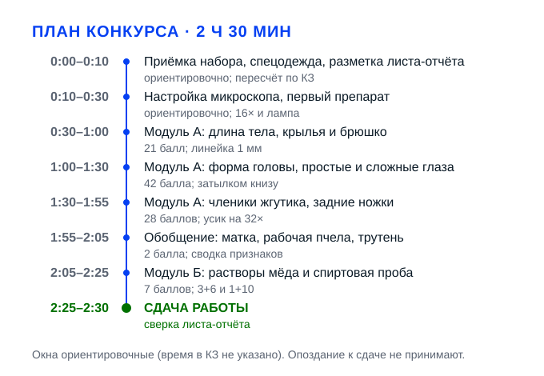
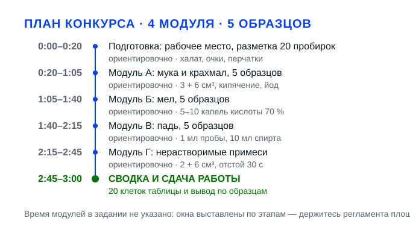
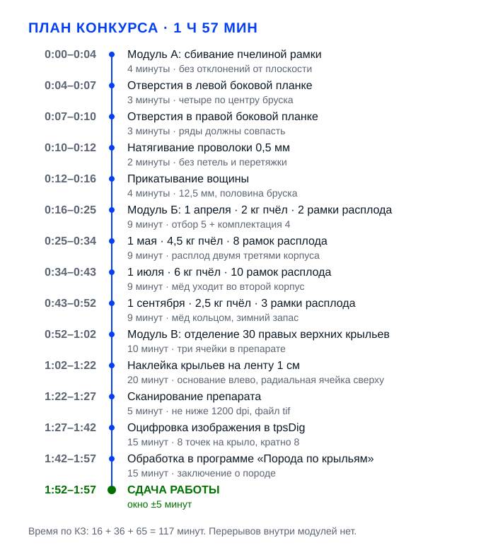

Пчеловодство (Р)
Задания ниже — официальные файлы «Абилимпикс» (источник: abilympics-russia.ru), разложенные по категориям. Решения написаны по тексту задания, регламенту и критериям оценки; в них указано, что именно проверяет эксперт.
Школьник
14–16 лет, базовый уровень заданияВыдержка из официального конкурсного задания: страницы, относящиеся к категории «Школьник» (стр. 5–7, 14–16, 19–24 источника).
Пошаговое решение
Задание категории «Школьники» весит ровно 100 баллов: 93 из них приходится на модуль А, где по внешнему строению тела нужно различить матку, рабочую пчелу и трутня, и только 7 — на модуль Б, где определяют падь или её примесь в мёде. Почти всё время уходит на три зафиксированные в 70 %-ном спирте особи: длину тела измеряют линейкой с ценой деления 1 мм, сравнивают длину крыльев и брюшка, отделяют голову и смотрят её форму при 16-кратном увеличении, ищут простые и сложные глаза, а членики жгутика усика считают уже при 32-кратном. Каждый промер заканчивается записью в лист-отчёт, и запись оценивается отдельно: 12 баллов за определение и 2 балла за строку. В модуле Б важно не торопиться: сначала 3 см³ мёда и 6 см³ дистиллированной воды, полное растворение, затем 1 мл пробы и 10 мл 96 %-ного спирта, и только после отстоя оценивают молочно-белую муть или хлопья.

Задача 1. Подготовить место, микроскоп и препаратыМодуль А · от неё зависят все 93 балла
До первого промера должно быть готово всё: надет халат, пересчитан набор по КЗ, подписан лист-отчёт, микроскоп наведён на резкость и выставлен свет, а три особи разложены так, чтобы их не перепутать. Эта часть не имеет собственных баллов, но именно она определяет, увидите вы форму головы и членики жгутика или будете разглядывать мутное пятно. На неё уходит около двадцати минут, и экономить их за счёт настройки оптики бессмысленно: каждая сэкономленная минута потом возвращается двумя потерянными.
Действие 1.1. Войти на площадку и принять набор
Шаг 1.1.1
Надеваем медицинский халат — в перечне спецодежды компетенции указана смесовая ткань из 65 % полиэстера и 35 % хлопка, — застёгиваем его на все пуговицы и убираем волосы под резинку. Рукава подворачиваем выше локтя: свободный рукав цепляется за окуляр микроскопа, сдвигает тубус и сбивает наводку на резкость. Часы, браслеты и кольца снимаем, ногти коротко подстрижены: украшение царапает стекло и мешает плотно взять пинцет. Руки моем с мылом до запястий и вытираем насухо бумажной салфеткой, потому что капля воды на пальцах оставляет на стекле развод, и препарат в окуляре выглядит мутным.
Фиксированный в 70 %-ном растворе этилового спирта материал пахнет, спирт летуч и огнеопасен, поэтому аккуратность здесь не про внешний вид, а про безопасность. Оценивают результат промеров, а он держится на мелочах: сбитый тубус, отпечаток на стекле, волос в поле зрения — и вместо треугольной головы видно серое пятно. В КЗ отдельно сказано: за первое нарушение запрета на общение с конкурсантом или зрителем снимают 5 баллов, за второе отстраняют.
Проверьте себя по трём признакам: халат застёгнут и сидит свободно, волос не видно ни спереди, ни со стороны затылка, руки сухие. Поднимите руки вверх — рукав не должен сползать к кисти. Посмотрите на стол: на нём нет ничего лишнего, кроме набора по КЗ, потому что каждый посторонний предмет участник потом ищет на ощупь, теряя минуты.
Типичная ошибка — накинуть халат на футболку и считать, что спецодежда есть: открытые предплечья касаются стола, а спирт с препарата попадает на кожу. Вторая — оставить длинный рукав, который при смене объектива задевает револьвер, и выставленная резкость уезжает. Третья — работать в кольце: металл царапает стекло, и в борозде скапливается грязь.
Эксперт оценивает подготовку в первые минуты, пока участник раскладывает набор: смотрит на спецодежду, на порядок на столе и на то, моет ли участник руки перед работой с препаратами.
Шаг 1.1.2
Пересчитываем всё, что дано по КЗ: бинокулярный микроскоп, настольную лампу, пинцеты, препаровальные иглы, предметные стёкла, воду, салфетки и три образца особей пчелиной семьи, зафиксированных в 70 %-ном растворе этилового спирта. Отдельно проверяем линейку: по заданию она должна быть с ценой деления 1 мм, и это принципиально, потому что вся таблица измерений строится в миллиметрах. Смотрим на стёкла на просвет — скол на краю или трещина ловят пузырёк воздуха, и особь в этом месте не рассмотреть. Проверяем, что во всех трёх пробирках материал полностью погружён в спирт и не обсох на стенке.
Модуль А весит 93 балла из 100, и все они набираются на трёх образцах, поэтому недобор одного образца рушит сразу семь строк листа-отчёта. Замену и дополнение выдают до старта, после старта действует правило «что есть, с тем и работаем», и объяснение «мне не хватило иглы» баллов не возвращает. Пересчёт занимает две минуты и экономит потом полчаса поиска.
Все позиции перечня отмечены на бумаге или в памяти, каждое стекло просмотрено на просвет, линейка именно с миллиметровыми делениями, в каждой пробирке виден материал. Если чего-то нет или образец повреждён — вы это уже знаете до начала отсчёта времени, а не в середине модуля.
Чаще всего пропускают препаровальную иглу и начинают отделять голову пинцетом: он сминает затылок, и форма головы читается хуже. Вторая ошибка — взять вместо миллиметровой линейки штангенциркуль «для точности»: по КЗ измерение ведут линейкой, а его показания приходится пересчитывать на глаз.
Эксперт подходит к столу во время приёмки набора и смотрит, сверяется ли участник с перечнем или берёт первое, что попалось под руку. Отсутствие позиции, о которой участник сообщил сразу, он фиксирует как организационную подготовку, а не как ошибку работы.
Шаг 1.1.3
Сразу подписываем лист-отчёт: три столбца «Образец № 1», «Образец № 2», «Образец № 3» и строки по числу показателей из КЗ — длина тела, длина крыльев относительно брюшка, форма головы, расположение простых глаз, расположение сложных глаз, количество члеников в жгутике усика, наличие приспособлений для сбора пыльцы на задних ножках, особь пчелиной семьи. Пробирки ставим в штатив строго по номерам и каждый раз возвращаем особь в свою пробирку, а не в первую попавшуюся. Если штатива нет, пробирки нумеруем полосками бумаги и ставим в ряд слева направо в том же порядке, что и столбцы таблицы.
Перепутанные образцы — самая обидная потеря на этой компетенции: измерения сделаны правильно, а строка таблицы относится к другой особи, и восемь показателей из десяти оказываются неверными. При этом внешне работа выглядит завершённой, поэтому ошибку замечают только на сверке, когда времени на повторные промеры уже нет. Нумерация заранее снимает половину этой проблемы, потому что рука сама тянется к пробирке с нужным номером.
Проверьте: подпись на пробирке совпадает с номером в таблице, каждая строка имеет куда записывать, свободного места хватает. Через пять минут после начала работы посмотрите на стол — все пробирки стоят на своих местах, ни одна не переставлена.
Классика — начать с «первой попавшейся» особи и записать её в столбец № 1, не сверив номер: дальше все три строки съезжают на позицию, и определение не сходится с промерами. Вторая ошибка — держать всех трёх особей на одном стекле: они слипаются, крылья склеиваются спиртом, и разложить их без повреждений не выходит.
Эксперт смотрит на лист-отчёт в начале и в конце: есть ли разметка до начала измерений. Аккуратно подписанная таблица читается как понимание структуры задания, а записи, сбитые в кучу на уголке листа, — как спешка.
Действие 1.2. Настроить микроскоп на 16- и 32-кратное увеличение
Шаг 1.2.1
Ставим микроскоп на ровную поверхность, отступив от края стола 5–10 см, чтобы он не опрокинулся от неловкого движения, и разворачиваем окуляры к себе. Предметный столик опускаем макровинтом до упора вниз, зажимы разводим в стороны. Настольную лампу ставим сбоку от микроскопа, а не перед собой: свет должен падать на нижнюю линзу конденсора, а не в глаза наблюдателю. Включаем лампу и поднимаем яркость постепенно, пока поле зрения не станет светло-серым, без слепящего пятна в центре.
От установки зависит вся работа: на косом свете границы члеников усика и контуры глазков сливаются, а на слишком ярком свете полупрозрачные крылья превращаются в белое пятно. Модуль А даёт 93 балла, из них 12 баллов стоит определение члеников жгутика, и это самый чувствительный к свету промер. Кроме того, устойчиво стоящий микроскоп — условие безопасности: опрокинутый прибор означает разбитый окуляр и потерю рабочего места.
Микроскоп стоит устойчиво и не шатается при нажатии на макровинт, зажимы разведены, столик в нижнем положении, в окуляре ровный свет без тёмных краёв. Посмотрите на объектив сбоку — он не касается столика, зазор не меньше сантиметра.
Поставить микроскоп на край стола и работать, опираясь на него локтем: тубус уходит, резкость теряется, а прибор может съехать на пол. Вторая ошибка — направить лампу прямо в окуляр: свет отражается от линзы, и в поле зрения видна радужная пелена вместо препарата.
Эксперт обращает внимание на организацию места в первые минуты: прибор стоит устойчиво, свет направлен на конденсор, ничего не лежит на предметном столике до начала работы.
Шаг 1.2.2
Кладём на столик чистое предметное стекло, зажимаем его зажимами и наводим резкость на 16-кратном увеличении: глядя сбоку, макровинтом опускаем объектив почти до стекла, оставляя зазор около 3–4 мм, затем смотрим в окуляр и медленно поднимаем тубус, пока не появится резкий край стекла или волосок на нём. После этого подстраиваем окуляры под своё межзрачковое расстояние, чтобы оба глаза видели одно поле, и, если есть диоптрийная регулировка на одном окуляре, подводим её под свою ведущую глазницу. Дальше все переходы делаем только микровинтом, не трогая макровинт.
Правило «сначала смотрим сбоку, потом в окуляр» защищает от главной неприятности — раздавленного препарата: объектив 16× ещё имеет рабочий зазор, но при неаккуратном опускании легко сминает голову пчелы, и определять форму уже нечего. Резкость по краю стекла нужна, чтобы при укладке особи не искать фокус вслепую. Модуль А требует восьми определений на трёх особях, и лишняя минута на наводку съедает время у последних пунктов.
Край предметного стекла в окуляре резкий, картинка не двоится при взгляде двумя глазами, при лёгком повороте микровинта на пол-оборота резкость уходит и возвращается. Препарат на стекле не сдвинут и не раздавлен.
Опускать объектив, глядя в окуляр, — так раздавливают препарат и царапают линзу. Вторая ошибка — наводить резкость макровинтом на каждой особи заново, теряя по минуте, и третья — работать одним глазом, зажмурив второй: через пять минут глаз устаёт, и границы члеников начинают двоиться.
Эксперт смотрит, как участник обращается с оптикой: не касается ли объективом стекла, пользуется ли зажимами, держит ли микроскоп неподвижным. Аккуратность здесь читается сразу, потому что видна с расстояния.
Шаг 1.2.3
Для подсчёта члеников усика переходим на 32-кратное увеличение: поднимаем тубус макровинтом на пару сантиметров, поворачиваем револьвер до щелчка так, чтобы в рабочее положение встал объектив 32×, и только после щелчка снова наводим резкость, глядя сбоку. Стекло при этом не сдвигаем: усик должен остаться в том же месте, иначе его придётся искать заново по всему полю. Если после смены объектива картинка тёмная, добавьте яркость лампы — у 32× светосила ниже, и на прежней яркости края члеников пропадают.
В КЗ подсчёт члеников жгутика ведут именно при 32-кратном увеличении, и это не формальность: на 16× перемычки между члениками сливаются, и вместо 10 или 11 члеников участник видит сплошную трубку. Ошибка в один членик меняет вывод об особи, а вместе с ним рушится итоговое определение и строка весом 12 баллов. Смена объектива без сдвига стекла экономит минуты, которых в конце всегда не хватает.
В поле зрения виден участок усика с чёткими поперечными перемычками, изображение не темнее, чем было на 16×, объектив встал с щелчком и не качается. Посмотрите на револьвер сбоку: маркировка 32 соответствует рабочему положению.
Крутить револьвер, не подняв тубус: объектив 32× почти касается стекла и при повороте сгребает препарат с места. Вторая ошибка — оставить прежнюю яркость и решить, что усик «плохо видно», после чего считать по памяти с чужого препарата. Третья — сдвинуть стекло рукой и потом искать усик, теряя до двух минут.
Эксперт фиксирует, на каком увеличении участник считает членики и поднимает ли тубус перед сменой объектива. Работа на 32× с предварительным подъёмом читается как уверенное владение прибором.
Действие 1.3. Приготовить препарат особи
Шаг 1.3.1
Достаём особь из пробирки пинцетом, захватывая грудной отдел с боков, а не брюшко и не крылья: брюшко сминается и теряет форму, а крылья склеиваются и потом не расправляются. Даём спирту стечь обратно в пробирку, держа особь над горлышком две-три секунды, затем промокаем нижнюю сторону о фильтровальную бумагу одним касанием, без трения. На воздухе не держим дольше 10–15 секунд: спирт испаряется, хитин подсыхает и становится хрупким, а крылья прилипают к стеклу так, что их нельзя приподнять иглой.
От состояния препарата зависит, увидите вы форму головы и членики усика или получите комок. Спирт из пробирки на стекле оставляет лужицу, в которой особь плавает и поворачивается, поэтому избыток влаги убирают до укладки. Промокание одним касанием важно и потому, что при трении о бумагу отламываются щетинки на задних ножках, а именно по ним определяют щёточку и пылевой гребешок — приспособления, за которые дают 12 баллов плюс 2 за запись.
Особь держит форму, брюшко не смято, крылья лежат вдоль тела и не слиплись в комок, на бумаге не осталось оторванных ножек. На стекле после укладки нет лужицы спирта — только влажный след. Промокните препарат ещё раз, если влага выступила: лишняя жидкость сдвигает особь при наклоне стекла.
Брать пинцетом за брюшко: оно продавливается, и при измерении длины тела вы получаете значение на 1–2 мм меньше настоящего. Вторая ошибка — вынуть особь и положить её на стол «подсохнуть», пока настраивается микроскоп: за минуту крылья прилипают к поверхности, и расправить их без разрыва невозможно.
Эксперт смотрит на целостность препарата: целы ли ножки, крылья и усики. Порванный препарат — признак грубого обращения, и это сразу видно, когда участник выкладывает особь на стекло.
Шаг 1.3.2
Укладываем особь на сухое чистое предметное стекло спинкой вверх, головой к себе, строго по продольной оси стекла — так удобнее и прикладывать линейку, и потом ориентировать голову затылочным отверстием книзу. Препаровальной иглой расправляем крылья вдоль брюшка и выводим задние ножки из-под тела, чтобы они не были подвёрнуты. Покровным стеклом препарат не накрываем: особь объёмная, под стеклом она раздавится, а на 16× покровное стекло только добавляет блик. Если препарат начал подсыхать, наносим рядом каплю воды и подводим её иглой к особи, но не льём воду на крылья.
Ориентация препарата задаёт всю дальнейшую работу: при укладке головой к себе вы сразу видите, где передний, а где задний конец тела, и не путаете теменную часть с затылком. Расправленные крылья нужны для промера, а выведенные ножки — чтобы отделить именно заднюю пару, а не среднюю. Всё это входит в измеримые критерии модуля, где длина крыльев относительно брюшка стоит 12 баллов, а запись — ещё 2.
Особь лежит ровно, не качается на боку, крылья видны как две прозрачные пластины вдоль брюшка, задние ножки выведены наружу. Под лупой или на 16× видно, что голова не подвёрнута под грудь. Поверните стекло на 180 градусов: если особь лежит по оси, картина не изменится.
Положить особь на бок: половина признаков скрыта, и участник начинает крутить стекло пинцетом, сдвигая препарат каждый раз. Вторая ошибка — накрыть покровным стеклом «чтобы не сохло»: брюшко расплющивается, крылья выворачиваются, и промер длины тела даёт заниженный результат.
Эксперт смотрит на укладку препарата: ровно ли лежит особь, расправлены ли крылья и ножки. Правильная укладка видна сразу — дальше участник работает, не поправляя препарат после каждого промера.
Задача 2. Измерить длину тела, крыльев и брюшкаМодуль А · 21 балл
Первые два пункта модуля А — самые «арифметические»: нужно получить числа и записать их в лист-отчёт. За длину тела дают 6 баллов и 1 за запись, за соотношение крыльев и брюшка — 12 баллов и 2 за запись, итого 21. Работа идёт линейкой с ценой деления 1 мм, значения записываются целыми миллиметрами, и каждая пара чисел сразу превращается в формулировку из перечня КЗ. Здесь же закладывается основа для итогового определения: длина тела и соотношение крыльев разводят три особи надёжнее всего.
Действие 2.1. Измерить длину тела трёх особей
Шаг 2.1.1
Кладём препарат на белый лист и прикладываем линейку с ценой деления 1 мм вплотную к телу особи, совместив нулевое деление с передним краем головы — точкой между усиками, а не с кончиком усика или с вершиной наличника. Линейку держим параллельно продольной оси тела, а не по диагонали, и прижимаем её так, чтобы она не съезжала. Смотрим на препарат строго сверху, опустив глаз к столу: при взгляде под углом край брюшка проецируется не туда, и результат уезжает на 1–2 мм.
Длина тела — первый и самый наглядный промер: за него в КЗ дают 6 баллов и ещё 1 балл за запись, то есть самая дешёвая позиция, где ошибка обидна. Одновременно это ключевой признак для итогового определения: матка заметно крупнее, трутень крупнее рабочей пчелы, но мельче матки, и по этому промеру проверяют, сходится ли картина по остальным строкам. Линейка по заданию с миллиметровыми делениями, поэтому записывают целые миллиметры.
Нулевое деление совпадает с передним краем головы, линейка лежит вдоль оси тела и не задевает крылья, задний край брюшка приходится на конкретное деление. Повторите промер, сдвинув линейку и вернув её на место: если получилось то же число, измерение надёжное.
Начинать отсчёт от кончика усика: усик отогнут вперёд и добавляет к длине 1–2 мм, из-за чего рабочая пчела «вырастает» до трутня. Вторая ошибка — измерять по диагонали, от головы к боковому краю брюшка: результат завышен, и в таблице появляется число, которое не сходится с крыльями.
Эксперт смотрит, от какой точки участник ведёт отсчёт и как держит линейку. Промер, начатый от кончика усика, виден сразу и считается ошибкой измерения, а не мелкой неточностью.
Шаг 2.1.2
Записываем результат в миллиметрах целым числом и сразу же повторяем промер второй раз, чуть повернув препарат, чтобы поймать ошибку скольжения линейки. Так проходим все три образца, каждый раз возвращая особь в свою пробирку и беря следующую пинцетом за грудку. Промежуточные значения держим на листе рядом с таблицей, а не в памяти: три особи на восемь показателей — это два десятка чисел, и запоминать их бессмысленно. Если два промера одной особи разошлись на 1 мм, берите среднее и запишите его, а не большее из двух.
Числовые значения длины тела по каждому образцу вносятся в лист-отчёт, и это отдельный балл — 1 из 93 в модуле А. Двойной промер нужен не для красоты: рука сдвигает линейку на полмиллиметра незаметно, а в таблице эта погрешность превращается в другой диапазон и, как следствие, в неверное определение особи. Аккуратно заполненная таблица ещё и ускоряет финальную сверку, когда до сдачи остаются минуты.
В таблице три числа, каждое — целое, в миллиметрах, без дробей и «примерно». Значения по трём образцам различаются, а не совпадают: если у всех трёх получилось одно и то же число, вы, скорее всего, измеряли одну и ту же особь.
Записать «около 14» вместо числа: эксперт сверяет значения с образцами, и приблизительная запись не читается как измерение. Вторая ошибка — не возвращать особь в пробирку и брать следующую «из кучи», из-за чего промеры путаются местами.
Эксперт проверяет лист-отчёт после работы и при необходимости просит повторить промер на том же образце. Совпадение вашего числа с его контрольным и есть подтверждение измеримого критерия.
Шаг 2.1.3
Сверяем полученные числа с ориентирами, которые даёт анатомия пчелиной семьи: рабочая пчела обычно укладывается в 12–14 мм, трутень в 15–17 мм, матка в 18–22 мм. Если промер попал в пограничную зону, не подгоняем его под ожидание, а оставляем как есть и делаем пометку, что признак неоднозначный: итог определяется по совокупности всех строк. Записываем в таблицу именно измеренное значение, а не «правильное» — лист-отчёт отражает то, что вы видели на стекле.
Длина тела — 6 баллов плюс 1 за запись, но её настоящая роль в том, что она задаёт рамку для остальных признаков. Подгонка числа под ожидаемый ответ — худшее, что можно сделать: если в строке стоит 20 мм у особи, у которой крылья на 3–4 мм выходят за брюшко, эксперт видит противоречие, и доверие ко всей таблице падает. Кроме того, значения в 1–2 мм от границы бывают у разных пород, и честная пометка показывает понимание вариабельности.
Числа в таблице совпадают с черновиком, ни одно не исправлено «для порядка», у пограничных значений есть пометка. Пробегите таблицу глазами: три числа растут или убывают согласованно с вашими представлениями об особях.
Стремиться во что бы то ни стало получить «красивые» 12, 16 и 20 мм и подтирать результаты. Вторая ошибка — записать длину в сантиметрах, потому что линейка длинная: в КЗ значения выражены в миллиметрах, и запись «1,4» вместо «14» читается как ошибка единиц.
Эксперт сопоставляет числа в листе-отчёте с образцами, которые выданы участнику. Слишком правильные значения при явно другом материале вызывают вопросы, а аккуратные, слегка «неудобные» числа — наоборот, доверие.
Действие 2.2. Сравнить длину крыльев с длиной брюшка
Шаг 2.2.1
Измеряем длину крыла: находим переднее крыло, лежащее вдоль тела, и прикладываем линейку от основания крыла — места, где оно выходит из среднегруди, — до его вершины. Крыло при этом не тянем и не расправляем насильно: слегка придерживаем иглой у основания, чтобы оно не отогнулось, а кончик оставался в естественном положении. Смотрим строго сверху, потому что крыло тонкое и при косом взгляде его вершина читается не там, где она есть. Записываем длину в миллиметрах, затем повторяем промер по второму крылу и берём большее значение.
Длина крыльев относительно брюшка — самая весомая строка модуля А: 12 баллов за определение и 2 балла за запись. Ошибка здесь ломает сразу два вывода, потому что от соотношения зависит, кого вы видите: у рабочей пчелы крылья полностью прикрывают брюшко, у матки — примерно на две трети, у трутня — выходят за него на 3–4 мм. Именно поэтому промер ведут по целому крылу, а не по обломку, и фиксируют цифру, а не общее впечатление.
Линейка лежит от основания крыла до вершины, крыло не отогнуто, число записано целым. Второе крыло дало то же значение или отличается на 1 мм — это нормально; разница в 3 мм означает, что крыло сломано или отогнуто.
Мерить крыло от плеча, а не от основания, — тогда к длине добавляется участок груди, и рабочая пчела «превращается» в трутня. Вторая ошибка — расправить крыло и растянуть его иглой: перепонка тянется, и промер завышается на 1–2 мм.
Эксперт смотрит, где участник держит начало отсчёта и не растягивает ли крыло. Соотношение крыла и брюшка он потом проверяет на своём препарате, и расхождение видно сразу.
Шаг 2.2.2
Тем же способом измеряем длину брюшка: от места сочленения с грудью — узкого стебелька — до вершины последнего сегмента. Линейку кладём вдоль брюшка, слегка прижимая, но не сдавливая сегменты: при нажиме они входят друг в друга, и брюшко укорачивается на 1–2 мм. Точку начала отсчёта ищем глазами, а не на ощупь: стебелёк узкий, и промах на миллиметр смещает всё соотношение. Записываем значение рядом с длиной крыла, чтобы их было удобно сравнивать.
Без длины брюшка нельзя получить соотношение, а соотношение — это и есть тот самый критерий на 12 баллов. Кроме того, длина брюшка сама по себе информативна: у матки брюшко длиннее крыльев и заметно вытянутое, у трутня оно широкое и тупое на конце, у рабочей пчелы — заострённое и полностью закрытое крыльями. Сравнение двух чисел даёт формулировку из КЗ, а не догадку.
Начало отсчёта — стебелёк, конец — вершина последнего сегмента, число целое, записано рядом с длиной крыла. Разница между крылом и брюшком видна уже в цифрах: 0 мм, 2–3 мм или минус 3–4 мм. Сравните два числа ещё раз, не подставляя ожидаемое: разница должна читаться в самих цифрах.
Сдавить брюшко линейкой: сегменты складываются, длина уменьшается, и особь с полным прикрытием выглядит как матка. Вторая ошибка — мерить брюшко от середины груди: к длине прибавляется грудь, и соотношение искажается на 2–3 мм.
Эксперт обращает внимание именно на пару чисел «крыло — брюшко»: по ним проверяется формулировка в листе-отчёте. Если числа не согласуются с записанной формулировкой, строка не зачитывается.
Шаг 2.2.3
Сравниваем два числа и выбираем одну из трёх формулировок, которые прямо заданы в КЗ: крылья полностью прикрывают брюшко, крылья на 2/3 длины прикрывают брюшко, крылья на 3–4 мм выходят за брюшко. Записываем формулировку словами, а не только числа: «на 2/3» — это когда разница около 2–3 мм при брюшке 14–16 мм, а не когда «чуть короче». Одну и ту же фразу повторяем для всех трёх образцов, не оставляя пустых клеток.
КЗ требует именно этих трёх формулировок у конкретного образца, и за определение дают 12 баллов, за запись ещё 2. Свободная формулировка вроде «крылья нормальные» не зачитывается, потому что эксперт не может сопоставить её со шкалой. Кроме того, этот признак — один из самых надёжных при разделении трёх особей: он не зависит от того, как легла особь, если промер сделан правильно.
В каждой из трёх клеток стоит одна из трёх формулировок КЗ, рядом — числа, из которых она получена. Прочитайте строку целиком: чисел и слов не должно быть противоречия. Сформулируйте вслух, что видно на стекле: полное прикрытие, две трети или выход на 3–4 мм.
Написать «крылья длиннее брюшка» вместо «на 3–4 мм выходят за брюшко»: смысл тот же, но эксперту нечего сверять со шкалой, и балл теряется. Вторая ошибка — поставить одну формулировку всем трём образцам, не сравнив числа.
Эксперт сверяет формулировки с числами в соседней строке. Расхождение между ними — самый частый повод снизить балл именно здесь, потому что оно видно без повторного осмотра препарата.
Задача 3. Определить форму головы и расположение глазМодуль А · 42 балла
Три строки этого блока стоят по 14 баллов: 12 за определение и 2 за запись в лист-отчёт, в сумме 42 балла — почти половина модуля А. Работа идёт на отделённой голове, уложенной затылочным отверстием книзу, при 16-кратном увеличении. Сначала оценивают общий силуэт капсулы, затем ищут три простых глазка и решают, на темени они или на лбу, потом смотрят сложные глаза — их размер и то, смыкаются ли они на темени. Все три признака связаны между собой, поэтому записывать их нужно сразу, а не в конце модуля.
Действие 3.1. Отделить голову и определить её форму
Шаг 3.1.1
Отделяем голову: пинцетом берём особь за грудь, а препаровальной иглой подводим остриё под шейку — тонкое сочленение между затылком и переднегрудью — и одним коротким движением отделяем головной отдел. Тянем не вбок, а слегка на себя и вверх, чтобы не вырвать из головы усики и не смять затылок. Голову сразу переносим на чистое предметное стекло, а тушку кладём рядом на отдельное стекло или в пробирку: она ещё понадобится для отделения усика и задних ножек.
Форма головы стоит 12 баллов и ещё 2 за запись, и вся эта строка держится на целостности головной капсулы. Смятый затылок или вырванные усики меняют силуэт, и вместо пятиугольной формы участник видит бесформенный комок, а определить, где темя, а где лоб, уже невозможно — а это ещё две строки по 12 баллов. Одно неверное движение иглой стоит, таким образом, до 40 баллов модуля.
Голова отделена целиком, затылочное отверстие видно как аккуратное углубление, усики на месте или хотя бы один сохранён, хитин не раздавлен. Тушка лежит отдельно и не мешает смотреть препарат. Проверьте на просвет: капсула просвечивает ровно, без тёмных вмятин от пинцета.
Отрывать голову пальцами или пинцетом за глаз: капсула сминается, глазки вдавливаются, и определить их расположение нельзя. Вторая ошибка — резать по груди, а не по шейке: вместе с головой остаётся кусок переднегруди, и общий контур головы искажается.
Эксперт смотрит на препарат после отделения: цела ли голова, сохранены ли усики. Раздавленная голова — заметная потеря, и она отражается сразу в трёх строках листа-отчёта.
Шаг 3.1.2
Кладём голову на предметное стекло затылочным отверстием книзу и наводим резкость при 16-кратном увеличении. Смотрим на общий контур: у треугольной формы боковые края сходятся к темени почти прямыми линиями, у пятиугольной видны выраженные углы за сложными глазами и на темени, у округлой контур плавно закругляется без углов. Оцениваем именно силуэт капсулы, а не наличник и не усики, которые могут торчать в стороны и мешать. Если контур читается плохо, поворачиваем голову на 10–15 градусов, добиваясь симметрии, и смотрим ещё раз.
Форма головы — 12 баллов плюс 2 за запись, и это первый признак, по которому участник начинает различать особей. Треугольная голова характерна для рабочей пчелы, пятиугольная — для трутня, округлая — для матки, и эта строка вместе с глазами даёт итоговое определение. Ориентация затылочным отверстием книзу задана в КЗ не случайно: только так теменная часть оказывается сверху и форма читается так, как её описывает определитель.
В окуляре виден целый контур головы с симметричными боковыми краями, затылок внизу, сложные глаза по бокам. Форма опознаётся одним словом из трёх, без «что-то среднее». Обведите контур иглой в воздухе над стеклом: так форма запоминается лучше.
Судить о форме по голове, лежащей на боку: сверху видна только одна половина капсулы, и округлая голова матки выглядит треугольной. Вторая ошибка — смотреть на 32×: в поле зрения попадает часть головы без краёв, и общий силуэт оценить невозможно.
Эксперт проверяет ориентацию головы на стекле: затылком книзу, симметрично. Затем сверяет записанную форму с образцом, и расхождение по этому признаку для него — сигнал перепроверить остальные строки.
Шаг 3.1.3
Записываем в лист-отчёт одно слово из трёх, заданных в КЗ: треугольная, пятиугольная или округлая. Повторяем операцию для всех трёх образцов, каждый раз отделяя голову от своей особи и укладывая её затылком книзу. Головы не смешиваем: если положить их рядом на одно стекло, потом уже не разобрать, где чья, а форма у всех трёх разная и служит главным ориентиром. После осмотра голову можно оставить на стекле — она ещё нужна для определения глаз и усика.
Отдельная строка «форма головы» в листе-отчёте оценивается в 2 балла, а сама форма — в 12, и запись должна быть дословно из перечня КЗ, иначе её не с чем сверять. Кроме того, три разных формы у трёх образцов — это удобная проверка: если у вас получились две одинаковые, значит, вы либо перепутали головы, либо неверно оценили контур, и лучше вернуться к микроскопу сразу, а не после заполнения всей таблицы.
В трёх клетках стоят три слова из перечня КЗ, и хотя бы два из них различаются. Рядом с каждым словом можно вспомнить, как выглядел контур: прямые сходящиеся края, углы за глазами или плавная дуга. Если два слова совпали, вернитесь к микроскопу и посмотрите ещё раз.
Писать «овальная», «круглая», «вытянутая»: формулировки не из шкалы КЗ, эксперт не может их сопоставить, и балл не начисляется. Вторая ошибка — заполнять строку по памяти в конце модуля, когда головы уже убраны.
Эксперт читает строку формы головы вместе со строкой глаз: у одной и той же особи эти признаки согласуются. Несогласованность он отмечает как ошибку определения, даже если каждое слово само по себе допустимо.
Действие 3.2. Найти простые глаза и определить их положение
Шаг 3.2.1
Ищем простые глаза — три небольших глазка на голове. Голову держим затылочным отверстием книзу, как требует КЗ, и при 16-кратном увеличении ведём взглядом от затылка к наличнику по средней линии. Глазки выглядят как три тёмные точки, обычно собранные в треугольник, и сидят они на выпуклой части капсулы, поэтому ловят свет иначе, чем окружающий хитин. Найдя одну точку, ищем две другие рядом: они расположены симметрично и почти всегда видны одновременно при небольшом покачивании препарата.
Расположение простых глаз — 12 баллов плюс 2 за запись, и это один из двух признаков, которые надёжно разделяют трутня и самок: у матки и рабочей пчелы глазки собраны треугольником на темени, у трутня они смещены на лоб и занимают промежуточное положение между теменем и лбом. Ошибка здесь обычно не в наблюдении, а в ориентации: если голова лежит затылком кверху, темя и лоб меняются местами, и вывод получается обратным.
В поле зрения видны три точки, образующие треугольник, вершина которого направлена к наличнику или к затылку — это и есть различие между теменем и лбом. Пересчитайте их: именно три, а не две и не четыре.
Принять за глазки блики на хитине: блик смещается при повороте препарата, а глазок остаётся на месте, поэтому сомнительную точку надо проверить покачиванием стекла. Вторая ошибка — искать глазки на 32×: в поле зрения попадает участок в пару миллиметров, и все три точки одновременно не видны.
Эксперт просит показать найденные глазки на препарате. Если участник уверенно ставит иглу на треугольник из трёх точек, признак зачитывается независимо от записи, а запись потом сверяют со шкалой.
Шаг 3.2.2
Уточняем положение найденного треугольника относительно частей головы: темя — это верхняя, затылочная часть капсулы между сложными глазами, лоб — участок ниже, ближе к наличнику и усикам. Если треугольник сидит высоко, у самой границы с затылком, это темя; если он смещён вниз, к основанию усиков, и между ним и затылком остаётся заметное поле, это лоб. Проверяем ориентир по сложным глазам: у трутня они смыкаются на темени, и треугольник глазков оказывается прямо под местом смыкания, а у самок между глазами остаётся полоса хитина.
КЗ даёт ровно две формулировки: треугольником на темени либо на лбу, с промежуточным положением между теменем и лбом. Разница между ними — это разница между самкой и трутнем, и стоит она 12 баллов, а вместе с записью 14. Определять положение «на глаз» без привязки к анатомическим ориентирам опасно: головы у всех трёх особей похожи, и легко записать одинаковый ответ там, где он должен различаться.
Вы можете назвать, где находится темя, где лоб и на каком расстоянии от затылка сидит треугольник. Ответ попадает в одну из двух формулировок КЗ, а не в «примерно посередине». Покачайте стекло: глазки останутся на месте, а блик уйдёт.
Определять положение глазков, не сориентировав голову: при перевёрнутом препарате темя и лоб меняются местами, и трутень описывается как матка. Вторая ошибка — считать, что глазки у всех особей расположены одинаково, и переносить ответ с первого образца на остальные.
Эксперт смотрит, как участник показывает ориентиры: может ли он словом обозначить темя и лоб на своём препарате. Уверенная привязка к ориентирам — признак понимания, а не угадывания.
Шаг 3.2.3
Записываем формулировку словами КЗ: «треугольником на темени» или «на лбу, занимают промежуточное положение между теменем и лбом». Делаем это для всех трёх образцов, и каждый раз проверяем себя вопросом, где на этой конкретной голове находится затылок, потому что ориентация препарата могла измениться при переносе. Если для какого-то образца признак не читается, лучше вернуться к микроскопу и посмотреть ещё раз, чем ставить прочерк.
Строка «расположение простых глаз» в листе-отчёте стоит 2 балла, а само определение — 12, и запись должна повторять формулировку КЗ, чтобы эксперт мог её однозначно сопоставить. Кроме того, эта строка вместе с формой головы и сложными глазами образует тройку признаков, по которой в конце модуля определяют особь, и прочерк в ней ломает логику обобщения, за которое дают отдельные 2 балла.
В трёх клетках стоят формулировки из КЗ, и хотя бы у одного образца ответ отличается от двух других. Прочитайте строку вместе со строкой формы головы: комбинации не должны противоречить друг другу. Проверьте, что формулировка не сокращена: в ней есть и место, и отношение к темени и лбу.
Оставлять пустую клетку или писать «не видно»: балл за запись не начисляется, а на обобщение это переносится как отсутствие данных. Вторая ошибка — писать одну и ту же формулировку всем трём образцам, потому что «глазки везде одинаковые».
Эксперт сверяет строку с препаратом, который остался на столе. Если формулировка совпадает с тем, что видно в окуляр, признак зачитывается полностью, включая балл за запись.
Действие 3.3. Оценить сложные глаза
Шаг 3.3.1
Осматриваем сложные глаза: голову держим затылочным отверстием книзу и смотрим на её боковые поверхности при 16-кратном увеличении. Оцениваем две вещи сразу — размер глаза относительно головы и то, смыкаются ли глаза на темени. У одних особей глаз занимает почти всю боковую поверхность и наверху соприкасается с парным, оставляя на темени узкую полоску; у других он заметно меньше, сидит по бокам и сверху между ними остаётся широкое поле хитина. Свет ведём чуть сбоку, чтобы фасеточная поверхность дала характерный сетчатый отблеск.
Расположение сложных глаз — 12 баллов и 2 за запись, и это самый наглядный признак различия: у трутня глаза крупные, занимают всю боковую поверхность головы и соприкасаются на темени, у матки и рабочей пчелы они меньших размеров и сидят по бокам. Признак виден даже при неидеальной резкости, поэтому он удобен как проверка остальных строк: если по глазам получается трутень, а по длине тела — матка, значит, где-то ошибка.
Видно место на темени между глазами: либо узкая полоска, либо широкое поле. Размер глаза сопоставим с высотой головы — либо почти вся боковая поверхность, либо примерно половина. Сравните оба глаза одной особи: у симметричного признака размеры совпадают.
Смотреть на голову сверху и делать вывод по одному глазу: перспектива искажает, и широкое поле хитина выглядит узким. Вторая ошибка — принимать за смыкание тень от капсулы: тень смещается вместе со светом, а граница глаза остаётся на месте.
Эксперт просит показать место на темени между глазами. Умение показать узкую полоску или широкое поле — то, что он проверяет в первую очередь, потому что этот признак не зависит от качества препарата.
Шаг 3.3.2
Сравниваем размер сложного глаза с размерами самой головы: прикидываем, какую долю боковой поверхности он занимает и насколько его верхний край близок к средней линии. Если верхние края двух глаз почти соприкасаются и между ними остаётся полоска уже толщины усика, это смыкание; если между ними расстояние сравнимо с шириной лба, смыкания нет. Полезно перевернуть препарат на 180 градусов и посмотреть ещё раз: картина должна сохраниться, а не «перевернуться», иначе вы смотрите на блик.
КЗ даёт две формулировки: глаза занимают всю боковую поверхность головы и соприкасаются на темени либо глаза меньших размеров и занимают боковые поверхности. Разница между ними — это разница между трутнем и самкой, и она стоит 12 баллов плюс 2 за запись. Проверка с переворотом препарата нужна потому, что при одном освещении отражение от фасеток тянется полосой и легко принимается за смыкание.
Оценка не меняется при повороте препарата и при смене стороны света. Вы можете сказать, чему равно расстояние между глазами на темени — доли миллиметра или нескольким миллиметрам. Отметьте его на глаз относительно ширины лба.
Определять смыкание по одному ракурсу и не переворачивать препарат: блик от фасеток читается как сплошная полоса, и самка описывается как трутень. Вторая ошибка — сравнивать глаза разных особей между собой, а не с головой, на которой они сидят.
Эксперт проверяет признак на своём препарате и сверяет с записью. Если участник уверенно показывает смыкание или его отсутствие, балл ставится полностью, включая запись.
Шаг 3.3.3
Записываем формулировку из КЗ словами: «занимают всю боковую поверхность головы и соприкасаются на темени» либо «сложные глаза меньших размеров и занимают боковые поверхности головы». Заполняем строку для всех трёх образцов, а рядом, на черновике, оставляем короткую пометку вроде «смыкаются» или «разделены полосой», чтобы при финальной сверке не перечитывать длинную фразу. Черновик не сдаём, но он экономит время на обобщении.
Запись в лист-отчёт по этой строке стоит 2 балла, а определение — 12, и формулировка должна быть дословно из перечня КЗ. Пометка на черновике нужна для последнего шага модуля, где все восемь строк сводятся в одно определение особи: держать в голове восемь длинных формулировок по трём образцам невозможно, а сверять их заново — значит терять минуты, которых перед сдачей всегда не хватает.
В трёх клетках стоят формулировки КЗ, у разных образцов они различаются, а на черновике есть короткие пометки, совпадающие с таблицей. Прочитайте строку вслух — она должна звучать как описание, а не как догадка.
Писать «глаза большие» без привязки к шкале: эксперт не может сопоставить такую запись с критерием. Вторая ошибка — переносить формулировку с первого образца на все остальные, не посмотрев каждый препарат.
Эксперт сверяет три строки, описывающие голову и глаза, между собой. Согласованная картина по всем трём читается как системная работа, а разнобой — как спешка в конце модуля.
Задача 4. Разобрать усики и задние ножки, определить особьМодуль А · 30 баллов
Заключительная часть модуля А: подсчёт члеников жгутика усика на 32-кратном увеличении, разбор пяти приспособлений для сбора пыльцы на задних ножках и обобщение всех восьми строк. Членики стоят 14 баллов, ножки ещё 14, обобщение — 2, итого 30. К этому моменту уже известны длина тела, соотношение крыльев и признаки головы, поэтому именно здесь складывается окончательный ответ: матка, рабочая пчела или трутень. Ошибка в один признак ещё поправима, ошибка в выводе обнуляет смысл всей таблицы.
Действие 4.1. Выделить усик и подсчитать членики жгутика
Шаг 4.1.1
Берём тушку, оставшуюся после отделения головы, или саму голову и выделяем усик: пинцетом придерживаем головную капсулу, а иглой поддеваем основание усика в сочленовной ямке — углублении перед сложным глазом, у самого наличника. Тянем не за вершину, а за основание, коротким движением вдоль оси усика, иначе он отломится посередине и останется торчать из головы обрубком. Выделенный усик переносим на чистое предметное стекло, укладываем плашмя и при необходимости чуть прижимаем иглой, чтобы он не свернулся кольцом.
Количество члеников в жгутике — 12 баллов и 2 за запись, и вся эта строка держится на том, цел ли усик. Обломок у основания сохраняет первый членик, но теряет скапус, и пересчёт сдвигается на единицу: вместо 10 получается 9, вместо 11 — 10, а разница между этими числами и есть разница между самкой и трутнем. Уложенный плашмя усик даёт ровную цепочку члеников в одной плоскости, и считать их можно без перефокусировки.
Усик лежит на стекле целиком, от сочленовной ямки до вершины, не свернулся и не раздавлен, булавовидное утолщение на конце на месте. В окуляре видна непрерывная цепочка члеников без разрывов. Если в ямке остался обломок, усик отделён не полностью.
Тянуть усик за вершину пинцетом: он отрывается в середине жгутика, и часть члеников остаётся на голове. Вторая ошибка — резать усик иглой поперёк, чтобы «отделить быстрее»: срез проходит через членик, и его границы потом не восстановить.
Эксперт смотрит на препарат усика: целый он или обломан. Обломанный усик он отмечает, и пересчёт по нему засчитывает только при явно сохранившейся основной части жгутика.
Шаг 4.1.2
Наводим резкость на 32-кратном увеличении и ведём взглядом по усику от основания к вершине, считая членики вслух или про себя, отмечая каждый иглой сбоку. Сначала отделяем три части усика: длинный первый членик — скапус, за ним короткий педицель, а дальше идёт жгутик, состоящий из мелких члеников. Считаем именно членики жгутика, а не весь усик, и начинаем с первого членика после педицеля. Границы члеников видны как светлые поперечные перемычки, а на вершине жгутика есть небольшое утолщение — не путайте его с лишним члеником.
В КЗ сказано прямо: количество члеников определяют на третьем отделе усика, то есть на жгутике, при 32-кратном увеличении. Если посчитать весь усик целиком, к жгутику прибавятся скапус и педицель, и вместо 10 или 11 получится 12 или 13 — числа, которых в задании нет. Ошибка стоит 12 баллов определения и 2 балла записи, а вместе с ней рушится и определение особи, потому что жгутик — один из двух признаков, разделяющих трутня и самок.
Вы видите скапус, педицель и чёткую цепочку мелких члеников за ними, каждая перемычка читается как светлая линия. Счёт начинается с первого членика после педицеля и заканчивается до утолщения на вершине.
Считать все членики подряд, включая скапус и педицель: результат завышается на два, и в листе-отчёте появляется число, которого нет в перечне КЗ. Вторая ошибка — терять счёт на середине и начинать заново с другого конца, получая другой результат.
Эксперт просит назвать число и показать, где кончается педицель и начинается жгутик. Именно эта граница показывает, понял ли участник, что считать нужно только третий отдел.
Шаг 4.1.3
Записываем результат целым числом: по КЗ у каждого образца получается 10 или 11 члеников. Если счёт дважды дал разные числа, повторяем проход по усику ещё раз, начиная с вершины, и берём то значение, которое подтвердилось дважды. Проходим так все три образца, каждый раз выделяя свой усик из своей головы. В таблицу ставим только число, без слов «около» и без диапазона, потому что диапазона в задании нет.
Строка «количество члеников в жгутике усика» оценивается в 2 балла, а само определение — в 12, и в КЗ жёстко заданы два возможных значения. Это самая проверяемая строка: эксперт может пересчитать членики на том же препарате за минуту, и любое расхождение сразу видно. Одновременно это один из двух признаков, по которым отличают трутня от самок, поэтому число должно быть получено, а не угадано.
В трёх клетках стоят целые числа 10 или 11, у разных образцов они могут различаться. Второй проход по тому же усику дал то же число. Если числа разошлись, третий проход делайте по участкам: сначала первая половина жгутика, потом вторая.
Записать 12 или 13, посчитав скапус и педицель: значения выходят за перечень КЗ, и строка не зачитывается. Вторая ошибка — поставить одинаковое число всем трём образцам, не пересчитав каждый усик заново.
Эксперт пересчитывает членики на препарате участника. Совпадение чисел — самый быстрый способ убедиться, что строка заполнена по наблюдению, а не по догадке.
Действие 4.2. Рассмотреть задние ножки
Шаг 4.2.1
Отделяем задние ножки: переворачиваем тушку брюшком вверх, находим последнюю пару ног, отходящую от заднегруди, и пинцетом берём ножку у основания, а иглой подрезаём сочленение с грудью. Отделяем сразу обе ножки одной особи, потому что сравнивать их нужно между собой. Кладём на предметное стекло так, как требует КЗ: одну наружной стороной кверху, другую внутренней, чтобы увидеть и наружные, и внутренние приспособления. Не тянем за лапку — она отрывается у голени, и половина признаков теряется.
Строение задних ножек — 12 баллов и 2 за запись, и это единственная строка, где признаки видны только при определённой укладке: корзиночка и щёточка смотрятся снаружи, а пыльцевой гребешок, щипчики и ушко — изнутри. Если положить обе ножки одинаково, половина приспособлений остаётся невидимой, и участник записывает отсутствие там, где они есть. Две ножки одной особи нужны ещё и для проверки симметрии.
Обе задние ножки отделены целиком, с бедром, голенью и лапкой, лежат на стекле в разных положениях — одна наружу, другая внутрь. На стекле нет оторванных кусочков лапки. Проверьте симметрию: правая и левая ножки одной особи устроены одинаково.
Брать ножку за лапку: она обламывается, и вместе с ней уходит часть щёточки. Вторая ошибка — положить обе ножки наружной стороной вверх и решить, что гребешка и щипчиков нет: они находятся на внутренней стороне голени.
Эксперт смотрит на укладку ножек: одна наружу, другая внутрь. Именно так задано в КЗ, и правильная укладка показывает, что участник знает, где искать каждое приспособление.
Шаг 4.2.2
Рассматриваем ножки при 16-кратном увеличении и ищем пять приспособлений по очереди. Корзиночка — это расширенная часть голени с гладкой площадкой, окружённой длинными волосками, похожая на ковшик. Щёточка — густой ряд жёстких волосков на внутренней стороне первого членика лапки. Пыльцевой гребешок — ряд коротких твёрдых зубчиков на внутренней стороне голени. Щипчики — выемка между голенью и лапкой с двумя выступами. Ушко — гладкая ложбинка у основания последнего членика лапки. Идём по ножке от бедра к лапке и отмечаем, что нашли, а что нет.
КЗ перечисляет ровно эти пять приспособлений, и в лист-отчёт нужно записать их наличие или отсутствие у каждого образца. Весь смысл строки в том, что аппарат для сбора пыльцы есть только у рабочей пчелы: у матки и трутня задние ножки устроены проще, корзиночки и гребешка у них нет. Поэтому 12 баллов здесь дают не за умение разглядеть волоски, а за вывод, который из этого следует, и ошибка в один признак меняет определение особи.
По каждой ножке вы можете назвать, какие из пяти приспособлений видны, а какие отсутствуют. Корзиночка видна как площадка с обрамлением, гребешок — как ряд зубчиков, ушко — как ложбинка у сочленения. Начинайте с корзиночки: она самая заметная.
Искать все пять приспособлений на одной стороне ножки: корзиночка и щёточка видны снаружи, гребешок, щипчики и ушко — изнутри, и без второй укладки половина не находится. Вторая ошибка — принимать обычные волоски за щёточку: щёточка отличается плотным рядом и жёсткостью, а не просто опушением.
Эксперт просит показать корзиночку и гребешок на препарате. Эти два признака он считает ключевыми для вывода о наличии аппарата сбора пыльцы, и именно их проверяет первыми.
Шаг 4.2.3
Записываем в лист-отчёт результат по строке «наличие приспособления для сбора пыльцы на задних ножках»: перечисляем найденные приспособления или отмечаем, что их нет. Если у особи найдены корзиночка, щёточка, гребешок, щипчики и ушко, пишем, что аппарат сбора пыльцы развит полностью; если найдена только часть, перечисляем именно её. Заполняем строку для всех трёх образцов, а на черновике помечаем, у кого признак есть, а у кого нет.
Запись по этой строке стоит 2 балла, а определение — 12, и формулировка должна быть сопоставима с перечнем КЗ. Частичное наличие тоже важно фиксировать: у матки отдельные волоски на ножках есть, но корзиночки и гребешка нет, и запись «приспособлений нет» при найденных волосках выглядит неточной. Кроме того, эта строка напрямую участвует в итоговом определении: аппарат сбора пыльцы — признак рабочей пчелы.
В трёх клетках записано, какие приспособления найдены, и хотя бы у одного образца набор отличается от других. Запись согласуется с черновиком и с тем, что видно на стекле прямо сейчас. Перечитайте её через минуту: перечисление должно совпадать с тем, что вы называли вслух.
Писать «есть» или «нет» без перечисления: при частичном наборе такая запись не отражает картину и снижает балл, а прочерк в клетке читается как пропуск. Вторая ошибка — записывать признаки по памяти, после того как ножки уже убраны.
Эксперт сверяет запись с препаратом ножек. Расхождение между перечислением и тем, что видно в окуляр, он отмечает как ошибку наблюдения, а не как описку в листе.
Действие 4.3. Свести признаки и определить особь
Шаг 4.3.1
Сводим все восемь строк листа-отчёта в короткую сводку по каждому образцу: длина тела, соотношение крыла и брюшка, форма головы, положение простых глаз, положение сложных глаз, число члеников жгутика, наличие приспособлений для сбора пыльцы. Удобно выписать на черновик три строки — по одной на образец — и рядом с каждой поставить короткие пометки вместо длинных формулировок. Затем читаем столбец сверху вниз и смотрим, складывается ли цельная картина или признаки спорят между собой.
Обобщение результатов — отдельный пункт КЗ, за него дают 2 балла, и без сводки он превращается в угадывание. Восемь признаков по трём образцам — двадцать четыре значения, держать их в голове невозможно: в конце модуля участник обычно помнит только последний промер. Сводка на черновике позволяет увидеть противоречие и вернуться к нужной строке, пока препараты ещё на столе.
На черновике три строки по числу образцов и в каждой заполнены все восемь позиций. Противоречий не осталось или они отмечены, и по каждому есть решение, какую строку перепроверить. Отметьте спорные строки: их и проверяют первыми.
Начинать обобщение с конца, уже убрав препараты: перепроверить спорный признак будет нечем. Вторая ошибка — сводить только те строки, которые заполнены уверенно, и забывать про пропуски, которые потом и становятся причиной неверного вывода.
Эксперт смотрит на черновик и на лист-отчёт: есть ли система в записях. Сводка по образцам читается как понимание задания целиком, а не как набор разрозненных промеров.
Шаг 4.3.2
Определяем особь по совокупности признаков. Матка: тело 18–22 мм, крылья прикрывают брюшко на две трети, голова округлая, простые глаза на темени, жгутик из 10 члеников, аппарата сбора пыльцы нет. Рабочая пчела: тело 12–14 мм, крылья полностью прикрывают брюшко, голова треугольная, простые глаза на темени, жгутик из 10 члеников, все пять приспособлений на месте. Трутень: тело 15–17 мм, крылья выходят за брюшко на 3–4 мм, голова пятиугольная, простые глаза на лбу, сложные крупные и смыкаются на темени, жгутик из 11 члеников. Записываем название в последнюю строку.
Определение матки, рабочей пчелы и трутня — итог всего модуля А, и в КЗ оно вынесено отдельным пунктом, хотя стоит всего 2 балла: без него обесцениваются 91 балл предыдущих строк, потому что они существуют ровно для этого вывода. Признаки складываются в устойчивые комбинации, поэтому решение принимают по большинству совпавших строк, а не по одной. Именно здесь видно, работал участник осмысленно или механически заполнял таблицу.
У каждого образца в последней строке стоит одно из трёх названий, и оно подтверждается не менее чем пятью строками таблицы. Комбинации признаков не смешаны: нет особи, у которой одновременно крупные смыкающиеся глаза и полный набор приспособлений для сбора пыльцы.
Определять особь по единственному признаку, чаще всего по размеру: длина тела вариабельна, и пограничное значение уводит в сторону. Вторая ошибка — записать «пчела» вместо «рабочая пчела»: формулировка должна соответствовать заданию, где различают матку, рабочую пчелу и трутня.
Эксперт сверяет итоговую строку со всеми предыдущими. Если вывод согласуется с таблицей, он зачитывает и обобщение, и определение; если нет — снижает балл и за обобщение, и за строки, где видно расхождение.
Шаг 4.3.3
Проводим финальную сверку модуля А: проходим по строкам и убеждаемся, что ни одна клетка не пуста, все формулировки взяты из перечней КЗ, а числа записаны в миллиметрах и целыми. Отдельно проверяем согласованность: если по совокупности признаков вышел трутень, то жгутик должен быть из 11 члеников, а крылья выходить за брюшко. Замеченное противоречие исправляем не подгонкой числа, а повторным осмотром препарата, если он ещё на столе, и только потом меняем запись. В конце ставим подпись и время, если этого требует форма листа.
Сверка отнимает пять минут и сохраняет десятки баллов: несогласованная таблица читается экспертом как небрежность, даже когда отдельные промеры верны. За обобщение в КЗ дают 2 балла, но проверяют его вместе со всеми строками, поэтому противоречие бьёт по обеим позициям сразу. Кроме того, на сдаче работу уже не исправить: лист-отчёт забирают, и повторный осмотр препаратов невозможен.
Все клетки заполнены, формулировки дословно совпадают с перечнями КЗ, числа целые, итоговая строка согласуется с остальными. Подпись и время на месте, лист не имеет помарок, скрывающих значения. Пролистайте лист от начала до конца: так пропуски видны лучше.
Исправлять числа «под вывод», чтобы таблица выглядела стройной: при проверке препарата расхождение становится очевидным. Вторая ошибка — сдавать лист с пустыми клетками, рассчитывая, что их не заметят: пустая клетка в измеримом критерии — это ноль баллов по строке.
Эксперт просматривает лист-отчёт целиком перед оценкой: на полноту, на соответствие формулировок и на согласованность итоговой строки. Именно этот просмотр определяет, складывается ли впечатление цельной работы.
Задача 5. Определить падь в мёдеМодуль Б · 7 баллов
Модуль Б короткий, но полностью самостоятельный: три образца мёда, раствор, спиртовая проба и таблица со знаками «+» и «-». Подготовка образцов стоит 3 балла, сама реакция 3 балла, запись результатов 1 балл. Здесь легко потерять всё на мелочи: недолить спирт, взять водопроводную воду, посмотреть пробирку сверху вместо просвета. Реакция простая, но её результат зависит от соотношения 3 к 6 при растворении и 1 к 10 при постановке пробы, поэтому отмеривать нужно посудой, а не на глаз.
Действие 5.1. Подготовить растворы мёда
Шаг 5.1.1
Переходим к модулю Б и берём чистую пробирку на 10 см³. Отмеряем 3 см³ мёда: удобнее всего шприцем без иглы или мерной пипеткой, потому что мёд вязкий и на стенках пипетки остаётся заметная часть. Затем мерной стеклянной пипеткой добавляем 6 см³ дистиллированной воды — именно дистиллированной, а не из-под крана, потому что соли жёсткости дают собственную муть и мешают увидеть реакцию. Мёд с водой должны оказаться в одной пробирке, и соотношение 3 к 6 задано в КЗ: вдвое больше воды, чтобы получить достаточно жидкий раствор для последующей реакции.
Подготовка образцов к анализу — отдельный критерий модуля Б на 3 балла из 7, то есть почти половина всего модуля. Соотношение и посуда заданы в КЗ не как рекомендация: при другом количестве воды раствор получится либо слишком густым и муть не разойдётся, либо слишком разбавленным, и реакция окажется слабой. Пробирка именно на 10 см³, потому что дальше в неё добавляют ещё спирт, и в меньшем объёме раствор просто не поместится.
В пробирке 3 см³ мёда и 6 см³ воды, общий объём около 9 см³, пробирка не переполнена. Вода налита пипеткой, а не на глаз, и мёд не остался на стенках густым мазком. До горлышка должно оставаться место, иначе при добавлении спирта раствор перельётся.
Наливать воду «на глаз» до половины пробирки: соотношение уезжает, и раствор получается слишком разбавленным. Вторая ошибка — брать водопроводную воду: её соли дают лёгкую муть, которую потом принимают за положительную реакцию на падь.
Эксперт смотрит на посуду и на отмеривание: пользуется ли участник пипеткой или льёт из бутылки. Отмеривание по объёму — первое, что он проверяет в модуле Б, потому что дальше вся реакция зависит от концентрации.
Шаг 5.1.2
Перемешиваем смесь стеклянной палочкой до полного растворения мёда: движения круговые, палочка доходит почти до дна, но не царапает его, а стенки пробирки обмываются раствором. Мёд растворяется не сразу, поэтому мешаем 30–60 секунд и смотрим на просвет: пока видны тяжёлые волокна или комочки на дне, раствор не готов. Не взбалтываем пробирку, закрывая её пальцем: пена, поднявшаяся при встряхивании, потом держится десятки минут и маскирует муть в реакции. Полученный раствор должен быть однородным и прозрачным.
Полное растворение — условие того, что дальше спиртовая проба покажет именно падь, а не нерастворённые частицы мёда. Крупинки и волокна дают хлопья, которые легко принять за положительную реакцию, описанную в КЗ как «мутнеет и даёт хлопьевидный осадок». Оценивают подготовку в 3 балла, и однородность раствора — главный её видимый признак. Пена же мешает и на глаз, и при фотофиксации результата, которая часто используется при разборе.
Раствор однородный, на просвет не видно комочков и волокон, на стенках нет густого мёда. Пены на поверхности нет или она уже осела, жидкость прозрачная, без взвеси. Смотрите на лампу сбоку: однородность читается именно в проходящем свете.
Мешать 5–10 секунд и считать, что мёд растворился: на дне остаются тяжёлые фракции, и дальше они дают ложные хлопья. Вторая ошибка — интенсивно встряхивать пробирку: пена держится долго, и результат реакции читается неверно.
Эксперт смотрит раствор на просвет. Однородность видна сразу, и по ней он судит, соблюдена ли технология подготовки, за которую в модуле Б дают 3 балла.
Шаг 5.1.3
Готовим три пробирки — по одной на каждый образец мёда — и сразу подписываем их номерами, совпадающими с таблицей. Работаем по одному образцу: отмерили, растворили, подписали, поставили в штатив, взяли следующий. Палочку между образцами вытираем насухо салфеткой или берём новую, иначе остатки предыдущего раствора переносятся в следующую пробу. Пипетки тоже не смешиваем: у каждой пробы своя, либо промытая и обсушенная.
В листе-отчёте модуля Б три строки — образец № 1, № 2 и № 3, и каждая оценивается отдельно, по 3 балла за подготовку, 3 за реакцию и 1 за запись. Если пробирки не подписаны, через десять минут уже не разобрать, где какой мёд, а перенос раствора палочкой даёт положительную реакцию там, где её нет. Перекрёстное загрязнение — самая частая причина того, что все три образца «оказываются падевыми».
На трёх пробирках стоят номера, каждый совпадает со столбцом таблицы. Палочка и пипетка либо вымыты, либо для каждой пробы свои, а на столе нет капель от предыдущего раствора. Поставьте пробирки в штатив в том же порядке, что и столбцы таблицы.
Подписывать пробирки в конце, когда все три уже стоят в штативе: порядок забывается, и таблица заполняется по догадке. Вторая ошибка — мешать все образцы одной палочкой, начиная с самого падевого: следующая проба даёт муть, и результат оказывается ложноположительным.
Эксперт проверяет маркировку пробирок и то, меняется ли инструмент между пробами. Аккуратность в этом месте прямо влияет на достоверность трёх строк таблицы.
Действие 5.2. Поставить спиртовую пробу
Шаг 5.2.1
Отбираем 1 мл подготовленного раствора и переносим в чистую пробирку, затем добавляем 10 мл 96 %-ного этилового спирта. Спирт наливаем мерной пипеткой или цилиндром, а не на глаз, и держим склянку со спиртом закрытой между отборами: он летуч, и за полчаса работы концентрация в открытой посуде падает. Спирт добавляем к раствору, а не наоборот, и льём по стенке, чтобы не разбрызгать. Работаем в стороне от открытого огня — настольная лампа не должна стоять вплотную к пробирке.
Сама реакция на падь оценивается в 3 балла, и её результат зависит от соотношения: 1 мл пробы на 10 мл 96 %-ного спирта задано в КЗ. При меньшем объёме спирта декстрины пади не выпадают, и реакция выглядит отрицательной; при большем — муть становится слабой и плохо различимой. Спирт необходим потому, что падевые сахара и декстрины в нём нерастворимы и выделяются в виде мути, а цветочный мёд остаётся прозрачным.
В пробирке 1 мл раствора и 10 мл спирта, общий объём около 11 мл, пробирка не переполнена. Спирт не разлит по столу, склянка закрыта, рядом нет открытого огня. Закрывайте её сразу после отбора: спирт летуч.
Добавлять спирт на глаз «примерно столько же»: при недостатке спирта падь не выпадает, и образец с примесью отмечается как чистый. Вторая ошибка — держать склянку со спиртом открытой всю работу: концентрация падает, и реакция слабеет от пробы к пробе.
Эксперт обращает внимание на отмеривание спирта и на порядок смешивания. Соотношение объёмов он может проверить по мерной посуде, оставшейся на столе.
Шаг 5.2.2
Закрываем пробирку и взбалтываем энергично, но коротко — 5–10 секунд, держа её вертикально и придерживая пробку пальцем. Затем ставим пробирку в штатив, даём постоять 30–60 секунд и смотрим на просвет, поднеся к лампе сбоку, а не глядя сверху: муть видна именно в проходящем свете. Отмечаем три вещи: осталась ли жидкость прозрачной, появилась ли равномерная молочно-белая муть, выпали ли хлопья или осадок. Сравниваем с контролем — пробиркой, где раствора пади заведомо нет, если эксперт её выдал.
Различить три исхода — это и есть содержание критерия на 3 балла: мёд с примесью пади сильно мутнеет и окрашивается в молочно-белый цвет, чисто падевый мёд мутнеет и даёт хлопьевидный осадок, цветочный остаётся прозрачным. Без выдержки и без взгляда на просвет участник видит только «что-то помутнело» и ставит плюс всем образцам. Взбалтывание нужно для того, чтобы спирт вошёл в контакт со всем объёмом пробы, а не остался слоем сверху.
Через минуту после встряхивания жидкость в пробирке либо прозрачная, либо равномерно мутная, либо с видимыми хлопьями на дне. Пены на поверхности нет, уровень спирта не изменился, а рядом с пробиркой на столе нет капель.
Смотреть на пробирку сверху, при обычном освещении: муть не читается, и проба с примесью выглядит нормальной. Вторая ошибка — оценивать сразу после встряхивания, пока пена не осела: пузырьки имитируют муть и дают ложноположительный результат.
Эксперт смотрит пробирки на просвет вместе с участником и сверяет его вывод с картиной. Именно на этом шаге чаще всего расходятся записи в таблице и реальный результат.
Шаг 5.2.3
Записываем результат по каждому образцу знаком «+» или «-»: плюс ставим, если раствор сильно помутнел и приобрёл молочно-белый оттенок или дал хлопьевидный осадок, минус — если жидкость осталась прозрачной. Если сомневаетесь, повторите реакцию на свежей порции раствора того же образца: одна лишняя минута дешевле неверного знака. Пробирки не выбрасываем до конца работы — эксперт может попросить показать результат. Заполняем все три строки таблицы, не оставляя ни одной пустой.
Запись результатов исследования образцов мёда — 1 балл из 7 в модуле Б, и она должна быть однозначной: в КЗ прямо сказано, что положительную реакцию отмечают знаком «+», отрицательную — знаком «-». Словесные описания вроде «немного мутный» не сопоставляются со шкалой. Кроме того, именно эта таблица показывает, умеет ли участник различать степени помутнения, а не просто фиксировать «мутно — не мутно».
В трёх клетках стоят только плюсы и минусы, без пометок и вопросов. Знак согласуется с тем, что видно в пробирке прямо сейчас, и пробирки подписаны теми же номерами. Покачайте пробирку перед записью: осевшая муть снова поднимется.
Ставить плюс при любом помутнении, включая лёгкую опалесценцию от пузырьков: ложноположительные результаты обесценивают таблицу. Вторая ошибка — вылить содержимое пробирок сразу после оценки, чтобы «не мешало»: показать результат будет нечем.
Эксперт сверяет знаки в таблице с пробирками на столе. Совпадение всех трёх строк — самый быстрый путь к полному баллу за модуль Б, и проверяет он это первым.
Действие 5.3. Оформить лист-отчёт и сдать работу
Шаг 5.3.1
Переносим результаты в итоговый лист-отчёт по форме из КЗ: таблица с тремя строками «Образец № 1», «Образец № 2», «Образец № 3» и столбцом «Качественная реакция на падь». Пишем разборчиво, ручкой, а не карандашом, и не исправляем знак поверх старого: если ошиблись, зачёркиваем одной чертой и пишем рядом. Ниже, если осталось место, коротко отмечаем, что именно наблюдали — молочно-белая муть, хлопья или прозрачный раствор, потому что это помогает при устном пояснении.
Лист-отчёт — единственный документ, по которому эксперт выставляет баллы после того, как работа сдана, и в модуле Б за него дают 1 балл, а в модуле А — по 1–2 балла за каждую строку. Неразборчивая запись или знак, переправленный так, что не понять исходный, читаются против участника. Короткая пометка о наблюдении не обязательна, но она показывает ход мысли и помогает, если эксперт задаст вопрос о причине вывода.
Таблица заполнена полностью, все три строки на месте, заголовки совпадают с формой КЗ. Знаки читаются однозначно, исправлений поверх текста нет. Прочитайте таблицу вслух: запись, которую трудно произнести, трудно и проверить.
Заполнять таблицу «по памяти» после уборки пробирок: знаки путаются местами, особенно если два образца дали одинаковый результат. Вторая ошибка — писать результаты в черновик и не переносить в лист-отчёт, рассчитывая сделать это в конце.
Эксперт оценивает лист-отчёт после сдачи. Читаемость и полнота таблицы для него — часть впечатления о работе, а в измеримых критериях это прямые баллы за запись.
Шаг 5.3.2
Сверяем весь лист-отчёт целиком: сначала модуль А — восемь строк по трём образцам, затем модуль Б — три строки. Проверяем, что номера образцов в модуле А и модуле Б означают то, что нужно, что ни одна клетка не пуста, а итоговая строка «особь пчелиной семьи» согласуется с остальными. Смотрим на время: до сдачи должно оставаться не меньше пяти минут, потому что приём работы идёт по часам, а опоздание к сдаче в КЗ фактически означает потерю результата.
Сверка — последняя возможность поймать ошибку, которую уже нельзя исправить после сдачи: препараты убирают, пробирки забирают, вопросы задавать некому. В модуле 100 баллов, из них 93 в модуле А, и пропущенная клетка в измеримом критерии — гарантированный ноль по строке. Пять минут запаса нужны ещё и потому, что при равном количестве баллов победитель определяется по меньшему времени.
Все клетки обеих таблиц заполнены, формулировки и знаки на месте, время до сдачи не меньше пяти минут. Лист подписан, если форма этого требует, и лежит на столе готовым к передаче. Отложите его на минуту и посмотрите снова.
Дотягивать последнюю строку до последней минуты и сдавать под звонок: любые формальности при приёме съедают время, и работа может не попасть в зачёт. Вторая ошибка — не перечитывать таблицу после заполнения и сдавать с пустой клеткой в середине.
Эксперт принимает работу по времени и просматривает лист на полноту. Пять минут запаса и заполненные клетки — то, что отличает законченную работу от брошенной на середине.
Шаг 5.3.3
Сдаём лист-отчёт эксперту: подходим, называем свой номер участника, кладём лист на стол и, если эксперт задаёт вопрос, коротко поясняем, по какому признаку сделан вывод по каждому образцу. После сдачи убираем рабочее место: пробирки и растворы — в отведённую посуду, стёкла и инструменты промываем и складываем, микроскоп переводим в транспортное положение — объектив на малое увеличение, столик опущен, лампа выключена. Спирт закрываем и убираем на место, стол протираем насухо.
Сдача и порядок на месте завершают работу: разлитый спирт на столе — это риск для следующего участника, а незакрытая склянка с 96 %-ным спиртом рядом с горящей лампой просто опасна. Порядок влияет и на оценку организации: эксперт видит рабочие места до конца смены. Кроме того, короткое и точное пояснение по признакам показывает, что таблица заполнена осмысленно, а не скопирована.
Лист-отчёт у эксперта, рабочее место сухое и свободное, микроскоп в транспортном положении, лампа выключена, спирт закрыт и убран, пробирки и стёкла в отведённой посуде. На столе не осталось личных вещей и черновиков.
Уйти, оставив на столе пробирки с раствором и открытую склянку спирта: это нарушение и по технике безопасности, и по организации. Вторая ошибка — оставить микроскоп с объективом 32× у столика: при переносе его легко повредить, а следующий участник получит прибор со сбитой оптикой.
Эксперт принимает лист и осматривает место. Аккуратно убранный стол и прибор в транспортном положении он отмечает отдельно, потому что это видимая часть культуры работы.
Студент
учащиеся колледжей и техникумовВыдержка из официального конкурсного задания: страницы, относящиеся к категории «Студент» (стр. 7–8, 16–17 источника).
Пошаговое решение
Пять образцов мёда и четыре качественные реакции на каждый — в итоге двадцать клеток в листе-отчёте должны быть заполнены знаками «+» или «−». Это задание категории «Студенты»: нужно не просто капнуть йод в пробирку, а провести четыре разные реакции, правильно прочитать каждую и в конце сказать, в каком образце признаков фальсификации нет и чем испорчены остальные. Модуль А — мука и крахмал: 3 см³ мёда, 6 см³ воды, кипячение и 3–4 капли йода. Модуль Б — мел: те же 3 и 6 см³ и 5–10 капель 70 % уксусной кислоты. Модуль В — падь: 1 мл пробы и 10 мл 96 % спирта. Модуль Г — нерастворимые примеси: 2 см³ мёда, 6 см³ воды, 30 секунд отстоя и просмотр в свете лампы. Ошибки здесь чаще организационные: перепутанные пробирки, не до конца растворённый мёд, горячий раствор под йодом, капля из предыдущей пробы на палочке. Поэтому работа идёт от разметки посуды к реакциям и только потом к таблице.

Задача 1. Развернуть рабочее место и подготовить посуду с реактивамиМодули А–Г · организационный блок и техника безопасности
До первой реакции стол должен быть готов целиком: размеченная посуда на пять образцов и четыре модуля, проверенные дозаторы, закрытые реактивы и заполненный шапкой лист-отчёт. Это не формальность перед началом, а условие, без которого дальше невозможно ни считать капли, ни доказать, что двадцать клеток таблицы относятся именно к тем пробам, которые вы исследовали. Пятнадцать минут, потраченные здесь, окупаются на модуле В, где счёт идёт на миллилитры и любая путаница с номером пробирки стоит всего результата.
Действие 1.1. Организовать место и обезопасить зону
Шаг 1.1.1
Надеваем халат и застёгиваем его на все пуговицы, на руки — целые одноразовые перчатки, на глаза — защитные очки, волосы убираем под резинку или колпак. Рукав застёгиваем у запястья, чтобы между краем перчатки и тканью не оставалось открытой кожи: в модуле Б мы работаем с 70 % уксусной кислотой, в модуле В — с 96 % спиртом, и капля на предплечье это уже травма, а не замечание. Перчатки меняем сразу, как только на них попал мёд: липкая поверхность переносится на штатив, на маркер и на крышки склянок, и путаться вы начинаете не в реакциях, а в том, какая проба где.
Спецодежда и защита глаз — отдельный пункт в блоке техники безопасности, и его проверяют до старта, а не после работы. Причина не в формальности: кислоту и спирт вы открываете сами, пробирку с горячим раствором держите рукой в перчатке, наклоняя её над пламенем. Эксперт смотрит не на наличие халата как такового, а на то, закрыты ли глаза и руки в тот момент, когда склянка с кислотой открыта, а горелка горит.
Очки сидят на переносице и не сползают при наклоне головы, перчатки целые и сухие, волосы не выбиваются ни спереди, ни сзади. Поднимите руки на уровень глаз: если видна полоска кожи между краем перчатки и рукавом, рукав надо застегнуть, а перчатку натянуть выше.
Работать без очков «потому что через стекло плохо видно окраску» — самая частая ошибка: первая же капля кислоты, попавшая в глаз, останавливает конкурс целиком, и баллы за реакции уже не имеют значения. Вторая — снять перчатки, чтобы удобнее отбирать вязкий мёд: следы с пальцев уходят в следующую пробу.
Эксперт фиксирует защиту глаз и рук в первые минуты, до первой реакции, и дальше отмечает, не касаетесь ли вы лицо и волосы между образцами. Очки и перчатки он проверяет ещё раз, когда вы открываете склянку с кислотой.
Шаг 1.1.2
Разводим зоны на столе и на штативе. Штатив с пробирками ставим по центру, слева — склянки с реактивами (йод или Люголь, 70 % уксусная кислота, 96 % спирт, дистиллированная вода), справа — лист-отчёт, карандаш и лампу для модуля Г. Спиртовку ставим на несгораемую подложку у дальнего края, отдельно от склянки со спиртом: расстояние между пламенем и открытым спиртом должно быть не меньше тридцати сантиметров, и это правило не обсуждается.
Спирт 96 % — легковоспламеняющаяся жидкость, его пары тяжелее воздуха и стелются по столу. Если склянка стоит рядом с горелкой, достаточно искры от спички, чтобы вспыхнула лужица на подложке. Кроме безопасности есть и практический смысл: когда зоны разведены, вы не ищете пипетку под штативом и не тянетесь через пламя за кислотой, а значит, не теряете время и не роняете пробирки.
Проверьте рукой: от горелки до спирта вы должны дотянуться, только встав и сделав шаг. Все склянки закрыты крышками, подложка сухая, на столе нет лишних бумаг и посторонних пробирок, лампа стоит так, чтобы её свет падал на штатив, а не в глаза.
Поставить спирт и уксусную кислоту в один ряд с горелкой «чтобы всё было под рукой» — классическая ошибка новичка, которая на чемпионате приводит к остановке работы. Вторая — держать штатив на краю стола: задетая локтем пробирка с раствором мёда уносит с собой результаты целого образца.
Эксперт обходит рабочие места до старта и отмечает расположение горелки относительно реактивов: это видно сразу, без вопросов участнику. Отдельно отмечается, убрана ли склянка со спиртом подальше от пламени до первого нагрева.
Шаг 1.1.3
Размечаем посуду до того, как в неё попадёт первый грамм мёда. На каждую пробу нужно четыре пробирки — по одной на модули А, Б, В и Г, всего двадцать. Маркером по стеклу пишем на верхней трети пробирки номер образца и букву модуля: «1-А», «1-Б», «1-В», «1-Г», и так до пятого. Ставим их в штатив рядами по образцам, а не по модулям: тогда весь набор по одной пробе стоит рядом, и вы физически не можете перепутать пятый образец с первым.
Двадцать одинаковых пробирок с прозрачным раствором мёда на глаз неразличимы, а реакции читаются по оттенку, который легко перепутать при переносе знака не в ту строку. Разметка — единственное, что связывает каплю йода в пробирке с клеткой в листе-отчёте. Если подписи нет, вы через час работы будете помнить только то, что «синяя была какая-то из средних».
Подпись читается на просвет, не смазывается от капель воды и не стёрлась после первого мытья. Проверьте: возьмите две пробирки из разных рядов и прочитайте надписи, не поднимая их к свету — если приходится всматриваться, перепишите номер толще и выше.
Подписывать пробирки после первой реакции, «когда уже будет видно» — к этому моменту в штативе стоят четыре одинаковые пробирки с жёлтым раствором, и синяя окраска в одной из них уже ни к чему не привязана. Вторая ошибка — писать на нижней части пробирки: надпись закроется рукой при нагреве и смоется при мытье.
Эксперт подходит к штативу и проверяет, что маркировка есть на каждой пробирке и совпадает с номерами в листе-отчёте — это видно за десять секунд. Пустые немаркированные пробирки на столе он тоже отмечает: это признак того, что разметка делалась наспех.
Шаг 1.1.4
Готовим лист-отчёт: чертим таблицу на пять строк и шесть столбцов. Первый столбец — номер образца с первого по пятый, дальше четыре столбца под реакции (мука и крахмал, мел, падь, механические примеси) и последний — «не выявлено признаков фальсификации». Сверху подписываем свою фамилию, дату и время начала работы, внизу оставляем место для вывода. Пишем карандашом: знак может понадобиться исправить, а зачёркнутая клетка с пометкой «повтор» выглядит честнее, чем подчищенная ручкой.
Таблица — это форма сдачи работы, по ней эксперт сверяет ваш вывод с тем, что реально происходило в пробирках. Пустая или неполная таблица при правильных реакциях читается как незаконченная работа, а двадцать клеток — ровно тот минимум, который требует задание: пять образцов на четыре модуля плюс итоговый столбец.
Все двадцать клеток видны, столбцы подписаны, строки пронумерованы, ни одна клетка не выходит за край листа. Проверьте себя на пустой таблице: закройте глаза, назовите вслух, в каком столбце мел, а в каком падь — если сбиваетесь, переставьте заголовки.
Начать реакции, не начертив таблицу: знаки приходится держать в голове, и после четвёртого образца они сливаются. Вторая ошибка — оставить столбец «не выявлено признаков фальсификации» без внимания: именно он превращает четыре разрозненные реакции в итоговый вывод по образцу.
Эксперт смотрит лист-отчёт в конце, но подписанную шапку видит уже в начале: готовый бланк сразу отличает участника, который понимает структуру задания.
Действие 1.2. Проверить посуду, дозаторы и реактивы
Шаг 1.2.1
Перебираем пробирки и отбираем только мерные, на 10 см³, с целой шкалой. Каждую поднимаем к свету и медленно проворачиваем: на стекле не должно быть скола у горла, трещины по корпусу и мутного налёта внутри. Внутри пробирка должна быть сухой — капли воды на стенках сдвигают объём, а при кипении дают толчок, из-за которого раствор выбрасывает наружу.
Объём здесь не случайный: 3 см³ мёда и 6 см³ воды дают 9 см³ в пробирке на 10 см³, то есть запас всего в один кубический сантиметр. При кипении раствор пенится, и пробирка, налитая выше шкалы, выплёвывает часть пробы — концентрация меняется, а вместе с ней и яркость окраски, по которой вы делаете вывод.
Шкала читается, деления 5 и 10 видны, сколов нет, пробирка сухая и без запаха предыдущей пробы. Покатайте её между пальцами над столом: трещина выдаёт себя едва слышным щелчком и полосой, которая видна только на просвет.
Взять пробирку со сколом у горла: при нагреве она лопается по сколу, и вы теряете и пробу, и время, а осколки в растворе мёда — это ещё и порез. Вторая ошибка — использовать пробирку без шкалы и наливать «на глаз»: 3 см³ вязкого мёда на глаз не отмерить, ошибка легко доходит до половины объёма.
Эксперт осматривает посуду выборочно, но треснувшую пробирку в руках участника видит сразу — по тому, как он её держит и как осторожно ставит. Пробирку со сколом, которую участник всё же берёт в работу, он остановит до начала нагрева.
Шаг 1.2.2
Раскладываем дозаторы под конкретные объёмы: для мёда — шприц или мерная пипетка на 5 см³ с широким носиком, для воды — пипетка или цилиндр на 10 см³, для йода и кислоты — отдельные капельницы, для спирта — мерный цилиндр на 10 мл. Мёд набираем медленно, удерживая поршень, и держим шприц вертикально носиком вниз: вязкий продукт идёт с усилием, и при резком движении в шприц затягивает воздух.
Каждый модуль опирается на точный объём: 3 см³ мёда и 6 см³ воды в модулях А, Б, В, 2 см³ и 6 см³ в модуле Г, 1 мл пробы и 10 мл спирта в модуле В. Ошибка в объёме не разрушает реакцию, а смазывает её: разбавленная проба даёт бледную синеву, которую вы запишете как «−», а концентрированная — густую муть, которую легко принять за положительный результат.
Наберите 3 см³ мёда в шприц и посмотрите на шкалу на уровне глаз, а не сверху: сверху мениск читается неверно. В шприце не должно быть пузырей воздуха, носик не облеплен мёдом снаружи — иначе часть объёма уйдёт мимо пробирки, по стенке.
Отбирать мёд той же пипеткой, которой потом берут воду: мёд остаётся в носике, и в пробирку уходит меньше воды, чем вы отмерили. Вторая ошибка — брать йод и уксусную кислоту одной капельницей: даже две капли кислоты в склянке с йодом портят реактив на весь конкурс.
Эксперт следит, меняете ли вы дозатор между мёдом и водой, и смотрит на положение шкалы при отборе — по глазам видно, читает участник объём или наливает наугад.
Шаг 1.2.3
Проверяем реактивы до первой капли. Читаем этикетки и сверяем концентрации: уксусная кислота должна быть 70 %, спирт — 96 %, йод — спиртовая настойка или водный раствор Люголя. Смотрим на жидкость в склянке: йод не должен быть обесцвеченным, у спирта не должно быть взвеси, у кислоты — постороннего осадка. Крышки откручиваем над столом, а не над штативом, и сразу закрываем обратно.
Йод — единственный реактив, который может «тихо» перестать работать: на свету и в открытой склянке он улетучивается, концентрация падает, и крахмал в пробе даёт не синее, а бледно-голубое окрашивание. Вы запишете «−» там, где фальсификация есть, и весь вывод по образцу окажется неверным. Спирт 96 % жадно тянет воду из воздуха, поэтому открытым его держать нельзя: разбавленный спирт хуже осаждает декстрины пади.
Этикетка читается, срок годности не истёк, жидкость прозрачная, крышка закрывается плотно и не прокручивается. Капните каплю йода на белую бумагу: цвет должен быть насыщенным жёлто-коричневым, а не бледно-жёлтым — бледная капля говорит о том, что реактив слабый.
Использовать то, что стоит на столе, не читая этикетку: вместо 70 % кислоты под рукой может оказаться 9 % уксус, и «вскипания» вы не увидите даже на образце с мелом. Вторая ошибка — оставить склянку со спиртом открытой на всё время работы: к модулю В он уже не тот, что был в начале.
Эксперт может подойти и проверить, та ли склянка у вас в руках: подмена реактива или работа с просроченным — грубая ошибка, а не мелкая небрежность. Если реактив вызывает сомнение, правильный ход — заменить его до старта, а не работать «как есть».
Шаг 1.2.4
Заправляем и проверяем спиртовку до старта. Снимаем колпачок, смотрим уровень спирта: он должен занимать не больше двух третей объёма резервуара и не меньше четверти. Фитиль выступает над гнёздышком на пять-шесть миллиметров, он сухой и не обуглен. Зажигаем спичкой сбоку, а не сверху, и держим спичку так, чтобы рука не оказалась над пламенем. Спички убираем в сторону сразу после зажигания.
Модуль А требует довести раствор до кипения, и делать это придётся пять раз — по одному на образец. Переполненная горелка при нагреве начинает плеваться горящим спиртом, а пустая гаснет посреди кипячения, и пробирку приходится остужать и начинать заново. Обугленный фитиль даёт копоть: сажа оседает на стекле и мешает смотреть окраску.
Пламя ровное, голубовато-жёлтое, без копоти и треска; высота — около трёх сантиметров. Колпачок лежит рядом на столе, а не в кармане халата, и им можно погасить горелку в любую секунду. Проверьте, что резервуар не горячий на ощупь снизу — если греется, горелка неисправна.
Доливать спирт в горящую или даже тёплую горелку: пары вспыхивают от фитиля, и это самая опасная ошибка всего задания. Вторая — зажигать одну горелку от другой, наклоняя её: спирт выливается из резервуара на стол и загорается.
Момент зажигания он тоже держит в поле зрения: спичкой сбоку, без наклона над столом, и на то, где лежит колпачок, когда пламя горит. Погасить горелку колпачком, а не задувать её, — тоже его пункт: по этому движению видно, работал ли участник с огнём раньше.
Задача 2. Модуль А: найти муку или крахмал в пяти образцахМодуль А · качественная реакция с йодом, 5 образцов
Модуль А — это цикл из трёх операций, повторённый пять раз: отмерить 3 см³ мёда, развести 6 см³ дистиллированной воды, довести до кипения, остудить, капнуть 3–4 капли йода и прочитать цвет. Крахмал и мука в мёде — самая грубая фальсификация, её добавляют для веса и густоты, и именно она даёт самый яркий признак: синее окрашивание раствора. Сложность не в реакции, а в дисциплине: пять пробирок с одинаковым на вид раствором, кипячение на открытом пламени и необходимость каждый раз мыть палочку. Ложные результаты появляются из-за нерастворённого мёда и капли, перенесённой из предыдущей пробы.
Действие 2.1. Приготовить растворы образцов
Шаг 2.1.1
Отбираем 3 см³ мёда в пробирку с меткой «А». Мёд перед отбором перемешиваем в банке шпателем или палочкой: у стоялого мёда верхний слой жиже нижнего, и проба, взятая сверху, не соответствует образцу в целом. Шприц держим вертикально, набираем медленно, следя за поршнем, и на 3 см³ останавливаемся, когда поршень встанет точно напротив деления. Носик шприца опускаем в пробирку и выдавливаем мёд по стенке, а не в центр, чтобы не поймать пузырь.
Задание задаёт именно 3 см³, и это не произвольная цифра: от неё зависит соотношение мёда и воды, то есть концентрация крахмала в пробе. Если мёда больше, раствор будет густым и тёмным, синева на коричневом фоне читается плохо; если меньше — реакция окажется слишком бледной, и вы запишете «−» на фальсифицированном образце. Отбор пробы — первая точка, где результат зависит от вашей руки, а не от реактива.
Шкала шприца видна на уровне глаз, поршень стоит на 3 см³, в цилиндре нет пузырей, на стенках пробирки мёд лежит ровным слоем до самого дна. Наклоните пробирку: мёд должен сползти на дно, а не остаться на стенке у горла, иначе при добавлении воды он не растворится полностью.
Брать мёд ложкой «примерно до половины пробирки»: вязкий продукт не даёт ровного края, и объём гуляет на сантиметр. Вторая ошибка — отобрать пробу из верхнего слоя неперемешанного образца: если фальсификат осел книзу, вы исследуете чистый мёд и сделаете неверный вывод по всему образцу.
Эксперт смотрит на отбор пробы в первые минуты модуля: читает ли участник шкалу и перемешивает ли образец перед взятием. Отдельно фиксируется, перемешан ли образец перед отбором: проба из верхнего слоя сразу видна по консистенции.
Шаг 2.1.2
Добавляем 6 см³ дистиллированной воды мерной пипеткой или цилиндром. Воду наливаем по стенке пробирки, наклонённой на тридцать-сорок градусов, тонкой струёй: так мёд смывается со стенок вниз, и перемешивать потом легче. Дистиллированную воду берём только из склянки с соответствующей надписью — водопроводная содержит соли и хлор, из-за которых раствор мутнеет сам по себе.
Шесть кубических сантиметров воды на три кубических мёда — это разведение один к двум, предусмотренное методикой. В таком растворе крахмал даёт чистое синее окрашивание, а не грязно-серое, и видно его даже при слабой фальсификации. Кроме того, только разведённый мёд можно довести до кипения без пригорания: густой мёд на дне пробирки карамелизуется и темнеет, маскируя любую реакцию.
Уровень в пробирке поднялся до 9 см³ по шкале, стенки смыты, мёд лежит на дне вязкой каплей, вода над ним прозрачная. Если на стенках остались тёмные потёки мёда — добавьте воду ещё раз по кругу, пока они не сойдут.
Налить воду из-под крана или из первой попавшейся бутылки: соли жёсткости дают муть, которую легко принять за признак фальсификации. Вторая ошибка — лить воду в центр пробирки сильной струёй: мёд разбрызгивается по стенкам, и часть пробы остаётся нерастворённой.
Эксперт проверяет, из какой склянки налита вода, и смотрит на уровень: 9 см³ в пробирке на 10 см³ — это ровно то, что предусмотрено заданием. Его интересует и то, смыты ли стенки: сухие полосы мёда над уровнем воды означают, что часть пробы не участвует в реакции.
Шаг 2.1.3
Перемешиваем стеклянной палочкой до полного растворения мёда: круговыми движениями по стенкам и по дну, не поднимая палочку высоко и не взбивая раствор. Мёд растворяется от краёв к центру, поэтому палочку ведём по окружности, постепенно опускаясь к дну. Между образцами палочку промываем дистиллированной водой и вытираем насухо, иначе первая же проба перенесёт крахмал во вторую.
Нерастворённые кристаллы и крупинки — главный источник ложных результатов в этом модуле: йод окрашивает не только крахмал, но и любую плотную взвесь, а мутный раствор с песчинками выглядит как положительная реакция. Полностью прозрачный раствор — это условие, при котором синее окрашивание можно трактовать однозначно, и эксперт оценивает именно чистоту подготовки пробы.
Поднимите пробирку к свету: раствор прозрачный, на дне нет крупинок, на стенках нет полос мёда. Посмотрите на палочку — она должна быть чистой, без липкого слоя. Если муть осталась, дайте постоять минуту и перемешайте снова, не добавляя воды.
Взболтать пробирку, закрыв её пальцем: раствор вспенивается, пена держится на стенках и потом читается как муть. Вторая ошибка — не мыть палочку между образцами: капля раствора с крахмалом, перенесённая в чистую пробу, даёт «+» и ломает весь вывод по образцу.
Палочка и прозрачность раствора перед нагревом — его следующий пункт: мутная проба сразу вызывает вопрос, чем она отличается от следующей. Мутный раствор до нагрева он отмечает как повод для повтора, даже если реакция потом получилась яркой.
Действие 2.2. Провести реакцию с йодом
Шаг 2.2.1
Ставим пробирку в держатель и вносим в пламя спиртовки так, чтобы прогревалась нижняя треть с содержимым, а не дно: держим под углом примерно сорок пять градусов, отверстием от себя и от соседей. Сначала проводим пробиркой над пламенем 2–3 секунды, прогревая стенки, и только потом опускаем в пламя. Доводим до кипения — появления первых крупных пузырей и лёгкого помутнения, — но не кипятим минуту напролёт.
Кипячение в методике нужно для того, чтобы крахмальные зёрна клейстеризовались и стали доступны йоду: без нагрева реакция с мукой может остаться слабой и неочевидной. Одновременно нагрев — самая опасная операция модуля. Резкий перегрев дна даёт толчок кипения, и горячий раствор выбрасывает из пробирки прямо на руку и на стол; именно поэтому пробирку греют по стенкам и не заполняют её выше шкалы.
В растворе появились крупные пузыри, жидкость помутнела и поднялась, но из горла ничего не выплеснулось. Пробирка не коптится, пламя под ней ровное. Если по стеклу пошла сетка мелких трещин — сразу снимайте и берите новую, греть дальше нельзя.
Держать пробирку дном в пламени: содержимое вскипает толчком, и половина пробы уходит на стол. Вторая ошибка — греть отверстием к себе, «чтобы видеть, что происходит»: при вскипании брызги летят именно в эту сторону.
Эксперт следит за положением пробирки в пламени и за тем, смотрит ли участник в сторону или в раствор — по корпусу видно, понимает ли он, чем рискует.
Шаг 2.2.2
Снимаем пробирку с пламени и ставим в штатив остывать до комнатной температуры. Не окунаем в холодную воду, не ставим под струю и не дуем в горло: разница температур на толстом стекле даёт трещину, а выдыхаемый воздух несёт капли слюны в пробу. Ждём естественного остывания, при необходимости покачивая пробирку в воздухе. Готовность проверяем тыльной стороной ладони у стекла: оно должно быть не теплее руки.
Йод летуч: в горячем растворе он уходит в пар, и окраска получается бледной или исчезает за несколько секунд. Остывшая проба даёт устойчивый цвет, который можно спокойно сравнить с соседними и записать. Второй смысл паузы — безопасность: капля йода, попавшая в кипящий раствор, вскипает и разбрызгивается, а в холодный просто растекается по поверхности.
Стенка пробирки не теплее тыльной стороны ладони, конденсата на стекле нет, раствор стоит спокойно, без пузырей. Не начинайте добавлять йод, пока видите хотя бы лёгкое движение жидкости от остаточного кипения.
Капнуть йод в горячий раствор «чтобы не ждать»: окраска появляется на секунду и бледнеет, и вы либо записываете ложный «−», либо капаете ещё, перекрашивая раствор в тёмно-коричневый. Вторая ошибка — остужать под краном: пробирка лопается по шву, и проба теряется вместе со стеклом.
Эксперт смотрит на паузу после кипячения: спокойно ли участник ждёт остывания или торопит реакцию, рискуя и результатом, и посудой. Паузу на остывание он воспринимает как часть методики: участник, который торопится, обычно получает бледный результат.
Шаг 2.2.3
Добавляем 3–4 капли спиртовой настойки йода или раствора Люголя. Капаем пипеткой или капельницей строго по одной, держа её вертикально над пробиркой на высоте двух-трёх сантиметров, и после каждой капли покачиваем пробирку круговым движением, чтобы йод разошёлся. Капаем на поверхность раствора, по стенке, а не в толщу: тогда видно, как окраска расходится и где именно она держится.
Три-четыре капли — это количество из методики, и превышать его нельзя по простой причине: избыток йода окрашивает раствор в тёмно-жёлтый и коричневый цвет, на фоне которого синева не видна. Недобор тоже плох — одна капля на 9 см³ растворяется без следа, и слабая примесь остаётся незамеченной. Покачивание после каждой капли нужно, чтобы не окрасить только верхний слой и не принять местное пятно за реакцию всего раствора.
Считайте капли вслух и останавливайтесь на четвёртой. Раствор после перемешивания должен быть равномерно жёлтым, без тёмных сгустков. Если капля ушла мимо, на стекло, — не засчитывайте её, капните заново и мысленно поправьте счёт.
Вылить полпипетки «для верности»: раствор становится тёмным, и синее окрашивание в нём уже не читается, а образец с настоящей фальсификацией вы запишете как чистый. Вторая ошибка — капать йод в пробирку, стоящую в штативе под наклоном, когда капля попадает на стенку и стекает мимо раствора.
Эксперт наблюдает за счётом капель: три-четыре по методике, и лишняя капля фиксируется как нарушение техники выполнения реакции. Лишняя капля йода для него — не мелочь: по ней видно, что участник не читал методику и действует наугад.
Шаг 2.2.4
Читаем результат на белом фоне, держа пробирку против света. Синее, сине-фиолетовое или чёрно-синее окрашивание раствора — положительная реакция, знак «+»: крахмал или мука в пробе есть. Сохранение жёлто-коричневого цвета без изменения — отрицательная реакция, знак «−». Если окраска появилась пятном или только у поверхности, пробирку покачиваем и смотрим снова: реакция должна читаться по всему объёму.
Синий цвет даёт именно комплекс йода с крахмалом, и это самый надёжный признак фальсификации мёда мукой. Но читать его нужно правильно: мёд сам по себе бывает тёмным, и на коричневом фоне нужно смотреть, есть ли холодный сине-фиолетовый оттенок. Именно поэтому в листе-отчёте стоит отдельный столбец под эту реакцию: знак «+» здесь — основание сказать, что образец фальсифицирован мукой или крахмалом.
Проверьте тремя взглядами: на просвет, на белой бумаге и под лампой. Синева должна быть заметна на всех трёх фонах. Если цвет вызывает сомнение, отметьте клетку как сомнительную карандашом и повторите реакцию на свежей пробе, а не записывайте «+/−» на глаз.
Смотреть на пробирку сверху, в горло: сверху раствор кажется темнее, и любой жёлтый мёд отдаёт коричневым. Вторая ошибка — принимать за синеву серую муть от нерастворённого мёда: муть не имеет синего оттенка и не исчезает при покачивании, а окраска крахмала держится.
Эксперт подходит к штативу в момент чтения результата и просит показать пробирку: по тому, как участник её держит и что говорит, видно, различает он оттенки или угадывает.
Действие 2.3. Зафиксировать результат и пройти пять образцов
Шаг 2.3.1
Записываем знак в лист-отчёт сразу, пока пробирка стоит перед глазами: в строке образца, в столбце «мука и крахмал». Ставим «+» или «−» карандашом, рядом в скобках коротко помечаем оттенок — «синее», «без изменения», «сомнительно, повтор». Номер пробирки в руке и номер строки в таблице должны совпасть, поэтому перед записью прочитайте надпись на стекле ещё раз, а не по памяти.
Лист-отчёт — это то, что остаётся от вашей работы, и оценивают именно его. Пять реакций, проведённых идеально, но не записанных, не дают ни одного балла, а знак, поставленный через два образца, почти всегда оказывается в чужой строке. Пометка об оттенке нужна для второго прохода: по ней видно, где реакция была слабой и требует повторения.
В таблице заполнена ровно одна клетка, и она в той строке, чья пробирка стоит у вас на столе. Проверьте написание: цифра «1» не должна читаться как «7», а «+» — как галочка. Через час работы вы будете расшифровывать собственный почерк, и делать это придётся быстро.
Записать все пять результатов разом в конце модуля: к этому моменту пробирки уже перемыты, цвета забыты, и знаки распределяются по строкам «примерно». Вторая ошибка — ставить «+» в клетку, где была лишь муть: одна такая запись меняет итоговый вывод по образцу.
Эксперт может пролистать лист-отчёт в середине работы и сверить, соответствуют ли знаки тому, что стоит в штативе. Он смотрит, ставится ли знак при участнике и в его строке, а не дописывается потом по памяти.
Шаг 2.3.2
Проходим оставшиеся образцы тем же циклом: отбор 3 см³, 6 см³ воды, перемешивание, кипячение, остывание, 3–4 капли йода, чтение и запись. Между образцами пробирку моем дистиллированной водой, палочку промываем и вытираем, шприц для мёда протираем салфеткой снаружи. Держим один ритм: пока один образец остывает, следующий уже налит и размешан, но не наоборот — йод не капаем в неподготовленную пробу.
Пять образцов — это пять одинаковых циклов, и именно на третьем-четвёртом появляется усталость, из-за которой пропускают мытьё палочки или капают йод в горячий раствор. Параллельная работа экономит время: кипячение и остывание занимают больше, чем все остальные операции вместе, и простой на каждом образце съедает четверть модуля.
К пятому образцу у вас должно быть пять заполненных клеток и пять чистых пробирок в штативе. Сверьте количество: если клеток меньше, чем пробирок, вы пропустили запись; если пробирок меньше — потеряли пробу и цикл придётся повторить.
Ускорять цикл, капая йод в тёплый раствор: окраска бледнеет, и вы капаете ещё, портя пробу. Вторая ошибка — набирать мёд одним и тем же шприцем из разных банок, не протирая носик: остатки предыдущего образца попадают в следующий, и образец с фальсификацией «заражает» чистый мёд.
Темп и порядок операций он оценивает по ходу: успевает ли участник без спешки и не путает ли последовательность операций к четвёртому образцу. К третьему образцу он оценивает уже ритм: успевает ли участник мыть посуду и не сокращает ли операции.
Шаг 2.3.3
Разбираем сомнительные результаты до записи итога. Если окраска слабая или пятнистая — повторяем реакцию на свежей пробе этого образца, а не «докапываем» йод в старую. Если раствор был мутным от нерастворённого мёда — готовим заново и добиваемся прозрачности. Если мёд тёмный, смотрите на тон: холодный сине-фиолетовый оттенок отличает реакцию от просто коричневого мёда, а тёплый рыжий оттенок — это цвет продукта, а не крахмал.
Ложные результаты в этом модуле дают три вещи: нерастворённый мёд, перенос пробы и спешка с каплями. Все три исправляются повторной постановкой на чистой посуде. Честно отмеченный повтор в листе-отчёте выглядит сильнее, чем красивый, но необоснованный знак: эксперт видит, что участник понимает природу помехи, а не подгоняет ответ.
После повтора знак в клетке обоснован: вы можете назвать оттенок и объяснить, почему первый результат был отброшен. В таблице нет клеток с «+/−» и с прочерками — по каждому образцу стоит один определённый знак.
Записать «+» по мутному раствору, где крахмала не было: образец получает ложную фальсификацию, а итоговый вывод по всей работе становится неверным. Вторая ошибка — оставить клетку пустой «потому что не уверен»: незаполненная таблица не даёт вывода ни по одному образцу.
Эксперт при разборе работы спрашивает, почему тот или иной знак поставлен: ответ «было синее» принимается, ответ «не помню» — нет. Вопрос «почему здесь минус» задаётся чаще, чем кажется: именно на нём видно, читал ли участник окраску или угадывал.
Задача 3. Модуль Б: найти примесь мела в пяти образцахМодуль Б · качественная реакция с уксусной кислотой, 5 образцов
Мел в мёде — тоже фальсификация «на вес»: его добавляют в незрелый мёд, чтобы поднять плотность и скрыть лишнюю воду. Признак простой и очень наглядный: карбонат кальция с кислотой выделяет углекислый газ, и раствор вскипает. На первый взгляд модуль легче предыдущего — не нужно кипятить, — но работа идёт с 70 % уксусной кислотой, которая едкая и летучая, а «вскипание» приходится отличать от пузырьков воздуха и от пены мёда. Здесь же чаще всего заканчивается лист-отчёт: столбец «мел» заполняют поверхностно, потому что реакция кажется очевидной.
Действие 3.1. Приготовить пробы для реакции на мел
Шаг 3.1.1
Переходим на следующую группу пробирок с метками «Б»: пять штук, по одной на образец. В каждую отбираем 3 см³ мёда тем же порядком, что и в модуле А, и добавляем мерной пипеткой 6 см³ дистиллированной воды, наливая по стенке наклонённой пробирки. Образцы берём в той же последовательности, что и раньше — от первого к пятому, — чтобы порядок работы совпадал с порядком строк в листе-отчёте и вам не приходилось каждый раз искать номер.
Объёмы в модуле Б те же, что в модуле А, и это удобно: пока рука помнит последовательность, ошибок меньше. Совпадение не случайно — обе реакции проводят в одной и той же разведённой пробе, поэтому одинаковая подготовка делает результаты сопоставимыми. Если в модуле А вы наливали 3 и 6 см³, а здесь возьмёте 5 и 5, сравнивать образцы между модулями будет нельзя.
В штативе стоят пять пробирок с метками «Б», в каждой 9 см³ раствора, и рядом нет ни одной немаркированной пробирки. Проверьте, что пробирки «А» с остатками йодной пробы убраны в сторону: перепутать их с «Б» проще, чем кажется, потому что раствор в обеих группах жёлтый.
Забыть убрать пробирки модуля А и поставить кислоту в пробирку с остатками йода: реакция идёт не так, как ожидается, а вы тратите время на поиск причины. Вторая ошибка — брать мёд из банки шприцем, испачканным йодом: тёмные разводы на стенках читаются как примесь.
Эксперт оглядывает штатив и отмечает, разделены ли группы пробирок по модулям: это первый признак того, что участник держит в голове структуру из четырёх модулей, а не импровизирует.
Шаг 3.1.2
Перемешиваем каждую пробу стеклянной палочкой до полного растворения мёда, круговыми движениями по стенкам и дну, промывая палочку между образцами. В отличие от модуля А, здесь мы не стремимся к идеальной прозрачности: мел сам даёт муть, которая не исчезает при перемешивании, и именно она отличает фальсифицированный образец. Поэтому перемешиваем тщательно, но не пытаемся «вымешать» мутность — если она есть, она останется.
Задача перемешивания — снять мёд со стенок и развести его равномерно, чтобы кислота встретилась с частицами мела по всему объёму, а не только на поверхности. Если мёд остался комком на дне, крупинки мела внутри него окажутся вне реакции, и вскипание будет слабым или его не будет вовсе — вы запишете «−» на образце, где фальсификация есть.
Раствор однородный, комков нет, палочка выходит чистой. Поднимите пробирку к свету: если видна мелкая взвесь, которая стоит в толще и не оседает, — это уже повод смотреть на реакцию внимательнее, но не заменяет саму реакцию.
Тереть мёд палочкой о дно, пытаясь разбить комки: мёд прилипает к стеклу, и половина пробы остаётся на палочке. Вторая ошибка — не мыть палочку: остатки предыдущего раствора дают в следующей пробирке лишнюю муть, которую вы примете за мел.
Однородность раствора перед добавлением кислоты он проверяет на просвет и на то, чистая ли палочка переходит от пробирки к пробирке. Его настораживает и обратное: слишком усердное перемешивание, после которого на стенках остаётся половина пробы.
Шаг 3.1.3
Перед кислотой проверяем два условия: раствор в пробирке не горячий, а наружная стенка сухая. Пробирку держим в штативе или в руке в перчатке, но не над столом с бумагами. Рядом кладём сухую салфетку — ею будем промокать капли, если кислота попадёт на стекло снаружи. Склянку с 70 % кислотой открываем в последний момент, сразу перед добавлением, и держим её дальше вытянутой руки от лица.
Кислота такой концентрации обжигает кожу и слизистые, а её пары раздражают дыхательные пути: открытая склянка, стоящая на столе полчаса, — это и запах во всей зоне, и риск для глаз при наклоне над штативом. Кроме того, на мокрой стенке капля кислоты растекается и стекает на руку, тогда как на сухой остаётся локально и легко смывается.
Стенка пробирки сухая и комнатной температуры, склянка с кислотой открыта и стоит прямо, пипетка сухая и не касалась других реактивов. Убедитесь, что защитные очки на месте — это тот момент, когда они нужны больше всего.
Держать склянку с кислотой открытой на протяжении всего модуля «чтобы не открывать каждый раз»: пары накапливаются, а пролитая капля остаётся на столе до конца конкурса. Вторая ошибка — брать кислоту той же пипеткой, что и йод: реактивы портятся оба.
Эксперт фиксирует, открыта ли склянка только на время добавления и надеты ли очки в этот момент — это ключевая точка техники безопасности модуля. Наружная стенка пробирки в каплях кислоты для него — прямое нарушение, даже если реакция прошла хорошо.
Действие 3.2. Добавить кислоту и прочитать вскипание
Шаг 3.2.1
Набираем 70 % уксусную кислоту пипеткой и добавляем 5–10 капель в пробирку, держа пипетку вертикально над горлом на высоте двух-трёх сантиметров. Капаем по стенке, наклоняя пробирку, а не в центр: тогда кислота стекает плёнкой и встречается с раствором постепенно, и видно, где именно начинается выделение газа. Считаем капли вслух и не превышаем десяти: избыток кислоты не усиливает реакцию, а лишь разъедает пробу.
Пять-десять капель — количество из методики, подобранное так, чтобы кислоты хватило на реакцию с карбонатом, но не настолько, чтобы изменить вкус и вид пробы до неузнаваемости. Кислота должна попасть именно в раствор, а не на стенку выше уровня: капля на сухом стекле не даст ничего, кроме разводов, а вы будете ждать вскипания, которого не будет.
Кислота ушла в раствор, а не осталась на стенке; уровень поднялся незначительно; никаких капель на наружной стороне пробирки и на столе. Если капля попала на стекло снаружи — промокните салфеткой и смените перчатку, если она была в брызгах.
Лить кислоту струёй из склянки: объём не контролируется, брызги летят на стол и на халат, а проба перекисляется настолько, что оценить интенсивность выделения газа уже невозможно. Вторая ошибка — капать в пробирку, стоящую в штативе вплотную к соседней: брызги попадают в чужую пробу.
Положение пипетки и счёт капель — то, что он отмечает первым: добавление кислоты — та операция, где ошибка видна сразу и стоит дорого. Пипетка, поднятая высоко над пробиркой, тоже отмечается: капля падает с высоты и разбрызгивается.
Шаг 3.2.2
Наблюдаем реакцию не отходя от штатива. Признак мела — интенсивное выделение углекислого газа, то есть «вскипание» раствора: от частиц поднимаются пузырьки, поверхность вспенивается, слышно шипение. Смотреть нужно снизу-сбоку, на уровне жидкости, а не сверху в горло: пузырьки лучше видны на просвет, когда за пробиркой стоит тёмный фон или лампа. Держим пробирку спокойно и не взбалтываем её сразу после добавления кислоты.
Углекислый газ — единственный однозначный признак карбоната в мёде, и он появляется в первые секунды после добавления кислоты. Если начать трясти пробирку, пузырьки от реакции смешаются с пузырьками воздуха, и отличить одно от другого будет невозможно. Именно поэтому реакцию сначала наблюдают в покое, а взбалтывают только тогда, когда нужно проверить, продолжают ли пузырьки идти от частиц.
Пузырьки поднимаются именно от поверхности частиц и от дна, идут непрерывно и не прекращаются сразу, как только вы перестали двигать пробирку. На просвет видно, что пузырьки мелкие и частые, а не один крупный, застрявший у стенки.
Смотреть на пробирку сверху: пена у горла закрывает раствор, и вы не видите, откуда идут пузырьки. Вторая ошибка — сразу после добавления кислоты взболтать пробу «чтобы перемешалось»: получаете облако пузырьков воздуха и теряете единственный надёжный признак реакции.
Эксперт подходит к участнику в момент реакции и смотрит вместе с ним: успел ли участник увидеть вскипание и правильно ли его описал. Он просит описать, откуда шли пузырьки: ответ «от частиц на дне» отличает наблюдение от догадки.
Шаг 3.2.3
Отделяем настоящее вскипание от ложного. Пузырьки воздуха появляются от встряхивания и от резкого добавления капли, они крупные, поднимаются вверх и быстро исчезают. Пена мёда — это плотный слой у поверхности без шипения, он не растёт. Реакция с мелом даёт именно шипение и рост пены от частиц, и продолжается несколько секунд. Если сомневаетесь — дайте пробирке постоять пятнадцать секунд и посмотрите: реакция ещё идёт, воздух уже вышел.
Ошибка трактовки здесь дороже ошибки руки: вскипание от воздуха легко принять за фальсификацию, а слабое вскипание на мелком помоле мела — за отсутствие примеси. Разделение по времени и по источнику пузырьков — единственный способ поставить знак обоснованно, и именно на этот довод опирается эксперт, когда просит объяснить результат.
Признаки сложились: шипение, рост мелких пузырьков от частиц, длительность больше нескольких секунд. Если хотя бы одного признака нет — отметьте клетку как сомнительную и повторите реакцию на свежей пробе этого же образца.
Считать признаком реакции любое помутнение: кислота может дать лёгкую муть с белками и пыльцой, но к мелу это отношения не имеет. Вторая ошибка — записать «−» после одной неудачной попытки, когда кислота ушла на стенку: образец с мелом останется в отчёте чистым.
Эксперт задаёт вопрос «почему вы решили, что вскипело»: полный ответ — пузырьки от частиц, шипение, длительность; ответ «было видно» его не убеждает. Отдельно он спрашивает, что участник сделал с сомнительным результатом — записал как есть или переделал пробу.
Действие 3.3. Зафиксировать результат и убрать кислоту
Шаг 3.3.1
Ставим знак в столбец «мел» сразу после наблюдения, в строку того образца, пробирка которого стоит перед вами. «+» — было интенсивное вскипание, «−» — выделения газа не было. В скобках помечаем, что именно видели: «вскипание», «шипение слабое», «без изменений». Не переносите знак по памяти из соседней строки: столбцы «мука и крахмал» и «мел» стоят рядом, и сдвиг на клетку вправо или влево — самая частая ошибка при заполнении таблицы.
Каждый модуль оценивается отдельно, и знак в столбце «мел» — самостоятельное основание сказать, что образец фальсифицирован мелом. Если клетка заполнена по аналогии с соседней или перепутана со столбцом крахмала, вывод по образцу рассыпается: фальсификация названа неверно, хотя все реакции проведены правильно. Пометка об интенсивности нужна для итогового разбора.
В строке образца заполнены уже две клетки — крахмал и мел, и обе относятся к этому образцу. Пройдите пальцем по строке: номер образца, знак, пометка. Если палец ушёл в другую строку — исправляйте сразу, карандашом, без затирания.
Заполнять таблицу по столбцам «как удобнее»: сначала весь столбец крахмала, потом весь столбец мела — при переходе со строки на строку знаки съезжают. Вторая ошибка — не помечать слабое шипение: при разборе вы не вспомните, был это «+» или «−».
Эксперт сверяет заполнение таблицы с порядком пробирок в штативе: несовпадение видно сразу, потому что пробирки стоят рядами по образцам. Сдвиг знака на клетку вправо он находит быстро: столбцы узкие, и смещённая запись читается как невнимательность.
Шаг 3.3.2
Убираем кислоту правильно: содержимое пробирки выливаем в ёмкость для кислых отходов, если она предусмотрена на рабочем месте, а при её отсутствии — в раковину при обильной струе воды, не выливая кислоту на сухое дно. Пробирку промываем водой трижды, пипетку промываем и кладём отдельно, склянку с 70 % кислотой закрываем сразу и протираем горло салфеткой.
Кислота, оставленная в пробирке, продолжает работать: стекло мутнеет, а следующая проба, налитая в ту же посуду, получает остаток кислоты и ведёт себя не так, как должна. Разбавление при сливе нужно, чтобы кислота не повредила слив и не создала опасную концентрацию в раковине. Это же требование безопасности, которое проверяют наравне с реакциями.
Пробирки вымыты и стоят горлом вниз или в штативе, пипетка промыта, склянка закрыта, на столе нет капель. Проведите по столу сухой салфеткой: если она осталась чистой, зона в порядке. Пробирки ставьте горлом вниз, чтобы вода стекла, а не осталась на дне.
Вылить кислоту в раковину тонкой струйкой без воды: она оседает на дне и потом разъедает всё, что туда попадёт. Вторая ошибка — оставить пробирки с кислотой в штативе до конца конкурса: к модулю Г в них уже нельзя наливать пробу.
Порядок на столе между модулями он отмечает попутно: чистая посуда и закрытые склянки — часть оценки организации работы. Закрытая склянка с кислотой и сухой стол для него — такие же признаки качества работы, как и правильный знак.
Шаг 3.3.3
Если по какому-то образцу результат не сложился — вскипания не было, но раствор мутный, или, наоборот, шипение было еле слышным, — готовим свежую пробу этого образца и повторяем модуль целиком: 3 см³ мёда, 6 см³ воды, перемешивание, 5–10 капель кислоты. В таблице старый знак аккуратно зачёркиваем и ставим новый, рядом пишем «повтор». Пробирку берём чистую, с той же меткой «Б» и номером образца.
Один повтор стоит двух минут и снимает главный риск модуля — случайную трактовку. Мел даёт реакцию не мгновенно и не всегда бурно, особенно если он тонко смолот и распределён в густом мёде, поэтому единственная слабая проба не даёт права на окончательный знак. Зачёркнутая клетка с пометкой «повтор» показывает ход работы и не выглядит подгонкой ответа.
После повтора у вас есть определённый знак и объяснение: сколько капель добавили, что видели, через сколько секунд. Клетка заполнена, пометка «повтор» стоит, и в итоговом выводе вы можете на неё сослаться.
Оставить сомнительный результат без повтора и записать «−» «на всякий случай»: образец с мелом уходит из отчёта как чистый, а итоговый вывод о единственном нефальсифицированном образце становится неверным. Вторая ошибка — повторять реакцию в той же пробирке, добавляя ещё кислоты: старая проба уже отработала.
Эксперт ценит повтор, выполненный осознанно: если участник может объяснить, почему переделал пробу, это читается как понимание методики, а не как паника. Он оценивает повтор не по факту, а по объяснению: зачем переделывали и что изменилось во второй пробе.
Задача 4. Модуль В: определить падь в пяти образцахМодуль В · спиртовая проба, 5 образцов
Падь — это сладкие выделения тлей и других насекомых, которые пчёлы собирают с листьев. Мёд с падью не фальсификация в прямом смысле, а показатель происхождения и зрелости: он темнее, хуже кристаллизуется, содержит декстрины и хуже хранится. Спиртовая проба устроена на разной растворимости: декстрины пади в 96 % спирте не растворяются и выпадают в муть. В этом модуле меняется масштаб — работать приходится не с 9 см³, а с 1 мл пробы и 10 мл спирта, — и добавляется новая опасность: спирт огнеопасен, а нагревать его нельзя ни на каком этапе.
Действие 4.1. Подготовить пробу и поставить спиртовую реакцию
Шаг 4.1.1
Готовим разведённую пробу, как в модулях А и Б: в пробирку с меткой «В» отбираем 3 см³ мёда и добавляем 6 см³ дистиллированной воды, перемешиваем стеклянной палочкой до полного растворения. Пробирка должна быть сухой и чистой изнутри: капля воды с прошлого образца меняет концентрацию в маленьком объёме сильнее, чем кажется. Накрывать пробирку пальцем или бумагой не нужно — раствор должен стоять спокойно.
Дальше мы возьмём из этой пробы всего 1 мл, и все пропорции будут считаться от него. Если раствор неоднородный, в 1 мл окажется не средняя проба, а случайная её часть: сгусток мёда или, наоборот, почти вода. При таком малом объёме неоднородность пробы — главная причина, по которой спиртовая реакция даёт неверный результат на хорошем мёде.
Раствор прозрачный и однородный, комков нет, объём 9 см³ по шкале. Покачайте пробирку: если на дне виден плотный слой, перемешайте ещё раз и дайте постоять минуту. Объём проверяйте по шкале сбоку, а не сверху, и убедитесь, что пробирка сухая изнутри — капля с прошлого образца здесь заметна.
Готовить пробу заранее и оставить её стоять полчаса: мёд оседает, и к моменту отбора 1 мл вы берёте верхний разбавленный слой. Вторая ошибка — использовать пробирку из-под кислоты после ополаскивания: остатки кислоты дают в спирте лишнюю муть.
Эксперт проверяет, что проба однородна перед отбором 1 мл, — именно на этом переходе теряется точность модуля. Неоднородная проба перед отбором 1 мл для него — типичная ошибка, которую он ищет целенаправленно.
Шаг 4.1.2
Отбираем 1 мл подготовленной пробы мерной пипеткой и переносим в чистую сухую пробирку с меткой «В-спирт». Пипетку держим вертикально, носик опускаем чуть ниже края и отпускаем жидкость по стенке, не выдувая остаток: 1 мл — это объём, который нельзя набирать «на глазок». Уровень в новой пробирке отмечаем маркером или запоминаем по шкале, чтобы потом видеть, как изменился объём после спирта.
Один миллилитр пробы и десять миллилитров спирта — это соотношение один к десяти, заданное методикой. При нём декстрины пади осаждаются полно, а цветочный мёд остаётся прозрачным или даёт лишь лёгкую опалесценцию. Если пробы больше, муть появится и на чистом мёде; если меньше — падь в слабой концентрации не проявится, и образец уйдёт из отчёта как чистый.
В пробирке ровно 1 мл, стенки смочены, на дне нет капли, которая не слилась со стенкой. Посмотрите на шкалу сбоку: уровень должен совпадать с меткой 1 мл, а не «примерно быть у дна». Стенки должны быть смочены пробой до самого низа: сухая полоса означает, что часть объёма осталась в пипетке.
Набрать пробу той же пипеткой, которой брали мёд, без промывки: в носике остаётся вязкий мёд, и в спиртовую пробу уходит больше сухих веществ, чем нужно. Вторая ошибка — взять 2–3 мл «чтобы лучше было видно»: усиление реакции оборачивается ложным «+».
Эксперт смотрит на объём в пипетке и на то, читает ли участник шкалу: 1 мл и 10 мл — самые «неудобные» числа всего задания. Объём он проверяет по шкале вместе с участником: 1 мл в пипетке видно сбоку, если держать её на уровне глаз.
Шаг 4.1.3
Добавляем 10 мл 96 % этилового спирта, приливая его к пробе по стенке пробирки, а не наоборот. Спирт отмеряем мерным цилиндром или пипеткой на 10 мл — не на глаз и не «до верха пробирки». Склянку со спиртом открываем вдали от горелки: к этому моменту спиртовка должна быть погашена и остыть, а если она ещё тёплая — отставьте работу на минуту. Наружную стенку после этого протираем насухо.
Спирт 96 % — легковоспламеняющаяся жидкость, и его пары вспыхивают от любого источника огня; в этом модуле нагревать ничего не нужно, но привычка держать горелку горящей «на всякий случай» как раз здесь и опасна. Приливать спирт к пробе, а не пробу к спирту, нужно для того, чтобы локальная концентрация росла постепенно: тогда муть образуется равномерно по всему объёму, и её интенсивность можно оценить.
Объём в пробирке вырос примерно до 11 мл, спирт и проба ещё разделены слоями или уже частично смешались, капель на наружной стенке нет. Убедитесь, что рядом нет открытого пламени и склянка со спиртом закрыта сразу после отбора.
Держать горелку горящей рядом со спиртом: пары тяжелее воздуха и стелются по столу, одного движения достаточно для вспышки. Вторая ошибка — лить спирт из склянки прямо в пробирку: объём не контролируется, а брызги попадают на руки и на стол.
Эксперт в этом модуле смотрит прежде всего на безопасность: погашена ли горелка, закрыта ли склянка, отмерен ли спирт цилиндром. Погашенная горелка в этот момент для него важнее аккуратности: спирт и открытый огонь рядом недопустимы.
Шаг 4.1.4
Закрываем пробирку чистым пальцем в перчатке или пробкой и взбалтываем энергично, но коротко — три-четыре движения, — затем ставим в штатив и даём постоять одну-две минуты. За это время муть успевает собраться, а крупные хлопья осесть. Читаем результат после паузы, а не сразу: в первые секунды смесь просто мутная от перемешивания, и различить истинную реакцию и механическую взвесь невозможно.
Взбалтывание нужно, чтобы спирт и водная проба перемешались полностью: без этого реакция идёт только на границе слоёв и выглядит слабее, чем есть. Пауза нужна по той же причине, что и в модуле Г: муть от реакции держится и оседает, а муть от перемешивания постепенно просветляется. Именно устойчивость помутнения отличает падь от случайной взвеси.
Через две минуты помутнение не исчезло и не просветлело; на дне виден рыхлый слой или хлопья; жидкость над осадком остаётся молочной. Если раствор снова стал прозрачным — это была взвесь, а не падь. Если помутнение исчезло через полминуты, это была взвесь, а не реакция.
Взбалтывать долго и сильно, как встряхивают лекарство: в растворе остаётся облако мелких пузырьков, и вы читаете их как муть. Вторая ошибка — смотреть результат сразу после встряхивания: любой мёд в этот момент выглядит мутным.
Эксперт подходит к штативу после паузы и смотрит на пробирку вместе с участником: важно, чтобы тот читал устойчивое помутнение, а не первое впечатление. Паузу перед чтением он тоже отслеживает: результат, прочитанный сразу, почти всегда оказывается ошибочным.
Действие 4.2. Прочитать результат и записать знак
Шаг 4.2.1
Читаем пробу на тёмном фоне в проходящем свете: пробирку держим между глазом и лампой, но не вплотную, и слегка наклоняем, чтобы свет прошёл через весь объём. Мёд с примесью пади сильно мутнеет и окрашивается в молочно-белый цвет — это положительная реакция, знак «+». Прозрачная или слегка опалесцирующая жидкость без молочного оттенка — отрицательная реакция, знак «−». Смотреть нужно именно на просвет: на белом фоне муть почти не видна.
Декстрины и мелезитоза пади не растворяются в крепком спирте и выпадают в виде мелкой взвеси, которая рассеивает свет. Молочный, ровный оттенок по всему объёму — самый характерный признак. На белой бумаге этот эффект теряется, потому что рассеянный свет сливается с фоном, и участник записывает «−» там, где реакция выражена отчётливо.
На просвет видно, что жидкость не прозрачная: свет проходит, но рассеивается, и пробирка читается как матовая. Сравните с пробиркой, где лежит только разведённая проба, — разница в прозрачности должна быть очевидной.
Смотреть на пробирку при дневном свете у окна или на белом столе: молочная муть сливается с фоном, и вы не видите главного признака. Вторая ошибка — читать результат через мутное или запотевшее стекло: протрите пробирку снаружи салфеткой перед просмотром.
Эксперт смотрит, подносит ли участник пробирку к свету и наклоняет ли её, — по этому движению видно, умеет ли он читать спиртовую пробу. Наклон пробирки к свету для него — признак того, что участник понимает природу реакции, а не смотрит наугад.
Шаг 4.2.2
Разделяем два случая, которые методика описывает отдельно. Сильное помутнение с молочно-белым оттенком — примесь пади в цветочном мёде. Если при этом образуется хлопьевидный осадок, а жидкость мутнеет целиком, речь идёт о чисто падевом мёде: хлопья собираются в рыхлые комки и оседают на дно. Записывая результат, указывайте, что именно видели, — это разные основания для вывода, хотя знак в обоих случаях «+».
Методика различает примесь и чистую падь не для красоты формулировки: в итоговом заключении нужно назвать способ фальсификации или объяснить происхождение образца. Падевый мёд — не подделка, а другой продукт, и если вы назовёте его фальсификатом, вывод будет неточным. Хлопьевидный осадок — признак того, что пади много и она основная, а не добавка.
Осадок на дне имеет вид рыхлых хлопьев, а не плотного песка; при наклоне пробирки хлопья легко взмучиваются и снова оседают. Если осадок плотный и не поднимается — это, скорее, механическая примесь, и её надо будет отдельно проверить в модуле Г.
Ограничиться знаком «+» без пояснения: в выводе вы не сможете сказать, примесь это или чисто падевый мёд, а эксперт спросит именно об этом. Вторая ошибка — принять за хлопья комки нерастворённого мёда: они липкие и не разбиваются при взбалтывании.
Эксперт задаёт вопрос о характере помутнения: ровное молочное или с хлопьями. Ответ по существу показывает, читал ли участник методику. Различение примеси и чистой пади он проверяет вопросом: «а хлопья были?» — и по ответу видит, смотрел ли участник.
Шаг 4.2.3
Ставим знак в столбец «падь» и рядом коротко записываем характер помутнения: «молочно-белое», «хлопья», «слегка опалесцирует», «прозрачно». Запись делаем сразу, пока пробирка стоит в штативе перед вами, и обязательно в строке того образца, чей номер стоит на стекле. Три столбца уже заполнены, и таблица начинает читаться как картина по каждому образцу.
Столбец «падь» — единственный, где знак «+» не обязательно означает подделку, и пометка о характере помутнения помогает это показать. Кроме того, к концу модуля В у вас накопится двенадцать знаков из двадцати, и таблица станет рабочим инструментом: по ней уже видно, какие образцы подозрительны по нескольким признакам сразу.
В строке образца три заполненные клетки, пометка стоит рядом со знаком, а не в другом столбце. Пройдите по строкам сверху вниз: номера идут по порядку, ни одна клетка не заполнена дважды. Проверьте, что пометка стоит в той же строке, что и знак.
Записать пометку в соседний столбец, под механические примеси: дальше вы будете читать таблицу по столбцам и запутаетесь. Вторая ошибка — записывать «+» всем образцам, у которых раствор хоть немного мутный: муть от пыльцы и от неполного растворения есть почти всегда.
Эксперт при разборе листа-отчёта смотрит на согласованность: пометка о помутнении должна соответствовать знаку. Пометка о характере помутнения для него — след работы, а не украшение: по ней видно, что участник действительно смотрел.
Шаг 4.2.4
Убираем спиртовую пробу: содержимое выливаем в ёмкость для органических отходов, а если её нет — в раковину при обильной воде, после чего пробирку промываем трижды. Склянку со спиртом закрываем сразу и убираем на место, подальше от горелки. Пипетку и цилиндр промываем и ставим сушиться; на столе не должно остаться капель спирта, особенно у края, где вы работаете руками.
Спирт испаряется быстро, и его пары в закрытой зоне создают опасную концентрацию: открытая склянка на столе — это и запах, и риск вспышки, и потеря концентрации, из-за которой следующая проба окажется недостоверной. Промывка пробирки после спирта обязательна: остатки высыхают в плёнку, и в модуле Г она даст ложную муть.
Пробирки вымыты, склянка закрыта и стоит на месте, на столе сухо, горелка по-прежнему погашена. Проведите салфеткой по столу рядом со штативом: если она пахнет спиртом, протрите ещё раз и дайте высохнуть.
Оставить пробирки со спиртовым раствором в штативе: к модулю Г они мешают, а спирт за это время частично испаряется и оставляет на стекле мутный налёт. Вторая ошибка — мыть спиртовые пробирки одной водой без моющего средства: плёнка остаётся.
Эксперт отмечает порядок между модулями: чистая посуда, закрытые склянки и отсутствие запаха спирта в зоне — часть оценки организации. Запах спирта на столе после модуля он отмечает сразу: это и безопасность, и след небрежности в уборке.
Задача 5. Модуль Г, сводная таблица и сдача работыМодуль Г (вариативный) · итоговый вывод по 5 образцам
Последний модуль отличается от предыдущих двумя вещами: мёда берут меньше — 2 см³ вместо 3, — и реакция здесь не химическая, а оптическая: пробу отстаивают 30 секунд и рассматривают в свете электрической лампы. Дальше начинается то, за что в этом задании дают основную часть оценки: свести двадцать клеток в одну картину, по каждому знаку «+» назвать способ фальсификации и указать образец, в котором признаков фальсификации не выявлено вовсе. Работа заканчивается не последней каплей, а сданным листом-отчётом и коротким объяснением вывода.
Действие 5.1. Определить нерастворимые примеси
Шаг 5.1.1
В пробирку с меткой «Г» помещаем 2 см³ мёда — меньше, чем в предыдущих модулях, и это важно не забыть, — и добавляем 6 см³ дистиллированной воды. Перемешиваем тщательно, энергичнее, чем раньше: задача этого модуля — не растворить мёд красиво, а отделить всё нерастворимое и дать ему осесть. После перемешивания ставим пробирку в штатив вертикально и отсчитываем 30 секунд отстоя, не взбалтывая и не трогая штатив.
Меньший объём мёда при том же количестве воды даёт более жидкий раствор, в котором механические частицы не держатся во взвеси и успевают опуститься на дно или всплыть за полминуты. Тридцать секунд — то время, за которое песок, пыль и растительные волокна успевают проявиться, а раствор ещё не расслоился. Если налить 3 см³, как в модуле А, раствор останется густым, и тяжёлые частицы просто не дойдут до дна.
Объём в пробирке 8 см³ по шкале, раствор жидкий и подвижный, на стенках нет комков. Через полминуты после перемешивания жидкость стоит без движения — если она ещё «крутится», отстой не начался и время надо отсчитывать заново.
Налить 3 см³ «как в прошлый раз»: раствор получается густым, примеси висят в толще, и вы не можете отличить осадок от взвеси. Вторая ошибка — начать смотреть сразу, не выждав 30 секунд: частицы ещё не осели, и образец с песком выглядит чистым.
Эксперт проверяет объём мёда в пробирке: 2 см³ против 3 — единственный модуль, где навеска другая, и её путают чаще всего. Он проверяет объём 2 см³ отдельно: это единственный модуль с другой навеской, и её путают почти все.
Шаг 5.1.2
Просматриваем содержимое пробирки в свете электрической лампы. Поднимаем пробирку на уровень глаз, располагаем её между лампой и собой, слегка наклоняем и медленно поворачиваем: сначала смотрим на дно, потом на толщу раствора, потом на поверхность. Свет должен идти сбоку или сзади, а не сверху — в боковом свете видны даже мелкие блёстки песка. Смотреть нужно на тёмном фоне, подложив под пробирку лист или руку.
Механические примеси делятся на естественные — пыльца, частицы пчёл — и посторонние: пыль, песок, сажу, клещей, щепки, кусочки ткани, волосы, растительные волокна. Естественные примеси в небольшом количестве есть в любом мёде и фальсификацией не считаются, поэтому важно не просто увидеть частицу, а понять, что это. Просмотр в свете лампы нужен, чтобы отделить осевшие посторонние частицы от безобидной пыльцы, которая держится в толще.
На дне виден осадок или у поверхности собрались частицы; при наклоне пробирки частицы перемещаются, а не исчезают. Если видите единичную пылинку — посмотрите ещё раз после отстоя: пыльца держится в толще и не оседает плотным слоем.
Смотреть пробирку сверху, в горло: видно только мениск, всё остальное скрыто отражением. Вторая ошибка — рассматривать при верхнем свете: блики на стекле принимаются за блёстки песка. Третья ошибка — смотреть в пробирку, которую только что держали в руке: отпечатки на стекле читаются как частицы.
Эксперт следит, как участник держит пробирку у лампы: правильное положение — между глазом и источником, с наклоном, а не под прямым светом сверху. Положение пробирки относительно лампы для него — главный признак: сверху смотреть бессмысленно.
Шаг 5.1.3
Читаем результат по методике. Примеси на дне пробирки в виде осадка или всплывающие на поверхность раствора — положительная реакция, знак «+». Раствор прозрачный или слегка мутный, но без осадка и без частиц — отрицательная реакция, знак «−». Если осадок есть, оцените его характер: песок лежит плотным слоем и не взмучивается, волокна и щепки плавают у поверхности, сажа даёт тёмный налёт на стенках.
Этот модуль в задании назван вариативным, то есть его состав и порядок регион может уточнять, но признак остаётся тем же: всё, что не растворилось в воде, видно как осадок или как частицы на поверхности. Различать характер осадка нужно для итогового заключения: в нём вы называете не просто «есть примеси», а какие именно, — и это отличает развёрнутый ответ от формального знака в клетке.
Знак обоснован: вы можете сказать, что видели и где — на дне, в толще или у поверхности. Если осадок рыхлый и поднимается при наклоне, проверьте, не выпал ли он из-за спирта, оставшегося в пробирке от прошлого модуля, — такая проба требует повтора в чистой посуде.
Считать положительной реакцией любую мутность: слегка мутный раствор без осадка по методике — это «−», и запись «+» здесь прямо противоречит заданию. Вторая ошибка — не отличить пыльцу от песка: естественная примесь превращается в обвинение образца в фальсификации.
Эксперт при разборе просит показать осадок: если участник показывает пробирку с чистой мутной жидкостью, знак «+» он обосновать не сможет. Если осадок назван, он просит показать его на дне: слова без пробирки в руке его не убеждают.
Действие 5.2. Свести таблицу и назвать способ фальсификации
Шаг 5.2.1
Сводим все двадцать клеток: пять строк по образцам, четыре столбца по модулям. Проходим по строкам сверху вниз и проверяем, что в каждой стоят четыре знака, а не три и не пять. Если обнаружен пропуск — поставьте прочерк и пометку «не исследовано», а не заполняйте клетку по аналогии с соседней строкой. В последнем столбце «не выявлено признаков фальсификации» пока ничего не пишем: он заполняется после того, как сведены все реакции.
Таблица — форма сдачи, и её читают целиком, а не по одной клетке. Пропуск или знак, поставленный по догадке, обесценивает всю строку: эксперт не может понять, исследован образец или нет. Четыре столбца — это четыре независимых основания, и по их сочетанию видно, чем именно испорчен образец: крахмалом, мелом, падью или механическими примесями.
Все двадцать клеток заполнены, номера строк идут по порядку, пометки о характере реакции читаются. Пройдите таблицу пальцем по строкам и по столбцам — так ошибки смещения видны лучше, чем при чтении глазами.
Дописывать таблицу «по памяти» после уборки посуды: пробирки уже вымыты, и проверить себя нечем. Вторая ошибка — оставить пустую клетку «потому что результат был неясный»: неясный результат — это тоже результат, и его надо было повторить до записи.
Эксперт читает таблицу построчно и сравнивает с заключением: расхождение между знаками и выводом — самая заметная ошибка на этом этапе. Полнота таблицы для него важнее красоты: двадцать клеток и подпись — формальный минимум.
Шаг 5.2.2
По каждому образцу формулируем вывод: какие реакции дали «+» и какой способ фальсификации это означает. Синее окрашивание с йодом — мука или крахмал; вскипание с уксусной кислотой — мел; молочно-белое помутнение со спиртом — падь, причём здесь нужно уточнить, примесь это или чисто падевый мёд; осадок или частицы в свете лампы — нерастворимые механические примеси. Если «+» в двух столбцах, называем оба способа, а не один.
Задание прямо требует после исследования каждого образца сделать заключение о наличии и способе фальсификации — это отдельная часть работы, а не приложение к таблице. Знаки без расшифровки не отвечают на вопрос «чем испорчен образец». Разделение пади и механических примесей особенно важно: падевый мёд не подделка, и в заключении это надо сказать иначе, чем про мел или крахмал.
По каждому образцу с «+» есть одна-две фразы, где назван способ и указано, какая реакция его подтвердила. Ни одна строка с плюсом не осталась без объяснения, а строки без плюсов описаны как «признаков не выявлено».
Написать общий вывод «образцы фальсифицированы» без разделения по способам: это ответ на половину задания. Вторая ошибка — назвать падь фальсификатом наравне с мелом: разный смысл, разная формулировка.
Эксперт слушает заключение и сверяет его с таблицей: важно, чтобы каждый вывод опирался на конкретную реакцию, а не на общее впечатление от образца. Он сверяет формулировки: «мука или крахмал», «мел», «падь», «механические примеси» — за общие слова балл не дают.
Шаг 5.2.3
Находим образец без фальсификации: у него все четыре реакции отрицательные — «−» и по муке с крахмалом, и по мелу, и по пади, и по механическим примесям. В последнем столбце этой строки пишем «не выявлено признаков фальсификации». Если такого образца нет и во всех пяти строках есть хотя бы один «+», перепроверьте сомнительные клетки: в задании образец без фальсификации предусмотрен, и его отсутствие в отчёте — сигнал об ошибке в реакциях.
Именно этот пункт методика выделяет отдельным требованием: обобщить результаты и выявить образец мёда без фальсификации. Он проверяет не одну реакцию, а способность видеть картину целиком: чистым считается только тот образец, где ни один из четырёх признаков не проявился. Один «+» в любом столбце выводит образец из этой категории.
В таблице ровно одна строка отмечена как чистая, и все четыре клетки в ней отрицательные. Вы можете назвать номер этого образца и объяснить, почему остальные им не являются — по какому именно столбцу у них плюс.
Отметить чистым образец, у которого есть «+» по пади, «потому что падь — не фальсификация»: формально в таблице знак стоит, и по методике образец не проходит. Вторая ошибка — отметить чистым первый попавшийся образец, где реакции показались слабыми.
Эксперт проверяет именно эту клетку: совпадает ли названный участником образец с тем, который чист по факту. Ошибка в этой клетке видна ему сразу: он знает, какой образец чист, и сверяет с ним ваш вывод.
Действие 5.3. Сдать работу и объяснить вывод
Шаг 5.3.1
Приводим место в порядок до сдачи: пробирки моем и ставим в штатив горлом вниз, пипетки и цилиндры промываем, склянки с реактивами закрываем и ставим на место, спиртовку гасим колпачком и убираем, стол протираем насухо. Остатки растворов сливаем в отведённую ёмкость, а не оставляем в штативе. Отдельно проверяем пол под столом: капли мёда и спирта на полу — это и скользко, и опасно.
Порядок на рабочем месте входит в оценку организации работы, и его видно без всяких измерений. Кроме того, убранное место — это единственный способ гарантировать, что чужие пробы не попадут в вашу посуду при сдаче: штативы стоят рядом, и участники часто переставляют их, освобождая стол.
Стол пустой, штатив с чистыми пробирками, реактивы закрыты, горелка погашена и остыла, пол сухой. Пройдите вдоль стола и посмотрите на него с другой стороны — оттуда видны капли и крошки, которых не видно со своего места.
Оставить пробирки с растворами и открытые склянки «пусть проверят»: эксперт смотрит на рабочее место как на результат работы, и беспорядок читается как незавершённость. Вторая ошибка — погасить горелку, не закрыв колпачок: фитиль тлеет и даёт запах.
Эксперт обходит места после сдачи и отмечает состояние стола: это отдельный пункт, который не требует ни вопросов, ни объяснений. Сухой пол и погашенная горелка для него — часть сдачи, а не уборка «для порядка».
Шаг 5.3.2
Сдаём лист-отчёт: подписанный, с датой, с заполненными двадцатью клетками, с пометками о повторах и с итоговым выводом внизу. Перед сдачей прочитайте таблицу ещё раз целиком — сверху вниз по строкам — и убедитесь, что знаки стоят в тех столбцах, где должны. Если правила сдачи предусматривают конкретное время, укладывайтесь в него: лист, сданный после окна, не рассматривается.
Лист-отчёт — единственный материальный результат работы, всё остальное остаётся в пробирках, которые моют. Оценивают именно его: правильность знаков, полноту таблицы и обоснованность вывода. Пометки о повторах и сомнительных реакциях не портят отчёт, а наоборот показывают, что участник контролировал качество своих результатов.
Лист подписан, все двадцать клеток заполнены, вывод сформулирован, номер чистого образца назван. Ничего не осталось на черновике: всё, что вы считали важным, перенесено в таблицу. Итоговый столбец заполнен у всех пяти строк, включая те, где стоят одни минусы.
Сдать лист с пустым итоговым столбцом «чтобы не ошибиться в выводе»: задание требует именно вывода, и его отсутствие — потеря целого пункта. Вторая ошибка — сдавать черновик с зачёркиваниями без пояснений: непонятно, какой знак итоговый.
Эксперт проверяет лист по формальным признакам — подпись, дата, полнота — и только потом читает содержание. Он смотрит на подпись и дату первым делом: неподписанный лист дальше не читается.
Шаг 5.3.3
Готовим короткое устное объяснение: три-четыре фразы, в которых названы номер образца без фальсификации, способы фальсификации остальных и реакции, которые это подтвердили. Например: в образце номер два все реакции отрицательные; в первом синее окрашивание с йодом, значит мука или крахмал; в третьем вскипание с кислотой, значит мел. Говорим спокойно и по делу, не пересказывая всю методику.
Устный вывод проверяет, понимает ли участник, что он делал: знаки в таблице можно поставить случайно, а объяснить, какая реакция на что указывает, — нет. Эксперт задаёт уточняющие вопросы именно по тем клеткам, где знак выглядит спорным, и по образцу, который назван чистым. Короткий точный ответ здесь ценится выше длинного пересказа.
Вы можете назвать по памяти: сколько образцов исследовано, в каком фальсификации нет, чем испорчен каждый из остальных и какая реакция это показала. Если на какой-то вопрос ответа нет — честно скажите, в какой клетке сомневались и почему.
Отвечать «всё написано в листе»: вопрос задан не для проверки записи, а для проверки понимания. Вторая ошибка — путать признаки местами, называя вскипание признаком крахмала: такая оговорка стоит дороже, чем молчание.
Эксперт задаёт два-три вопроса: про чистый образец, про способ фальсификации и про то, как отличили падь от механических примесей. Он задаёт вопросы по тем клеткам, где знак спорный: так проверяется, ставил участник знак осознанно или по шаблону.
Специалист
работающие профессионалыВыдержка из официального конкурсного задания: страницы, относящиеся к категории «Специалист» (стр. 8–14, 17–19 источника).
Пошаговое решение
Разбор конкурсного задания регионального чемпионата «Абилимпикс» 2026 по компетенции «Пчеловодство (Р)» для категории «Специалисты». Три модуля и 1 час 57 минут: модуль А — подготовка пчелиной рамки, 16 минут, где рамка сбивается за 4 минуты, по четыре отверстия в каждой боковой планке пробиваются за 3 и 3 минуты, проволока 0,5 мм натягивается за 2 минуты, а вощина прикатывается за 4 минуты ровно на половину ширины бруска — 12,5 мм; модуль Б — комплектация 12-рамочного улья системы Дадана, 36 минут на четыре периода сезона по ГОСТ 20728-2014; модуль В, вариативный для региона, — определение породы рабочих пчёл по промерам крыла, 65 минут на тридцать крыльев, скан не ниже 1200 dpi, оцифровка в tpsDig и расчёт в программе «Порода по крыльям». Обратите внимание на две вещи: задание меняется на 20 % за сутки до конкурсного дня, а внутри модулей перерывов нет — время, сэкономленное на сбивании рамки, переходит в комплектацию улья, но не наоборот.

Задача 1. Собрать пчелиную рамку и подготовить её под проволокуМодуль А · 16 минут · сбивание 4 минуты
Модуль А целиком занимает 16 минут и состоит из пяти операций: сбивание рамки — 4 минуты, отверстия в левой боковой планке — 3 минуты, в правой — 3 минуты, натягивание проволоки — 2 минуты, прикатывание вощины — 4 минуты. Оценка идёт по формулировкам конкурсного задания: рамка собрана без отклонений от плоскости, четыре отверстия стоят точно посередине бруска, проволока натянута параллельно верхнему бруску без провисания, петель и перетяжки. Работа начинается не с молотка, а с осмотра деталей, потому что сбитую кривую рамку за оставшиеся минуты уже не исправить.
Действие 1.1. Осмотреть и разметить детали
Шаг 1.1.1
Раскладываем на верстаке четыре детали: две боковые планки, верхний и нижний брусок. Каждую берём в руки и осматриваем на просвет — продольная трещина, скол на плечике или след от старого гвоздя означают, что деталь откладываем в сторону и берём другую из запаса, пока рамка не сбита. Кладём всё лицевой стороной вверх и плечиками в одну сторону, чтобы левая и правая планки не путались под рукой.
На сбивание отведено 4 минуты из 16 минут модуля, и это единственный отрезок, когда брак детали ещё можно заменить без потери всей рамки. Критерий в задании звучит коротко — «пчелиная рамка собрана без отклонений от плоскости», — но проверяется он на деле: перекошенная рамка не встанет в корпус, а вощина на ней пойдёт волной.
На столе четыре целые детали, все лежат плечиками в одну сторону. Пересчитайте вслух и сравните длину верхнего и нижнего бруска — если они разные, прямоугольника не получится, и лучше найти замену сразу, чем переделывать сбитую рамку.
Взять планку с трещиной у гвоздевого отверстия: при забивании она разойдётся по волокну, и рамка пойдёт заново, а времени на второй проход в модуле нет. Вторая ошибка — начать сбивать, не разложив детали: планки встают не теми сторонами, и рамка выходит косой.
Эксперт подходит к столу в первые полминуты и смотрит, осматривает ли участник детали или сразу берётся за молоток. Отложенный в сторону брак он тоже отмечает — это признак того, что участник понимает, из чего собирает.
Шаг 1.1.2
Размечаем середину боковых планок: по линейке находим середину бруска по толщине и ставим четыре точки карандашом на равном расстоянии друг от друга, отступив от концов на одинаковое расстояние. Точки должны лежать на одной прямой, идущей точно по центру бруска, — тогда проволока потом ляжет параллельно верхнему бруску, а не клином. Разметку делаем сразу на обеих планках, приложив их друг к другу, чтобы ряды совпали по высоте.
По заданию четыре отверстия делают «точно по середине бруска», и именно из-за разметки 3 минуты на левую планку и 3 минуты на правую проходят спокойно. Если точки сбились к краю, проволока выходит из плоскости рамки: натяжение тянет планку на излом, и критерий «без деформации рамки в результате натягивания» уже не выполняется.
Приложите линейку к каждой планке: четыре точки на одной линии, отступы от концов равные, расстояние между соседними точками одинаковое. Совместите планки лицом к лицу — точки должны совпасть попарно, без сдвига на миллиметр.
Разметить «на глаз», а потом досверлить по месту: отверстия встают на разной высоте, и проволока идёт ступенькой, задевая вощину сбоку. Вторая ошибка — размечать каждую планку отдельно, не приложив их друг к другу, — ряды не совпадают, и проволока ложится по диагонали.
Эксперт проверяет разметку до сверления: смотрит, пользуется ли участник линейкой и совпадают ли точки на двух планках. Спорные случаи решает приложенная линейка.
Действие 1.2. Сбить рамку без отклонений от плоскости
Шаг 1.2.1
Собираем рамку на ровной поверхности: кладём боковые планки плечиками вниз, между ними вставляем верхний и нижний брусок так, чтобы торцы вошли в пазы без перекоса, и слегка прижимаем ладонью. Прежде чем брать молоток, промеряем две диагонали — у правильно собранной рамки они равны. Если диагонали разошлись, планку сдвигаем на несколько миллиметров, пока числа не совпадут, и только потом забиваем первый гвоздь.
Диагонали — единственный быстрый способ проверить прямоугольность до того, как гвозди зафиксировали перекос. В задании результат описан словами «собрана без отклонений от плоскости», и именно перекос даёт отклонение: рамка встаёт в корпус с зазором с одной стороны и заклинивает с другой, а вощина на такой рамке морщинится.
Диагонали равны с точностью до одного-двух миллиметров, углы прямые на глаз и по угольнику, торцы брусков сидят в пазах заподлицо. Положите собранную насухо рамку на стол и нажмите на противоположные углы — она не должна качаться.
Фиксировать первую пару гвоздей, не проверив диагонали: перекос закрепляется намертво, и выправить его можно только выдернув гвозди, а это уже потерянные минуты. Вторая ошибка — собирать на весу или на неровной поверхности: рамка принимает форму стола.
Эксперт проверяет прямоугольность уже сбитой рамки, прикладывая её к столу и промеряя диагонали. Отклонение от плоскости — прямое снижение оценки по первому пункту модуля А.
Шаг 1.2.2
Забиваем гвозди: по два в каждый угол, наискось, чтобы гвоздь прошёл через боковую планку в торец бруска и не вышел наружу. Молоток держим ближе к головке, бьём коротко и точно, а последние удары делаем через бородок или утопленник, чтобы шляпка ушла в древесину заподлицо. Под планку со стороны выхода гвоздя подкладываем обрезок доски — он принимает удар и не даёт сколоть кромку.
Гвоздь, забитый прямо и с выходом наружу, скалывает кромку и цепляется за соседнюю рамку в корпусе. Утопленная шляпка нужна не для красоты: выступающая шляпка рвёт сот при перестановке рамок и мешает им стать вплотную, а в задании отдельно указано, что все детали соединяются и закрепляются молотком и гвоздями — то есть соединение должно держать.
Возьмите сбитую рамку за верхний брусок и потрясите: соединения не скрипят, зазоров в углах нет, шляпки утоплены и не выступают над деревом. Проведите пальцем по кромке — сколов и заусенцев быть не должно.
Забить один гвоздь в угол: соединение разболтается при первом же натяжении проволоки, угол разойдётся, и рамка сложится ромбом. Вторая ошибка — бить сильно и без подкладки: планка раскалывается по волокну, и деталь приходится менять.
Эксперт смотрит на качество соединения: держится ли угол, утоплены ли шляпки, нет ли сколов на кромке. Это первое, что видно, когда рамку берут в руки и слегка потягивают за противоположные углы. Отдельно он отмечает, не вышли ли гвозди наружу: такой шип цепляет сот при перестановке.
Шаг 1.2.3
Кладём сбитую рамку на ровную плиту или стол и проверяем плоскость: рамка должна лечь всеми четырьмя углами сразу, без качания. Прикладываем угольник к внутренним углам, ещё раз промеряем диагонали и, если перекос небольшой, аккуратно выправляем его, нажимая на длинную диагональ и подтягивая гвозди. Выправленную рамку откладываем плечиками вверх, чтобы не задеть свежие соединения.
Ровная рамка — условие для всех следующих операций: отверстия сверлятся по разметке в плоскости, проволока натягивается без перекоса, вощина ложится без волны. Если пропустить проверку, дефект проявится на прикатывании, когда исправлять уже нечем: 4 минуты на вощину, и они уйдут на борьбу с кривой рамкой.
Рамка лежит на столе без качания, диагонали равны, углы прямые. Поставьте её на ребро и посмотрите вдоль верхнего бруска: линия должна быть прямой, без прогиба в середине. Ещё одна проверка — приложить угольник к внутреннему углу: просвета быть не должно ни с одной стороны.
Оставить рамку с прогибом «и так сойдёт»: при натяжении проволоки прогиб усилится, и в корпусе рамка встанет с перекосом. Вторая ошибка — выправлять рамку, уже натянув проволоку: проволока перетянет планки обратно, а отверстия окажутся смещены.
Эксперт придирчиво смотрит именно на плоскость — в критерии это единственное требование к сбиванию. Проверка занимает у него несколько секунд, положив рамку на стол.
Действие 1.3. Пробить по четыре отверстия в боковых планках
Шаг 1.3.1
Берём шило или дырокол и пробиваем левую боковую планку строго по четырём размеченным точкам. Инструмент держим вертикально, чтобы отверстие шло поперёк бруска, а не косо; пробиваем насквозь в один приём, без раскачивания. С обратной стороны снимаем заусенцы тем же шилом или надфилем — заусенец цепляет проволоку и не даёт ей пройти ровно. На эту операцию в задании отведено 3 минуты.
Отверстия по центру бруска — это не формальность: проволока должна лежать в плоскости сота, а не у края, иначе вощина продавливается с одной стороны и рвётся. Критерий сформулирован прямо — «четыре отверстия точно посередине бруска», — и проверяется линейкой по обеим сторонам планки.
Четыре отверстия на одной линии, все прошли насквозь, заусенцев нет. Просуньте в каждое спицу или кончик проволоки: она проходит свободно, без закусывания, и выходит с обратной стороны в той же точке по центру.
Пробивать отверстия, не сняв заусенцы: проволока застревает, и её приходится протаскивать с усилием, а в месте закусывания она ломается. Вторая ошибка — бить шилом под углом: выход отверстия смещается к краю, и проволока идёт с изломом.
Эксперт осматривает планку на просвет и проверяет положение отверстий линейкой, прикладывая её к обоим краям бруска. Смещение к краю фиксируется как отклонение от критерия «четыре отверстия точно посередине бруска». Заусенцы он тоже отмечает: они мешают натягивать проволоку.
Шаг 1.3.2
Правую планку пробиваем так же — по своим четырём точкам, вертикально и насквозь. Перед тем как пробить первое отверстие, прикладываем правую планку к левой лицом к лицу и убеждаемся, что точки совпадают: если разметка шла отдельно, ряды разойдутся. После пробивки заусенцы снимаем и здесь. Работа занимает ещё 3 минуты, и торопиться на ней не нужно — ошибка на правой планке обнуляет всю разметку.
Совпадение рядов по высоте — то, из-за чего проволока идёт параллельно верхнему бруску. Если левые отверстия стоят выше правых, каждый ряд проволоки ложится с наклоном, и критерий «проволока натянута параллельно верхнему бруску» не выполняется уже на геометрии, как бы аккуратно вы ни тянули.
Приложите планки друг к другу и посмотрите на свет: отверстия должны читаться как четыре сквозных канала. Разница по высоте больше миллиметра — переделывайте разметку и сверлите заново, отступив на пару сантиметров.
Пробить правую планку «примерно там же», не приложив её к левой: проволока идёт по диагонали, и натянуть её без перекоса невозможно. Вторая ошибка — пробить три отверстия вместо четырёх и добавить четвёртое потом, уже на натянутой раме.
Эксперт сверяет обе планки между собой, а не только с разметкой. Симметрия отверстий — самый быстрый способ увидеть, понимает ли участник, зачем они нужны.
Шаг 1.3.3
Проверяем соосность пробитых отверстий: протягиваем через левое и правое отверстия одного ряда кусок проволоки и смотрим, идёт ли она ровно, без ступеньки на выходе. Проверяем все четыре ряда по очереди, а не только первый, и каждый раз смотрим на проволоку сбоку, приложив глаз к планке. Если проволока где-то цепляет кромку, отверстие рассверливаем или расширяем шилом и снова снимаем заусенец.
Проверка соосности занимает меньше минуты, а спасает две минуты натягивания: проволока, идущая через смещённые отверстия, при натяжении тянет планку на излом, и рамка теряет плоскость. В критерии это описано как отсутствие деформации рамки в результате натягивания проволоки.
Проволока во всех четырёх рядах проходит свободно, идёт по прямой и выходит наружу без ступеньки. Приложите линейку к ряду отверстий: они лежат на одной прямой, расстояние между соседними одинаковое. Проверьте и то, что отверстия не разбиты — проволока в них не болтается из стороны в сторону.
Проверить только верхний ряд: нижние при натяжении оказываются смещены, и проволока в них закусывает. Вторая ошибка — расширять отверстие сверлом большего диаметра: проволока в нём болтается, и натяжение уходит.
Эксперт проверяет соосность, глядя на рамку с торца: ряды отверстий должны читаться как ровные линии. Ступенька видна сразу и трактуется как дефект разметки.
Действие 1.4. Натянуть проволоку 0,5 мм
Шаг 1.4.1
Закрепляем первый конец проволоки диаметром 0,5 мм на боковой планке: делаем два-три витка вокруг планки у первого отверстия и заводим конец в ближайший гвоздь, поджав его пассатижами. Узел должен сидеть плотно, без скольжения; хвостик обрезаем коротко, оставив 3–4 миллиметра, чтобы он не цеплялся за вощину. Рамку при этом держим на столе, а не на весу.
Крепление задаёт всё натяжение: если конец проволоки поползёт под нагрузкой, ряды провиснут, и рамка будет выглядеть так, будто её вообще не натягивали. В задании на натягивание отведено 2 минуты, и хорошее крепление — половина этих двух минут: переделывать узел на уже натянутой рамке некогда.
Потяните за проволоку рукой: узел держит, проволока не вытягивается из-под витков, хвостик не торчит в сторону сота. Проверьте, что витки не перекрыли отверстие — проволока должна выходить из него свободно.
Прикрутить проволоку одним витком: под натяжением она распрямляется и выскальзывает, и вся работа идёт заново. Вторая ошибка — крепить конец за верхний брусок: там проволока ложится поверх вощины и при прикатывании рвёт лист.
Эксперт смотрит на узел в первую очередь: аккуратно ли закреплён конец, обрезан ли хвостик. Небрежное крепление он фиксирует как риск для следующих операций.
Шаг 1.4.2
Ведём проволоку зигзагом: из первого отверстия левой планки в первое правой, обратно во второе левой, снова в правое — так получается четыре ряда, идущих параллельно верхнему бруску. Проволоку не перехлёстываем и не скручиваем между собой, а укладываем ровно, придерживая пальцем у каждого отверстия, чтобы она не выскочила. На каждый ряд уходит по 20–30 секунд.
Четыре ряда по четыре отверстия — это ровно та схема, которую видит эксперт при проверке натяжения. Перехлёст в середине рамки даёт петлю, а петля названа в критерии отдельно: «отсутствие петель на проволоке». Ряды, идущие клином, не совпадают с ячейками вощины, и шпора рвёт лист.
Пересчитайте ряды: их четыре, все идут параллельно верхнему бруску, расстояние между ними одинаковое. Проволока лежит в отверстиях, а не поверх планки, и нигде не образует восьмёрку или петлю. Проведите пальцем по каждому ряду от планки до планки — проволока должна идти одной линией, без излома на выходе из отверстия.
Тянуть проволоку сразу в натяг и вести её по кратчайшему пути, минуя крайние отверстия: ряд выходит короче, и вся схема ломается. Вторая ошибка — перекрутить проволоку при переходе от отверстия к отверстию: в месте скрутки она ломается при натяжении.
Эксперт осматривает рамку на просвет: четыре ряда должны читаться как параллельные линии одинакового шага. Петля и клин видны сразу и снимают оценку за натягивание. Отдельно он смотрит, не легла ли проволока поверх боковой планки вместо отверстия.
Шаг 1.4.3
Натягиваем проволоку и закрепляем второй конец так же, как первый: два-три витка, заводка в гвоздь, поджатие пассатижами. Тянем не «до звона», а до состояния, когда проволока выпрямилась и не провисает, но планки не выгнулись внутрь: усилие прикладываем короткими движениями, проверяя результат после каждого. Каждый ряд проверяем пальцем — он должен пружинить, а не прогибаться в середине, — и после натяжения всех четырёх снова промеряем диагонали.
Граница между провисанием и перетяжкой описана в критерии прямо: натянута параллельно верхнему бруску без провисания и перетяжки, без деформации рамки. Перетянутая проволока стягивает боковые планки, рамка сужается, и в корпус она встаёт с зазором — а вощина при прикатывании лопается по линии проволоки.
Проведите пальцем по каждому ряду: проволока прямая, не провисает, но и не режет палец. Положите рамку на стол — она лежит ровно, боковые планки не выгнуты внутрь. Проверьте диагонали: они остались равными, значит перетяжки нет.
Тянуть до предела «чтобы держалось крепче»: рамка сужается, вощина рвётся, и в корпус её потом не поставить. Вторая ошибка — недотянуть и оставить провисание: при прикатывании шпорой вощина не прижмётся, и лист провиснет между рядами.
Эксперт проверяет натяжение рукой и смотрит на рамку с торца: провисание и выгиб планок видны без измерений. Отдельно он отмечает, осталась ли рамка в плоскости.
Задача 2. Наващивание: прикатать вощину и вдавить проволокуМодуль А · 4 минуты на прикатывание из 16
Вторая половина модуля А — наващивание. Здесь рамка ставится на доску-лекало, смоченную водой, лист вощины укладывается на лекало и на внутреннюю сторону верхнего бруска, а каток, нагретый в горячей воде, прикатывает лист ровно на половину ширины бруска — 12,5 мм. Затем рамку сгибают по средней линии бруска и переворачивают на лекало так, чтобы вощина оказалась внизу, а ряды проволоки легли поверх, и нагретой шпорой проволоку вдавливают в вощину. Критерий один и очень жёсткий: вощина прикатана к верхнему бруску и ко всем проволокам.
Действие 2.1. Подготовить лекало, вощину и каток
Шаг 2.1.1
Кладём доску-лекало на стол и смачиваем её поверхность водой — обильно, но без лужиц, просто протирая мокрой губкой или рукой. Кладём на лекало рамку внутренней стороной верхнего бруска к себе, плотно прижимая плечики, чтобы рамка не съезжала. Каток для наващивания опускаем в горячую воду на минуту-полторы, вынимаем и обсушиваем полотенцем: ролик должен быть горячим на ощупь, но сухим, иначе вощина прилипнет.
Вода на лекале работает как разделительный слой: тёплая вощина не прихватывается к сухому дереву и остаётся целой, когда рамку снимают. Нагретый каток размягчает вощину ровно настолько, чтобы она вдавилась в брусок, не разрываясь; холодный ролик её просто ломает по линии сгиба, и прикатывание приходится начинать заново — а на всю операцию в задании отведено 4 минуты.
Лекало влажное по всей площади, рамка сидит на нём без люфта, верхний брусок обращён внутренней стороной к вам. Каток горячий и сухой — проверьте тыльной стороной ладони, он должен ощущаться тёплым, а не обжигать.
Смочить лекало «кое-где»: в сухих местах вощина прилипает и рвётся при переворачивании, а лист за 4 минуты прикатывания уже не заменить. Вторая ошибка — опустить каток в кипяток и не обсушить: вода с ролика попадает на вощину, и она идёт волной, а слишком горячий ролик без воды размягчает воск и рвёт лист.
Эксперт смотрит на подготовку: смочено ли лекало, прогрет ли каток. Показательно, что участник проверяет температуру, а не берёт инструмент сразу из воды.
Шаг 2.1.2
Достаём лист вощины и осматриваем его: лист должен быть ровным, без заломов, трещин и потёртых участков, ячейки — целыми, без наплывов. Размер листа подгоняем под внутренний размер рамки, обрезая излишек ножницами по линейке; край должен быть ровным, потому что рваный край при прикатывании заворачивается под ролик. Лист держим за углы и не сгибаем в руках.
Залом на вощине не распрямляется: в этом месте ячейка смята, и матка её не примет под расплод, а пчёлы перестроят участок в трутневый. Обрезка по линейке нужна ещё и для того, чтобы лист лёг точно по центру бруска: при ширине бруска 25 мм ролик должен захватить ровно 12,5 мм, и перекос края сдвигает эту границу.
Лист ровный, лежит на столе без волны, размер совпадает с внутренним размером рамки, края обрезаны по линейке. Поднимите лист на свет: трещин и смятых ячеек быть не должно, рисунок донышек должен быть одинаковым по всей площади. Проверьте и толщину — светлых пятен на просвет быть не должно, там воск тоньше и порвётся.
Взять вощину, которая лежала в холоде и стала хрупкой: она ломается по линии сгиба сразу, и лист приходится менять. Вторая ошибка — обрезать край «на глаз»: лист ложится со сдвигом, и половина бруска остаётся открытой.
Эксперт осматривает лист до укладки — по нему видно, умеет ли участник обращаться с вощиной: держит за углы, не сгибает, не разминает. Смятый или надорванный лист он фиксирует как дефект заготовки, даже если дальше работа выполнена аккуратно.
Действие 2.2. Прикатать вощину к верхнему бруску на 12,5 мм
Шаг 2.2.1
Укладываем лист на лекало так, чтобы его верхний край заходил на внутреннюю сторону верхнего бруска рамки, а остальная часть лежала на лекале ровно, без сдвига вбок. Выравниваем лист по краям рамки: зазоры слева и справа должны быть одинаковыми, иначе при переворачивании лист встанет косо. Придерживаем вощину за углы и не тянем её по лекалу — она растягивается.
Ровная укладка определяет, попадёт ли проволока в ячейки: если лист сдвинут на несколько миллиметров, шпора пойдёт по перегородкам и порвёт лист. В задании прямо сказано, что лист кладут на лекало и на внутреннюю сторону верхнего бруска, — то есть лист должен одновременно лежать на двух поверхностях, без складки на сгибе.
Зазоры по краям одинаковые, лист лежит без складок, верхний край ровно заходит на брусок. Посмотрите на просвет вдоль сгиба: там не должно быть ни залома, ни воздушного пузыря. Проверьте и то, что лист не свисает за боковые планки — выступающий край потом заворачивается под ролик.
Положить лист только на лекало, не заведя край на брусок: прикатывать будет нечего, и вощина вывалится из рамки при первом же наклоне. Вторая ошибка — тянуть лист за угол, чтобы выровнять: он растягивается, и ячейки идут ромбом.
Эксперт смотрит на положение листа относительно бруска: край должен заходить на внутреннюю сторону, а не лежать встык. Это видно до прикатывания и исправляется одним движением. Сдвиг листа вбок он тоже отмечает — он даёт перекос при перевороте.
Шаг 2.2.2
Прикатываем вощину к верхнему бруску рифленым роликом катка: ставим ролик на брусок так, чтобы он захватывал ровно половину ширины — 12,5 мм, и ведём от середины к одному краю, затем от середины к другому, с умеренным нажимом. Проходим дважды: первый проход прихватывает лист, второй вдавливает его в дерево. Ролик не отрываем от работы и не катим наискось.
Половина ширины бруска — это требование задания, и оно не случайно: вторая половина остаётся свободной, чтобы рамка садилась в фальц корпуса, а при сгибе лист не разошёлся по линии бруска. Если прикатать на всю ширину, сгиб пойдёт по прикатанному месту и порвётся, а если на четверть — лист не удержится и провиснет.
Ролик оставил по всей длине бруска ровную полосу прикатки шириной около 12,5 мм, лист держится за брусок и не отходит, когда вы приподнимаете его за нижний край. Проверьте линейкой: полоса идёт параллельно кромке, без сужений и разрывов.
Прикатать на всю ширину бруска: при сгибе лист рвётся по линии прикатки, и рамку приходится наващивать заново. Вторая ошибка — катить одним быстрым движением с сильным нажимом: вощина выдавливается за край и ломается.
Эксперт проверяет полосу прикатки линейкой и на просвет: ширина должна быть около 12,5 мм, то есть половина бруска, и идти ровно по всей длине. Ширина и ровность полосы — прямая проверка критерия «вощина прикатана к верхнему бруску». Разрывы в полосе он отмечает отдельно.
Шаг 2.2.3
Сгибаем вощину по средней линии бруска и переворачиваем рамку на лекало так, чтобы лист оказался внизу, а четыре ряда проволоки легли поверх вощины. Переворачиваем плавно, придерживая лист ладонью через лекало, — не поднимая рамку в воздух и не давая листу отойти от бруска. Уложив, проверяем, что лист не сдвинулся относительно рамки, проволока лежит на вощине, а не под ней, и все четыре ряда видны от планки до планки.
Переворот — самый уязвимый момент: вощина держится только за брусок, и рывок её отрывает. Проволока должна оказаться поверх листа именно потому, что дальше её вдавливают шпорой в вощину; если лист лёг поверх проволоки, вдавливать нечего, и критерий «вощина прикатана ко всем проволокам» выполнить невозможно.
Лист лежит внутренней стороной вверх, все четыре ряда проволоки видны на его поверхности и идут параллельно верхнему бруску. Приподнимите рамку за боковую планку: лист не отходит от бруска и не сползает вниз. Посмотрите с торца — проволока должна лежать на листе, а не уходить под него у краёв.
Перевернуть рамку резко, держа за боковую планку: лист отрывается от бруска и падает. Вторая ошибка — перевернуть и не проверить, где проволока: лист ложится поверх неё, и шпора рвёт вощину, вдавливая проволоку снаружи.
Эксперт смотрит на рамку после переворота: проволока должна читаться поверх вощины. Если лист лежит сверху, работа дальше не имеет смысла, и это видно сразу.
Действие 2.3. Вдавить проволоку шпорой
Шаг 2.3.1
Нагреваем шпору в горячей воде, обсушиваем и ведём её вдоль каждого ряда проволоки плавным движением, вдавливая проволоку в вощину до появления ровной канавки. Движение идёт от верхнего бруска к нижнему, по одному ряду за проход, с лёгким нажимом: шпора должна катиться по проволоке, а не резать лист. Все четыре ряда проходим по очереди, не перескакивая.
Шпора — единственный инструмент, которым проволока входит в вощину без разрыва листа: горячий ролик размягчает воск и укладывает проволоку в канавку, а холодный просто продавливает и рвёт. В критерии результат описан как «вощина прикатана к верхнему бруску и ко всем проволокам» — то есть проверяется каждый ряд, а не лист в целом.
Проведите пальцем по каждому ряду: проволока утоплена в вощину и накрыта воском, лист не порван, ячейки вдоль канавки не смяты. Поднимите рамку на свет — проволока не должна просвечивать через разрывы.
Вести шпору слишком горячей и с сильным нажимом: воск плавится, лист рвётся по линии, и вощина расходится на две части. Вторая ошибка — пройти два ряда из четырёх: неприкатанные ряды провисают, и при первом же осмотре это видно.
Эксперт проверяет каждый ряд отдельно, проводя по вощине пальцем или глядя на свет: проволока должна быть укрыта воском по всей длине. Непроклеенный ряд — прямое нарушение критерия модуля А, и он виден без инструментов. Отдельно он смотрит, не порван ли лист по линии шпоры.
Шаг 2.3.2
Финально проверяем наващивание целиком: лист держится за верхний брусок по всей длине, все четыре ряда проволоки вдавлены, лист не провисает между рядами и не выходит за пределы рамки. При необходимости проходим шпорой ещё раз по проблемному участку и подрезаем выступающий край вощины ножницами. Рамку ставим на ребро, плечиками вверх, и убираем лекало.
Эта проверка — последняя возможность исправить работу до сдачи модуля: после неё рамку забирают, и переделать прикатывание уже нельзя. Провисание листа между рядами означает, что шпора шла слишком быстро, и на соте в этом месте пойдёт волна — пчёлы перестроят участок, а эксперт отметит дефект.
Лист натянут, как барабан, и не хлопает при лёгком постукивании пальцем. Все четыре ряда проволоки видны как ровные канавки, край вощины не выходит за планки, рамка лежит на столе в плоскости. Проверьте каждый ряд у самой планки — там шпора чаще всего не доходит до конца и оставляет непроклеенный участок.
Сдать рамку с провисанием: на соте будет волна, и хотя бы один ряд проволоки не прикатан. Вторая ошибка — подрезать вощину, уже вдавленную шпорой: лист отходит от крайних рядов, и работа разваливается на глазах.
Эксперт осматривает готовую рамку перед сдачей: держит на свет, проводит рукой. Это финальная фиксация результата модуля А — 16 минут работы в одном движении.
Задача 3. Скомплектовать 12-рамочный улей Дадана на четыре периода сезонаМодуль Б · 36 минут · четыре задания по 9 минут
Модуль Б — самый длинный по количеству операций: 36 минут и четыре пары заданий, по 5 минут на отбор рамок и 4 минуты на комплектацию улья. Условия заданы четырьмя строками: 1 апреля — 2 кг пчёл и 2 рамки с расплодом; 1 мая — 4,5 кг и 8 рамок; 1 июля — 6 кг и 10 рамок; 1 сентября — 2,5 кг и 3 рамки. Отбирать нужно из предложенного ассортимента, ориентируясь на ГОСТ 20728-2014, и ставить рамки в определённом порядке, а не как попало. Оценка идёт по двум формулировкам: отобрано соответствующее нормативам количество расплодных, перговых и медовых рамок и рамки в определённом порядке и количестве расположены в корпусе улья.
Действие 3.1. Разобрать ассортимент и завести счёт
Шаг 3.1.1
Первым делом пересчитываем и сортируем то, что предложено: отдельно ставим рамки с расплодом, отдельно перговые — с полосками перги в верхней трети сота, отдельно медовые, отдельно светлую сушь и пустые рамки. Каждую берём за плечики, а не за бруски, и держим наклонно, чтобы не высыпать расплод. Сортировка занимает две-три минуты из модуля, но дальше вы берёте нужное, не перебирая штабель заново.
В каждом из четырёх заданий на отбор дано 5 минут, и в эти минуты входит именно поиск — расплодных, перговых и медовых рамок в нужном количестве. Если ассортимент не разобран, половина времени уходит на перебор, и участник начинает хватать первые попавшиеся рамки, а критерий требует отобрать соответствующее нормативам количество по каждой категории.
На столе четыре раздельные группы, рамки стоят вертикально или лежат плечиками на подставке, ничего не свалено в кучу. Пересчитайте каждую группу вслух: вам нужно точно знать, сколько рамок с расплодом есть в наличии, потому что в июле понадобится десять.
Свалить весь ассортимент в общий штабель: на поиск одной расплодной рамки уходит минута, а их нужно десять, и задание разваливается по времени. Вторая ошибка — брать рамку за верхний брусок одной рукой: сот ломается, и рамка выбывает из ассортимента.
Эксперт проходит вдоль стола в начале модуля и отмечает, разобрал ли участник ассортимент. Порядок на столе он читает как понимание того, что рамки различаются не только количеством, но и содержимым.
Шаг 3.1.2
Дальше считаем комплект. Задание даёт три числа — дату, массу пчёл и количество рамок с расплодом; остальное выводим сами по рабочему правилу: расплод ставим ровно по заданию, перговую — одну на две-три рамки расплода, мёд считаем из расчёта около 3,5 кг в полной дадановской рамке при запасе порядка 10 кг на 2 кг пчёл, остальное добираем светлой сушью до двенадцати. Считаем на бумаге или в уме, но обязательно до того, как начали переставлять рамки.
Критерий оценивает количество по каждой категории, и держится оно именно на этом расчёте: расплод в тепле, перга рядом с расплодом, мёд по краям, сушь на расширение. Если считать «на глаз», комплект получается случайным: в апреле семья тонет в пустой суши, в июле задыхается без места под нектар, а в сентябре остаётся без зимнего корма.
Проговорите комплект вслух до раскладки: две расплодных, одна перговая, три медовых, шесть суши — и сверьте сумму с двенадцатью. Если сумма не сходится, ошибка в арифметике, и видно её до того, как первая рамка встала в корпус.
Перегрузить гнездо мёдом в июле, когда расплод занимает десять рамок: семье некуда складывать нектар, и комплектация признаётся неверной. Вторая ошибка — считать по массе пчёл линейно и ставить в сентябре столько же медовых рамок, сколько в апреле: зимний запас оказывается вдвое меньше нужного.
Эксперт сверяет лист-отчёт с тем, что стоит в улье: числа должны совпадать. Расхождение между бумагой и корпусом снимает оценку сразу по двум позициям.
Шаг 3.1.3
Размечаем время: каждое задание — это 5 минут на отбор и 4 минуты на комплектацию, итого 9 минут, и таких пар четыре. После каждой пары сразу заполняем строку в листе-отчёте: период, масса пчёл, число расплодных, перговых и медовых рамок. Заполнять в конце модуля, по памяти, нельзя — цифры похожи, и вторая строка легко переезжает в первую, а вместе с ней и весь вывод эксперта о вашей работе.
36 минут складываются из четырёх одинаковых отрезков, и опоздание в первом съедает время последнего, а последний — сентябрьский, самый ответственный: ошибка в зимнем комплекте означает, что семья не перезимует. Лист-отчёт — часть оценки: по нему эксперт видит, какой комплект вы считали правильным, даже если рамки уже переставлены.
На листе четыре строки, все заполнены по ходу работы, суммы по каждой строке дают двенадцать. Сверьте часы: к моменту начала третьего задания должно пройти не больше 18 минут модуля, иначе последний комплект соберётся в спешке. Если отстаёте — сокращайте не отбор, а проверку: считать рамки нужно всё равно.
Заполнить лист в конце: цифры путаются, и строка за апрель получает данные июля. Вторая ошибка — не отмечать время и «догнать» на последнем задании: в сентябре на отбор уходит две минуты вместо пяти, и комплект собирается случайный.
Эксперт подходит к столу между заданиями и смотрит, заполняется ли лист по ходу. Пустой бланк к третьему заданию он фиксирует как нарушение порядка работы.
Действие 3.2. Комплект на 1 апреля: 2 кг пчёл, 2 рамки расплода
Шаг 3.2.1
Условие первой пары: 1 апреля, масса пчёл 2 кг, две рамки с расплодом. Отбираем две рамки, где расплод лежит сплошным пятном от середины сота к краям и занимает не меньше половины площади, — на двух килограммах пчёл семья ещё маленькая и разбросанный по краям расплод обогреть не сможет. Перговую берём с полосками свежей перги в верхней трети, медовые — полные, с запечатанными участками, сушь — светлую, без плесени и трутневых ячеек.
Отбор идёт 5 минут, и выбирать нужно не «красивые» рамки, а те, что соответствуют силе семьи: 2 кг пчёл — это примерно две улочки, и всё гнездо должно уместиться на пяти-шести рамках. Критерий требует отобрать соответствующее нормативам количество расплодных, перговых и медовых рамок, то есть качество рамки входит в отбор наравне с количеством.
Две расплодные рамки с непрерывным пятном, перга свежая и не закисшая, медовые запечатаны не меньше чем наполовину, сушь светлая и сухая. Отложите выбранное в сторону отдельной стопкой, чтобы не смешать с остальным ассортиментом.
Взять рамку с печатным расплодом, но с горбатым трутневым сотом по краю: такая рамка считается выбраковочной, и её место в гнезде занимает нормальная. Вторая ошибка — взять тёмную, много раз использованную сушь: ячейки в ней уменьшены, и вышедшие пчёлы будут мельче.
Эксперт осматривает отобранные рамки вместе с участником и проверяет, понимает ли он разницу между печатным и открытым расплодом. Ошибка в определении расплода видна ему сразу.
Шаг 3.2.2
Ставим двенадцать рамок в корпус в таком порядке: две расплодные — в центр, вторая сразу за первой, чтобы пятно расплода было непрерывным; перговая — вплотную к расплоду; медовые, три штуки, — по краям гнезда у стенок; остальные шесть — светлая сушь между медовыми и расплодом. Рамки опускаем вертикально, не задевая соседние, и раздвигаем так, чтобы между ними оставался ровный промежуток.
Порядок рамок — не вкусовое решение: пчёлы обогревают расплод, сжимаясь в клуб вокруг него, поэтому перга и мёд должны быть в пределах досягаемости, а не на другом конце корпуса. Критерий так и звучит: рамки в определённом порядке и количестве расположены в корпусе улья. Непрерывное пятно расплода в центре — условие, при котором семья на 2 кг пчёл удержит температуру.
Расплод в центре двумя рамками подряд, перга рядом с расплодом, мёд у стенок, сушь между мёдом и расплодом. В корпусе ровно двенадцать рамок, все на одной высоте, плечики лежат на фальцах без перекоса.
Расставить рамки вперемешку, «чтобы было чем заняться пчёлам»: расплод оказывается у стенки, семья не держит тепло, и часть расплода гибнет. Вторая ошибка — поставить медовые в середину: матка не идёт в холодную часть гнезда, и центр остаётся пустым.
Эксперт смотрит на улей сверху и читает схему: расплод в центре, перга рядом, мёд по краям. Порядок проверяется до того, как корпус закрыли, и переставить рамки он уже не даст. Отдельно он отмечает, непрерывно ли пятно расплода.
Шаг 3.2.3
Проверяем комплект: считаем рамки по плечикам, сверяем число расплодных, перговых и медовых с листом, смотрим, нет ли перекоса рамок и зазоров у стенок. Отмечаем в листе строку «1 апреля, 2 кг, 2 рамки расплода» и переходим к следующему заданию, не разбирая корпус: следующая комплектация идёт в тот же улей. Между заданиями рамки не вынимаем, а только добавляем и переставляем, иначе время уйдёт на перебор.
Проверка занимает меньше минуты, но именно она ловит арифметическую ошибку, пока её ещё можно исправить. Кроме того, часть оценки идёт за то, что комплектация проведена правильно, — а правильно она проведена только тогда, когда совпадают и состав, и порядок, и количество.
Двенадцать плечиков над корпусом, ни одной лишней рамки, расплодные читаются как одно пятно. Строка в листе заполнена и перечитана: дата, масса, число рамок. Сверьте часы — на первую пару заданий должно уйти около 9 минут, и если ушло больше, дальше работайте быстрее на отборе.
Считать рамки «на глаз»: на двенадцати рамках ошибка в одну незаметна, а в листе она превращается в неверное число. Вторая ошибка — оставить корпус открытым и уйти к ассортименту: рамки сдвигаются, и порядок, который вы выстроили, уже не соответствует листу.
Эксперт проверяет соответствие листа и корпуса по каждому периоду. Первый период он смотрит особенно внимательно, потому что по нему видно, освоил ли участник схему.
Действие 3.3. Комплект на 1 мая: 4,5 кг пчёл, 8 рамок расплода
Шаг 3.3.1
Второе условие: 1 мая, масса пчёл 4,5 кг, восемь рамок с расплодом. Семья выросла больше чем вдвое, и расплод теперь ищут на восьми рамках: берём рамки, где расплод разных сроков — от открытого до печатного, — и сот чистый, без горбатого трутневого расплода. Пергу выбираем самую полную из оставшихся, мёд — три полные рамки, потому что в мае идёт активный рост и корм расходуется быстро.
На отбор снова 5 минут, и здесь важна скорость: восемь расплодных рамок нужно найти и вынести к улью, не перебирая штабель. Восемь рамок расплода — это уже сильная семья, которая занимает почти весь корпус, и ошибка в отборе (например, рамка с наполовину пустым сотом) сразу уменьшает гнездо, в котором семье будет тесно.
Восемь расплодных рамок лежат отдельной стопкой, у каждой расплод занимает не меньше половины сота, открытый и печатный расплод присутствуют. Перга и три медовые отобраны и стоят рядом, сушь в этой комплектации не нужна.
Отобрать восемь рамок «похожих» и не проверить расплод: среди них попадаются рамки с сушью и редкими ячейками, и в корпусе остаётся пустое место. Вторая ошибка — экономить время и брать рамки с осыпавшимся сотом: при перестановке он крошится.
Эксперт пересчитывает расплодные рамки и смотрит, различает ли участник открытый расплод от печатного: на майской комплектации это видно лучше всего, потому что расплод занимает две трети корпуса. Ошибку в счёте он фиксирует по листу и по корпусу одновременно.
Шаг 3.3.2
Восемь расплодных рамок ставятся подряд, начиная от одного края корпуса, чтобы расплод шёл непрерывным блоком; перговая — на край гнезда рядом с расплодом; три медовые — в оставшиеся места у противоположной стенки. Если у улья есть магазинная надставка, часть медовых можно вынести туда, но в корпусе всё равно остаётся двенадцать рамок: восемь расплодных, одна перговая и три медовые.
Восемь рамок расплода и одна перговая занимают девять мест из двенадцати, и свободного места под расширение почти нет — именно поэтому медовые уходят к стенке и в надставку. Если поставить мёд между расплодными рамками, вы разрываете расплодный блок, и семья тратит силы на обогрев двух отдельных пятен вместо одного.
Расплодный блок непрерывный, перга на его краю, мёд у стенки или в надставке. Ровно двенадцать рамок в корпусе, расплодные стоят без перекосов, между ними нет медовых вставок. Посмотрите на улей сверху: блок расплода должен занимать две трети корпуса одной полосой, а не двумя пятнами.
Разложить расплодные рамки через одну с медовыми «для равномерности»: блок расплода разрывается, и часть его остывает. Вторая ошибка — поставить десять рамок вместо двенадцати, оставив пустые гнёзда: пчёлы начинают строить там соты вне рамок.
Эксперт смотрит на улей сверху: расплодный блок должен читаться как единый массив, а не как две группы рамок через промежуток. Разрывы он отмечает как ошибку порядка, даже если количество рамок совпало. Мёд в надставке он проверяет отдельно.
Шаг 3.3.3
Сверяем комплект с расчётом и записываем строку в лист: 1 мая, 4,5 кг, восемь расплодных, одна перговая, три медовых. Проверяем, что корпус закрыт ровно, рамки не выпирают над фальцами, а надставка, если она есть, стоит без перекоса и не давит на плечики крайних рамок. Перед переходом к июльскому заданию ещё раз пересчитываем расплодные рамки — на восьми сбиться легче, чем кажется, потому что часть их закрыта пергой сверху.
Майская комплектация — единственная, где расплод занимает две трети корпуса, и именно на ней чаще всего ошибаются в счёте: участник помнит «восемь расплодных» и забывает, что перговая и медовые тоже входят в двенадцать. Критерий требует и количества, и порядка, поэтому проверять нужно оба.
Сумма по строке равна двенадцати: восемь плюс одна плюс три. В корпусе столько же рамок, расплодный блок не разорван, корпус закрыт без зазора. Перечитайте строку целиком, включая массу пчёл: 4,5 кг, а не 2 кг из предыдущей строки — это самая частая ошибка при заполнении по памяти.
Записать в лист девять рамок вместо двенадцати: дальше расхождение переносится во все следующие строки. Вторая ошибка — оставить надставку стоять криво: она давит на плечики крайних рамок, и при следующей комплектации рамки не вынимаются.
Эксперт проверяет и число рамок, и то, как закрыт улей. Кривая надставка — повод снять балл за качество комплектации, а не только за количество. Строку в листе он сверяет с корпусом до того, как участник перешёл к следующему заданию.
Действие 3.4. Комплект на 1 июля: 6 кг пчёл, 10 рамок расплода
Шаг 3.4.1
Третье условие: 1 июля, масса пчёл 6 кг, десять рамок с расплодом. Это пик сезона и самый плотный комплект: расплод занимает десять рамок из двенадцати, поэтому отбираем рамки с расплодом на большей части сота, без пропусков и без большого количества мёда в верхней части. Перговую берём одну, самую полную, а медовую — одну, потому что остальной мёд в этот период уходит во второй корпус или в магазинную надставку.
Июльская комплектация проверяет, понимает ли участник, что при десяти рамках расплода в одном корпусе семье физически негде складывать нектар. Критерий «соответствующее нормативам количество» здесь выполняется только при условии, что мёд вынесен наверх: иначе пчёлы заливают расплодные ячейки и матка прекращает червление.
Десять расплодных рамок отобраны и уложены отдельно, расплод на каждой занимает больше половины сота. Перговая одна, меловая одна, остальные места в корпусе закрыты расплодом — свободных рамок в корпусе не остаётся.
Взять десять рамок, среди которых две с преобладанием мёда в верхней части: расплода в корпусе фактически восемь, и комплект не соответствует условию. Вторая ошибка — оставить мёд в корпусе, не вынеся его наверх: семья идёт в роение, и расплод заливается.
Эксперт пересчитывает расплодные рамки поштучно: на десяти сбиться легко, и именно здесь видно, работает участник по счёту или на глаз. Он же проверяет, не осталось ли мёда в корпусе сверх одной рамки — это прямой признак того, что второй корпус не использован.
Шаг 3.4.2
Ставим десять расплодных рамок непрерывным блоком от одного края корпуса, перговую и медовую — к противоположной стенке, а весь остальной мёд размещаем во втором корпусе или в магазинной надставке: три медовые рамки и три рамки суши под дальнейший взяток. Второй корпус ставим сверху ровно, без перекоса, следя, чтобы рамки нижнего корпуса не выпирали над фальцами.
При десяти рамках расплода в корпусе остаётся два места, и оба нужны под пергу и мёд для самой семьи — всё товарное размещается выше. В задании прямо сказано, что рамки располагаются в корпусе или корпусах, то есть второй корпус — законная часть комплектации, а не импровизация. Без него июльский комплект физически не собрать правильно.
В нижнем корпусе двенадцать рамок: десять расплодных, перговая и медовая. Во втором корпусе шесть рамок: три медовых и три суши, все на одной высоте. Верхний корпус стоит ровно, зазора между корпусами нет.
Впихнуть весь мёд в нижний корпус и оставить расплод без свободных ячеек: матка перестаёт червить, и комплект признаётся неверным. Вторая ошибка — поставить второй корпус на перекошенные рамки: при первом осмотре корпус садится набок, и рамки нижнего ряда сдвигаются.
Эксперт смотрит на июльский комплект целиком, включая второй корпус: именно здесь видно, понимает ли участник разницу между гнездом и медовым корпусом.
Шаг 3.4.3
Проверяем оба корпуса: в нижнем ровно десять расплодных, перговая и медовая, в верхнем — три медовых и три суши. Записываем строку в лист: 1 июля, 6 кг, десять расплодных, одна перговая, четыре медовых с учётом верхнего корпуса. Проверяем, что сумма по всем корпусам остаётся той, которую вы рассчитали, и что верхний корпус стоит ровно, без зазора по стыку.
Лист-отчёт должен показать, что участник считал не только нижний корпус: мёд на июль — это четыре рамки, из которых три стоят наверху. Если в листе записать только одну медовую, эксперт увидит расхождение с фактической комплектацией и снимет оценку за количество.
Нижний корпус — двенадцать рамок с непрерывным расплодным блоком, верхний — шесть рамок, числа в листе совпадают с тем, что видно в улье. Проверьте руками: верхний корпус снимается и ставится без усилия и без перекоса.
Записать в лист только нижний корпус: цифры не бьются с фактической картиной, и эксперт видит расхождение сразу. Вторая ошибка — не проверить, как встал второй корпус, и уйти к следующему заданию: перекос обнаружится только при сдаче, когда исправлять его уже поздно.
Эксперт снимает верхний корпус и пересчитывает рамки в обоих. Июльская комплектация — самая показательная для оценки понимания сезона: именно на ней видно, различает ли участник гнездо и медовый корпус. Числа в листе он сверяет с обеими частями улья.
Действие 3.5. Комплект на 1 сентября: 2,5 кг пчёл, 3 рамки расплода
Шаг 3.5.1
Последнее условие: 1 сентября, масса пчёл 2,5 кг, три рамки с расплодом. Семья уже сократилась и готовится к зиме, поэтому расплод ищут на трёх рамках — обычно это печатный расплод в центре сота. Перговую берём одну, самую полную, а медовые теперь главный товар комплекта: шесть полных, запечатанных не меньше чем на две трети, мёда позднего взятка, без признаков кристаллизации и закисания.
Сентябрьская комплектация оценивается по тому же критерию количества, но смысл у неё другой: шесть полных дадановских рамок — это порядка 20 кг корма, то есть тот запас, с которым семья на 2,5 кг пчёл уходит в зиму. Ошибка здесь дороже, чем в апреле: недобор корма означает, что семья погибнет от голода в феврале, а перебор — что матке негде червить в конце сезона.
Три расплодные рамки с печатным расплодом, одна перговая, шесть медовых, запечатанных ровно и полно, и две светлые суши. Отложите медовые отдельно и осмотрите каждую на просвет: в соте не должно быть пустых участков сверху.
Взять медовые рамки с незапечатанным мёдом: он набирает влагу и закисает к середине зимы. Вторая ошибка — оставить мёд в сотах с примесью пади, который пчёлы плохо перерабатывают и который кристаллизуется в клубе.
Эксперт осматривает медовые рамки особенно внимательно: сентябрь — единственный период, где качество мёда прямо влияет на оценку комплектации. Он смотрит на печатку и на просвет, ищет пустые участки и следы закисания, а также проверяет, нет ли в сотах пади.
Шаг 3.5.2
Ставим в корпус три расплодные рамки в центр, перговую — рядом с расплодом, шесть медовых — по обе стороны гнезда, по три с каждой стороны, а две светлые суши — между медовыми и расплодом как запас под поздний расплод. Мёд ставим так, чтобы он окружал гнездо кольцом: тогда клуб, двигаясь по корпусу зимой, всегда имеет корм рядом. Рамки опускаем плотно, без щелей между сотами, чтобы пчёлы не строили перемычек.
Осенний порядок отличается от весеннего: мёд не на краю, а вокруг гнезда, потому что зимой пчёлы не выходят из клуба и не могут пройти через пустые рамки к дальнему корму. Критерий требует определённого порядка, и в сентябре он означает именно кольцо мёда вокруг расплода, а не случайную раскладку.
Расплод в центре тремя рамками, перга рядом, мёд кольцом с двух сторон, сушь между мёдом и расплодом. В корпусе ровно двенадцать рамок, медовые стоят плотно, без щелей между сотами. Посмотрите с торца: мёд должен читаться как два блока одинаковой толщины, иначе клуб останется без корма с одной стороны.
Расставить мёд только с одной стороны гнезда: вторая половина клуба остаётся без корма, и часть пчёл гибнет. Вторая ошибка — поставить сушь между медовыми рамками: пустой сот в кольце корма разрывает путь к нему.
Эксперт смотрит на схему с торца корпуса: мёд должен читаться как два блока по краям гнезда. Односторонний запас он отмечает как ошибку комплектации, потому что зимой пчёлы не переходят через пустые рамки. Сушь в кольце мёда он тоже считает ошибкой.
Шаг 3.5.3
Финально сверяем двенадцать рамок, заполняем последнюю строку листа — 1 сентября, 2,5 кг, три расплодных, одна перговая, шесть медовых, две суши, — перечитываем все четыре строки подряд и проверяем, что суммы сходятся. Улей закрываем, инструмент убираем на место и переходим к модулю В. На всё это остаётся не больше двух минут: модуль Б заканчивается на 52-й минуте конкурса.
Четыре строки листа — это отчёт о всей работе модуля Б, и читают его сверху вниз, сравнивая сезоны. Если сентябрьская строка не сходится, эксперт видит, что последний комплект собран наспех, и оценка за модуль падает даже при правильных первых трёх. Кроме того, до модуля В остаётся 65 минут, и начинать его нужно с чистым столом.
Все четыре строки заполнены, суммы по каждой равны двенадцати, в улье стоит сентябрьский комплект. Проверьте время: модуль Б должен закончиться на 52-й минуте конкурса, иначе вы войдёте в модуль В с опозданием.
Оставить последний комплект недоделанным и бежать к препаратам крыльев: сентябрьская строка — самая весомая часть модуля Б по смыслу, и её отсутствие видно в листе. Вторая ошибка — уйти, не закрыв улей: рамки сдвигаются, и при проверке комплектация не совпадает с листом.
Эксперт проверяет лист целиком в конце модуля и выборочно пересчитывает один из комплектов в улье. Сентябрьский он проверяет чаще остальных: по нему видно, понимает ли участник, что такое зимний корм. Незакрытый улей он тоже отмечает.
Задача 4. Приготовить препарат крыльев и определить породу по промерамМодуль В · 65 минут · вариативный модуль региона
Модуль В — самый длинный: 65 минут на то, чтобы из тридцати пчёл сделать измеримые данные и получить заключение о породной принадлежности. Пять операций с точным временем: отделение правого верхнего крыла — 10 минут, наклейка крыльев на полоску прозрачной ленты шириной 1 см — 20 минут, сканирование с разрешением не менее 1200 dpi — 5 минут, оцифровка в tpsDig — 15 минут, обработка в программе «Порода по крыльям» — 15 минут. Ошибка на любом шаге не исправляется позже: препарат сканируется один раз, точки ставятся один раз, и программа считает ровно то, что ей дали.
Действие 4.1. Отделить тридцать правых верхних крыльев
Шаг 4.1.1
Готовим место: справа кладём тридцать пчёл, зафиксированных в 70 %-ном растворе этилового спирта, в закрытой чашке; в центре — предметное стекло и лист белой бумаги; слева — маникюрные ножницы, пинцет, препаровальные иглы и сухие салфетки. Спирт из чашки не сливаем до конца работы: крыло, высохшее на воздухе, становится хрупким и ломается при переносе. Салфетку кладём под руку, чтобы капля спирта не попала на ленту.
На отделение крыльев отведено 10 минут на тридцать штук, то есть по 20 секунд на крыло, — и это время не терпит поиска инструмента. Разложенное место экономит минуты, а главное, снижает риск, что крыло высохнет, пока вы ищете ножницы: критерий требует, чтобы в препарате присутствовали радиальная, 3-я кубитальная и дискоидальная ячейки, а на сухом крыле жилки ломаются по этим ячейкам.
Инструменты разложены слева, пчёлы справа, стекло и бумага в центре, салфетка под рукой. Проверьте, что ножницы режут, а не рвут: попробуйте на краю салфетки — ровный разрез без зажевывания. Убедитесь, что чашка со спиртом закрыта и не опрокинется локтём.
Достать пчёл из спирта заранее и разложить на воздухе «чтобы подсохли»: через пять минут крылья ломаются у основания, и часть препарата теряется. Вторая ошибка — работать тупыми ножницами: крыло не отрезается, а отрывается вместе с кусочком груди.
Эксперт смотрит на организацию места в первые минуты модуля: разложены ли инструменты, закрыта ли чашка со спиртом. Беспорядок он отмечает как риск для всего препарата.
Шаг 4.1.2
Берём пчелу пинцетом за грудь, кладём на предметное стекло спинкой вверх и слегка придерживаем препаровальной иглой у основания брюшка. Маникюрными ножницами отрезаем правое верхнее крыло у самого основания — одним движением, держа ножницы почти параллельно телу, чтобы не захватить грудку и не отрезать заднее крыло. Отрезанное крыло сразу переносим пинцетом за самую вершину на отдельный лист.
Правое верхнее крыло нужно потому, что все измерения в программе привязаны к одной и той же стороне: если половина препарата собрана с левых крыльев, рисунок жилкования зеркалится, и автоматическая расстановка точек сбивается. Захват у самого основания сохраняет целыми радиальную, 3-ю кубитальную и дискоидальную ячейки — именно они названы в критерии модуля.
Крыло отделено чисто, у основания виден ровный срез без кусочка груди, все три ячейки на месте. Посмотрите на крыло на просвет: жилки целые, край не рваный, крыло не сложено вдвое. Проверьте и вершину — она чаще всего обламывается при переносе пинцетом.
Отрезать крыло с половиной груди: кусок хитина закрывает основание, и точка у корня крыла ставится неверно. Вторая ошибка — тянуть крыло пинцетом, не отрезав: оно отрывается вместе с участком кутикулы, и жилка у основания разрушена.
Эксперт выборочно смотрит несколько крыльев под лупой: наличие трёх ячеек и чистый срез основания — прямой признак правильного отделения. Крыло, оторванное вместе с кутикулой, он видит сразу и отмечает как дефект препарата.
Шаг 4.1.3
Считаем крылья вслух по десяткам и раскладываем их на белом листе в один ряд вершинами в одну сторону — так видно, сколько уже отделено и все ли крылья целые. Каждое десятое отмечаем, сдвигая ряд на пару миллиметров, чтобы не сбиться на двадцатом. Дойдя до тридцати, пересчитываем весь ряд ещё раз, прежде чем начинать наклейку, и только потом убираем со стола чашку со спиртом.
В критерии названо точное число — 30 штук, и недобор в два-три крыла означает, что программа посчитает породу по неполной выборке. Счёт по десяткам нужен и для времени: на десять крыльев уходит около трёх минут, и если к пятой минуте их меньше пятнадцати, темп надо менять, а не надеяться догнать на наклейке.
На листе ровно тридцать целых крыльев, все вершинами в одну сторону, ни одно не сложено и не надорвано. Пересчитайте ряд по одному, а не на глаз: тридцать крыльев на листе выглядят как «много», и недостача в две штуки не бросается в глаза. Сверьте число с записью в листе-отчёте.
Остановиться на двадцати восьми и решить, что «и так хватит»: критерий называет тридцать, и недобор фиксируется. Вторая ошибка — складывать крылья стопкой: они слипаются от спирта и рвутся при разделении.
Эксперт пересчитывает крылья до наклейки и сверяет число с требованием задания — тридцать штук. Потом он смотрит, совпадает ли это число с тем, сколько крыльев оцифровано: расхождение означает, что часть препарата потерялась по дороге.
Действие 4.2. Наклеить крылья на ленту и бумагу
Шаг 4.2.1
Отрезаем полоску прозрачной клейкой ленты шириной 1 см и длиной, достаточной для тридцати крыльев в два ряда. Кладём её на край стола клейкой стороной вверх, прижав оба конца к столешнице, чтобы она не подворачивалась. Под ленту подкладываем белый лист — на нём тёмные жилки видны лучше, и сразу заметно, если крыло легло кверху изнанкой. Ширину отмеряем по линейке, а не на глаз: лента шире сантиметра заливает клеем жилки.
Ширина ленты 1 см задана в конкурсном задании, и она не случайна: крыло дадановской пчелы по длине больше сантиметра, поэтому основание и вершина выходят за ленту, и крыло не приклеивается всей поверхностью — снять его потом можно, не порвав. Если лента шире, крыло утопает в клее, и при сканировании появляются блики от клеевого слоя.
Лента лежит ровно, клейкой стороной вверх, концы закреплены, под ней белый лист. Проведите пальцем по краю: лента не загибается и не тянется за рукой. Проверьте ширину линейкой — ровно 1 см, и длину: полоски должно хватить на два ряда по пятнадцать крыльев с промежутками.
Наклеивать на ленту, лежащую на весу: она сворачивается, крылья прилипают к обратной стороне, и полоску приходится выбрасывать. Вторая ошибка — брать ленту шире сантиметра «чтобы крепче держалось»: клей затекает на жилки, и на скане вместо жилкования получается пятно.
Эксперт осматривает подготовленную полоску: ширина, натяжение, отсутствие загибов. Ленту он проверяет до того, как на неё легло первое крыло, потому что переклеить тридцать крыльев уже нечем. Ширину он измеряет линейкой.
Шаг 4.2.2
Укладываем крылья на ленту на минимальном расстоянии друг от друга, не допуская нахлёста: основание каждого крыла ориентировано влево, радиальная ячейка — сверху. Кладём пинцетом за вершину, прижимаем пальцем через чистую салфетку и сразу проверяем ориентацию. Ряды идут параллельно краю ленты, крылья в ряду — на одной линии, чтобы при сканировании препарат читался как таблица.
Ориентация задана в задании буквально: основание влево, радиальная ячейка сверху. От неё зависит, в каком порядке программа расставляет восемь точек, — если одно крыло перевёрнуто, его точки встанут зеркально, и промеры дадут ложное отклонение. На наклейку отведено 20 минут, и это самая долгая операция модуля: тридцать крыльев по 30–40 секунд.
Все крылья лежат основанием влево, радиальная ячейка сверху, между крыльями не больше 2–3 миллиметров, нахлёстов нет. Пройдите ряд глазами: все основания должны образовывать ровную линию, а вершины — вторую. Если одно крыло выбивается из строя, снимите его пинцетом и положите заново, пока клей не схватился.
Приклеить крылья вплотную друг к другу: при сканировании они сливаются, и программа не разделяет контуры. Вторая ошибка — уложить часть крыльев основанием вправо: точки встают зеркально, и заключение о породе получается неверным при формально правильном препарате.
Эксперт смотрит на ориентацию крыльев — это самый быстрый способ оценить, понимает ли участник, зачем нужна одинаковая укладка. Перевёрнутые крылья он отмечает отдельно.
Шаг 4.2.3
Переворачиваем полоску и наклеиваем её на лист белой бумаги: клейкая сторона с крыльями оказывается внутри, а наружу выходит гладкая прозрачная плёнка. Прижимаем полоску ладонью по всей длине, разглаживая от середины к краям, чтобы не осталось пузырей. В углу листа подписываем номер участника, дату и число крыльев — тридцать. Лист сразу убираем в папку, чтобы на него не попала пыль.
Наклейка на бумагу нужна по двум причинам: лист держит форму в сканере и не съезжает, а прозрачная плёнка сверху защищает крылья от пыли, которая на скане при 1200 dpi выглядит как грязные точки. Критерий модуля — «крылья наклеены правильно», и правильность здесь означает именно такую сборку: крылья внутри, плёнка снаружи, основание влево, радиальная ячейка сверху.
Полоска держится на листе по всей длине, пузырей и отклеенных углов нет, подпись с номером участника на месте. Посмотрите лист на просвет: крылья не просвечивают разрывами, жилки видны по всей длине. Проверьте и края ленты — они должны быть приклеены, иначе в сканере полоска отойдёт.
Наклеить полоску так, что крылья остаются снаружи: они цепляются за стекло сканера, сдвигаются и рвутся. Вторая ошибка — прижать полоску, не разгладив пузыри: на скане в этих местах появляются тёмные пятна, и точки ставятся по пятну, а не по жилке.
Эксперт осматривает готовый препарат до сканирования: ориентация крыльев, отсутствие пузырей, подпись с номером участника. Дальше препарат уже не переделать — скан фиксирует то, что лежит на стекле. Пузыри он отмечает как дефект препарата, а не как случайность.
Действие 4.3. Отсканировать препарат при 1200 dpi
Шаг 4.3.1
Кладём лист с препаратом на стекло планшетного сканера лицевой стороной вниз, ровно по краю стекла, чтобы лист не сдвинулся при закрытии крышки. В настройках ставим разрешение не менее 1200 dpi, тип изображения — цветной или оттенки серого, отключаем автоматическое улучшение и понижение шума. Сначала делаем предпросмотр и по нему проверяем, что в кадр попали все тридцать крыльев.
Разрешение 1200 dpi задано в задании, потому что при нём жилки толщиной в доли миллиметра остаются различимыми при увеличении в 10–12 раз. Если просканировать в 600 dpi, увеличение превращает линии в размытые полосы, и точки пересечения жилок ставятся приблизительно — а программа считает индексы именно по ним. На сканирование дано 5 минут, и повторный скан в этом времени уже не помещается.
В предпросмотре видны все тридцать крыльев, ни одно не обрезано краем, лист лежит без перекоса. Проверьте на увеличенном фрагменте: жилки должны читаться как линии, а не как серые полосы. Если в кадре осталась пустая полоса по краю, сдвиньте лист и повторите предпросмотр — времени на это ещё хватает.
Сканировать в 600 dpi «чтобы файл был легче»: изображение не даёт нужной резкости, и точки ставятся неточно. Вторая ошибка — включить автоматическую коррекцию: она размывает тонкие жилки у вершины крыла.
Эксперт смотрит на параметры сканирования в окне программы: разрешение и тип изображения видны на экране. 1200 dpi — обязательный минимум, и он проверяет именно это число, а не «высокое качество» в общих настройках. Отключённые улучшения он тоже отмечает.
Шаг 4.3.2
Сохраняем изображение в формате tif, без сжатия с потерями, и даём файлу имя по номеру участника, например 12-wing.tif, чтобы его не перепутали с чужими. Проверяем файл: открываем его, увеличиваем до 10–12 крат и смотрим на два-три крыла из разных концов листа — жилки должны оставаться чёткими, без ступенек и размытия по краям. Если резкость потеряна, скан повторяют сразу: на сканирование дано 5 минут.
Формат tif назван в задании, и он нужен потому, что tpsDig читает его без потерь: jpg сжимает изображение и создаёт вокруг жилок ореолы, из-за которых точка уходит на полмиллиметра. Критерий сформулирован как «изображение сохраняет достаточную для работы резкость при увеличении в 10…12 раз», и проверяется он именно на глаз, по увеличенному фрагменту.
Файл сохранён в tif, открывается, при увеличении 10–12 крат жилки видны по всей длине крыла, включая вершину. Проверьте размер файла: он должен быть в несколько раз больше исходного листа А4 в 600 dpi.
Сохранить в jpg: артефакты сжатия дают ложные точки на пересечении жилок, и промеры уходят на доли миллиметра. Вторая ошибка — сохранить файл с именем по умолчанию: при сдаче его не найдут или перепутают с чужим, а восстановить скан за оставшееся время не получится.
Эксперт проверяет формат и резкость сохранённого файла. Резкость он смотрит на увеличенном участке, а не на общем виде листа: при 10–12 крат размытые жилки видны сразу, а на целой странице картинка кажется нормальной.
Действие 4.4. Оцифровать изображение в tpsDig
Шаг 4.4.1
Открываем файл в программе tpsDig через меню загрузки изображения. Первым делом задаём масштаб: если в кадре есть линейка или известный размер, ставим масштабную метку по ней, иначе работаем в пикселях, но обязательно фиксируем это в записи. Проверяем, что изображение открылось в натуральную величину, а не растянутым на окно, — иначе все дальнейшие промеры сместятся.
Без заданного масштаба программа выдаёт индексы в условных единицах, и сравнение с породными стандартами теряет смысл: крыло на экране выглядит крупнее или мельче в зависимости от настроек окна. На оцифровку отведено 15 минут на тридцать крыльев, то есть по 30 секунд на крыло, и любая возня с настройками съедает эти секунды.
Изображение открыто целиком, масштаб задан, окно не растягивает картинку. Проверьте, щёлкнув по двум точкам с известным расстоянием: программа должна показать то же расстояние, что и линейка на экране.
Работать в растянутом окне: пропорции нарушены, и промеры дают систематическую ошибку по всем крыльям сразу. Вторая ошибка — не зафиксировать масштаб и потом сравнивать крылья, измеренные в разных единицах.
Эксперт смотрит на настройки в момент начала оцифровки. Правильно заданный масштаб он проверяет по первому же крылу: если промеры расходятся с реальным размером, все тридцать крыльев придётся переделывать, а 15 минут на это уже не останется.
Шаг 4.4.2
Расставляем точки строго по схеме, приложенной к заданию, — в местах пересечения соответствующих жилок. На каждое крыло ставится восемь точек, и их общее количество по препарату должно быть кратно восьми. Работаем в одном и том же порядке для всех крыльев: сначала точки у основания, затем у вершины, иначе программа сопоставит точки разных крыльев неправильно.
Восемь точек и кратность восьми — прямое требование критерия, и оно связано с методом: программа сравнивает конфигурации landmarks, и лишняя или пропущенная точка ломает соответствие всей выборки. Точка ставится точно в пересечение жилок, потому что именно эти узлы устойчивы и не зависят от того, как расправлено крыло.
На каждом крыле ровно восемь точек, все стоят в пересечениях жилок, порядок постановки одинаковый. Пересчитайте точки на двух-трёх крыльях из разных концов набора: восемь, и ни одной лишней. Общее число по препарату должно делиться на восемь без остатка.
Ставить точки «примерно там» и добавлять девятую для надёжности: программа не примет такую конфигурацию или посчитает её как другое крыло. Вторая ошибка — менять порядок точек от крыла к крылу: соответствие теряется, и заключение о породе оказывается случайным.
Эксперт проверяет постановку точек на выборочных крыльях, сверяя их со схемой из задания. Смещение точки с пересечения жилок видно при увеличении сразу, а программа в этом случае выдаёт разброс, который не сходится ни с одной породой.
Шаг 4.4.3
Сохраняем файл tps через меню сохранения данных, даём ему имя по номеру участника и кладём рядом с tif-изображением. После сохранения перелистываем весь набор и проверяем, что точек на каждом из тридцати крыльев по восемь, ни одно крыло не пропущено и не оцифровано дважды. Если обнаружилась ошибка, исправляем её сразу, а не после запуска программы.
Файл tps — это единственный носитель ваших промеров: tif сам по себе программа не читает. Пропущенное крыло означает, что в выборке двадцать девять измерений вместо тридцати, а задание называет тридцать; лишнее — что одно крыло учтено дважды и средние смещены. На исправление в 15 минутах оцифровки места почти нет, поэтому проверка идёт сразу.
Файл tps сохранён, открывается заново без ошибок, в нём тридцать строк по восемь точек. Прокрутите список до конца: последняя строка должна соответствовать тридцатому крылу, а первая — первому. Если строк двадцать девять, найдите пропущенное крыло по tif-изображению и доставьте точки.
Сохранить файл один раз и не открыть его повторно: ошибка в один символ делает файл нечитаемым, и программа выдаёт ошибку при загрузке. Вторая ошибка — не проверить число крыльев: недостача обнаруживается уже в программе, когда времени на возврат к tpsDig нет.
Эксперт проверяет и наличие файла, и число строк в нём. Кратность восьми он проверяет арифметикой, а не на глаз, поэтому одна лишняя точка обнуляет не крыло, а всю выборку. Сохранённый файл он открывает сам, при участнике.
Действие 4.5. Получить заключение в программе «Порода по крыльям»
Шаг 4.5.1
Запускаем программу «Порода по крыльям» и загружаем сохранённый tps-файл так, как описано в её инструкции: сначала набор данных, затем запуск анализа. Дожидаемся, пока программа обработает все крылья и выдаст заключение, не прерывая процесс и не закрывая окно. На обработку отведено 15 минут, и большая часть этого времени уходит именно на ожидание расчёта.
Программа сравнивает конфигурации точек с эталонными выборками пород и выдаёт заключение о породной принадлежности — это финальный результат модуля В, сформулированный в критерии как «программа корректно обработала изображения и выдала заключение». Прервать обработку и запустить заново — значит потерять минуты, которых в модуле нет.
Программа дошла до конца и показала результат: название породы и показатели близости. Если на экране ошибка загрузки — проверьте формат файла и число точек, а не запускайте анализ повторно вслепую. Убедитесь, что в окне результата стоит тридцать крыльев, а не меньше.
Загрузить tif вместо tps: программа не видит промеров и выдаёт ошибку, а время уходит. Вторая ошибка — закрыть окно во время расчёта, решив, что программа зависла: обработка тридцати крыльев идёт не мгновенно.
Эксперт присутствует при запуске и видит, как участник читает инструкцию к программе: порядок загрузки данных, запуск анализа, чтение результата. Работа «наугад» по кнопкам отмечается отдельно, даже если заключение в итоге получилось верным.
Шаг 4.5.2
Читаем заключение и переносим его в лист-отчёт: название породы, число крыльев в выборке, при необходимости — показатель отклонения. Формулируем вывод одной фразой, например: по промерам крыла выборка из тридцати рабочих пчёл отнесена к породе, распространённой в регионе. Файлы tif и tps оставляем в папке участника и больше не переименовываем, а экран с результатом оставляем открытым до прихода эксперта.
Заключение — это результат модуля, и оценивается он вместе с обоснованием: эксперт смотрит, понимает ли участник, на чём основан вывод. Вариативный модуль региона проводится на особях пород, распространённых в Башкортостане, поэтому вывод должен опираться на показания программы, а не на догадку о том, каких пчёл «обычно разводят».
В лист-отчёте записаны порода, число крыльев и вывод одной фразой, файлы tif и tps лежат на месте и открываются. Проверьте, что в записи нет двух разных названий пород — так бывает, когда вывод переписывали.
Записать вывод, не дождавшись расчёта, «по опыту»: программа может дать другую породу, и расхождение с файлом видно сразу. Вторая ошибка — переименовать файлы после сдачи: эксперт не находит их по номеру участника.
Эксперт сверяет запись в листе с файлом результата и с тем, что показывает программа на экране. Обоснованный вывод он оценивает выше, чем угаданное название: важно, что участник понимает, на каких промерах построено заключение.
Задача 5. Свести результаты и сдать работуМодули А–В · сдача в окне ±5 минут
Финальные минуты конкурса уходят не на работу с материалом, а на приведение результатов в порядок: рамка с вощиной, комплект в улье, препарат крыльев, файлы tif и tps, лист-отчёт с четырьмя периодами и заключением о породе. Сдача идёт в окне ±5 минут от расчётного времени, и опоздание к сдаче означает, что работу не принимают. Здесь теряют баллы те, кто доделывает последнюю операцию вместо того, чтобы сдавать то, что уже сделано.
Действие 5.1. Проверить препарат, файлы и лист-отчёт
Шаг 5.1.1
Проходим по трём позициям подряд. Первая — рамка: вощина прикатана к верхнему бруску и ко всем четырём рядам проволоки, лист не провис, рамка в плоскости. Вторая — улей: в корпусе двенадцать рамок сентябрьского комплекта, мёд кольцом вокруг расплода, лист-отчёт заполнен по всем четырём периодам. Третья — препарат и файлы: лист с тридцатью крыльями подписан, tif и tps лежат в папке участника, заключение о породе записано.
Каждая из трёх позиций оценивается отдельно, и любая незакрытая позиция обнуляет часть баллов целиком, а не частично: рамка без прикатанного ряда проволоки не считается наващенной, улей без сентябрьского комплекта не считается скомплектованным, препарат без tps не даёт заключения. Проверка занимает две-три минуты и спасает десятки баллов.
Все три позиции закрыты и названы вслух: рамка, улей, препарат с файлами. Пересчитайте крылья на листе и рамки в корпусе ещё раз — числа должны совпадать с записями в листе-отчёте. Если хотя бы одно число не сходится, ищите причину сейчас, а не после сдачи.
Оставить проверку «на потом» и начать убирать инструмент: через минуту выясняется, что tps-файл не сохранён или что в корпусе одиннадцать рамок вместо двенадцати. Вторая ошибка — проверять только то, что делали последним: рамка из модуля А к этому времени уже подсохла, и её дефекты видны только при осмотре.
Эксперт принимает работу по этим же трём позициям и фиксирует, в каком состоянии они сданы. Небрежная сдача читается как незавершённая работа, даже если все операции выполнены: проверяет он то, что видит на столе.
Шаг 5.1.2
Проверяем файлы технически: открываем tif и убеждаемся, что он читается и остаётся резким при увеличении, открываем tps и считаем строки — их должно быть тридцать. Сверяем имена файлов с номером участника. Если что-то не открывается, исправляем сейчас: после сдачи доступа к компьютеру не будет, и восстановить файл будет нечем. На проверку уходит две минуты, и они входят в общее время конкурса.
Технически нечитаемый файл равен отсутствующему: эксперт не сможет проверить ни разрешение, ни число точек, ни заключение программы. Критерии модуля В сформулированы по результату — «изображение сохраняет достаточную резкость», «общее количество точек кратно 8», «программа корректно обработала изображения», — и проверяются они именно по файлам.
Оба файла открываются, tif резкий на увеличении 10–12 крат, в tps тридцать строк по восемь точек, имена содержат номер участника. Убедитесь, что файлы лежат в той папке, куда их просили положить, и что рядом нет черновиков с похожими именами. Проверьте и лист-отчёт: все строки заполнены, подпись стоит.
Проверить только наличие файлов, не открывая их: битый tif обнаруживается у эксперта, и восстановить его уже нельзя. Вторая ошибка — держать копии на рабочем столе или в личной папке: при сдаче их не найдут, и модуль В останется без результата.
Эксперт открывает файлы при приёмке: сначала tif, потом tps. Работоспособность файлов — первое, что он проверяет в модуле В, и если файл не открывается, остальные достижения этого модуля он оценить не сможет.
Действие 5.2. Доложить результат и сдать место
Шаг 5.2.1
Докладываем коротко и по делу: рамка наващена, улей скомплектован на четыре периода, препарат из тридцати крыльев оцифрован, программа выдала заключение о породе такой-то. Называем числа, а не оценки: «тридцать крыльев, четыре периода, двенадцать рамок в корпусе». Если что-то не получилось, говорим об этом сразу и объясняем причину, а не ждём вопроса.
Доклад входит в оценку коммуникации и показывает, владеет ли участник своим результатом. Эксперт уже видел работу, и короткий точный отчёт совпадает с тем, что он зафиксировал, — расхождение он воспринимает как непонимание собственных действий. Честно названная проблема стоит меньше, чем обнаруженная при проверке.
В докладе прозвучали все три модуля и конкретные числа, совпадающие с листом. Эксперт кивнул или задал уточняющий вопрос — значит, доклад был по существу, а не общими словами. Если он переспросил про породу или про число рамок, ответ должен быть готов сразу.
Отчитаться формулой «всё сделал»: эксперт не получает ни одного числа и задаёт вопросы, на которые времени уже нет. Вторая ошибка — умолчать о неудаче с прикатыванием: дефект всё равно виден, а несовпадение доклада с фактом снимает баллы за коммуникацию.
Эксперт слушает доклад стоя у стола и сверяет его с листом-отчётом. Конкретика в докладе отмечается отдельно, а расхождение названных чисел с записями он трактует как непонимание собственной работы.
Шаг 5.2.2
Убираем место: инструмент — ножницы, пинцеты, иглы, шило, молоток, каток, шпору — протираем и раскладываем по своим местам; обрезки вощины и проволоки убираем в отходы; лекало моем и сушим; стол протираем насухо. Пчелиную рамку ставим на подставку плечиками вверх, чтобы вощина не касалась стола. Спирт из чашки не выливаем в раковину — закрываем крышкой и оставляем на месте.
Порядок на месте входит в оценку организации работы, а разлитый спирт и обрезки вощины на столе — это ещё и нарушение техники безопасности. Кроме того, следующему участнику место достаётся от вас, и по состоянию стола судят о качестве работы в целом.
Стол чистый и сухой, инструмент на местах, отходы убраны, рамка стоит плечиками вверх, чашка со спиртом закрыта. Пройдите по столу глазами эксперта: не осталось ли чего-то, что он отметит как небрежность.
Смахнуть обрезки вощины на пол и уйти: это фиксируется как нарушение порядка и безопасности, а спирт на столе — как нарушение при работе с реактивами. Вторая ошибка — положить рамку вощиной вниз: лист прилипает к столу и отрывается от бруска.
Эксперт осматривает рабочее место после сдачи. Чистый стол и разложенный инструмент он отмечает как завершённую работу, а не как формальность, и это последнее впечатление от участника за конкурсный день.